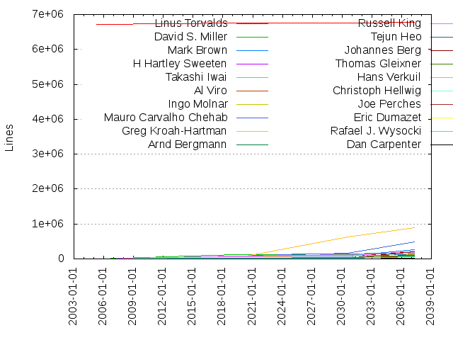
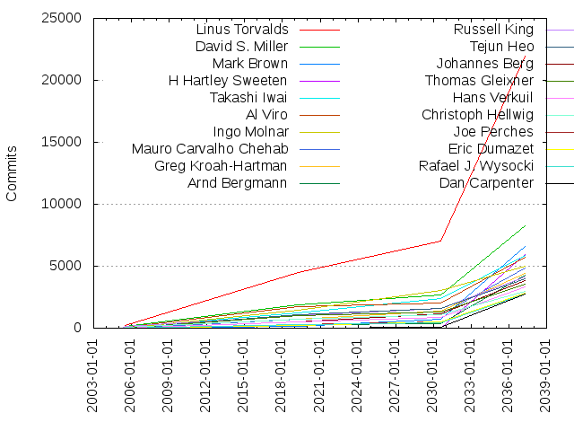

Authors
| Author | Commits (%) | + lines | - lines | First commit | Last commit | Age | Active days | # by commits |
|---|
| Linus Torvalds | 21979 (3.39%) | 6768300 | 63166 | 2005-04-17 | 2017-01-07 | 4282 days, 20:58:27 | 3429 | 1 |
| David S. Miller | 8228 (1.27%) | 182277 | 155960 | 2005-04-17 | 2017-01-05 | 4280 days, 20:21:08 | 2553 | 2 |
| Mark Brown | 6629 (1.02%) | 263251 | 117996 | 2006-02-02 | 2016-12-12 | 3966 days, 15:54:19 | 1555 | 3 |
| H Hartley Sweeten | 5919 (0.91%) | 127096 | 198558 | 2009-04-01 | 2016-06-21 | 2637 days, 20:15:48 | 399 | 4 |
| Takashi Iwai | 5902 (0.91%) | 206603 | 206782 | 2005-03-25 | 2016-12-21 | 4289 days, 17:39:58 | 1893 | 5 |
| Al Viro | 5693 (0.88%) | 102238 | 135904 | 2005-04-03 | 2016-12-26 | 4285 days, 0:54:27 | 1211 | 6 |
| Ingo Molnar | 5002 (0.77%) | 113080 | 86145 | 2005-04-19 | 2016-12-24 | 4267 days, 1:24:53 | 1516 | 7 |
| Mauro Carvalho Chehab | 4883 (0.75%) | 478886 | 422753 | 2005-06-24 | 2016-12-15 | 4192 days, 5:35:52 | 1272 | 8 |
| Greg Kroah-Hartman | 4390 (0.68%) | 894599 | 1086211 | 2002-04-10 | 2016-12-07 | 5354 days, 22:03:56 | 1183 | 9 |
| Arnd Bergmann | 4278 (0.66%) | 55349 | 100088 | 2005-05-18 | 2017-01-04 | 4249 days, 3:02:01 | 854 | 10 |
| Russell King | 4112 (0.63%) | 176504 | 154294 | 2005-01-25 | 2016-12-17 | 4344 days, 12:21:02 | 1379 | 11 |
| Tejun Heo | 3952 (0.61%) | 149396 | 118990 | 2005-04-04 | 2016-11-22 | 4250 days, 3:08:26 | 972 | 12 |
| Johannes Berg | 3839 (0.59%) | 206714 | 141463 | 2005-12-11 | 2017-01-02 | 4040 days, 7:37:39 | 1295 | 13 |
| Thomas Gleixner | 3562 (0.55%) | 87793 | 83537 | 2005-01-19 | 2016-12-27 | 4360 days, 5:43:20 | 861 | 14 |
| Hans Verkuil | 3311 (0.51%) | 222276 | 219738 | 2005-11-09 | 2016-11-25 | 4034 days, 2:46:50 | 893 | 15 |
| Christoph Hellwig | 2974 (0.46%) | 153120 | 234777 | 2005-04-04 | 2017-01-04 | 4293 days, 6:46:49 | 823 | 16 |
| Joe Perches | 2840 (0.44%) | 205869 | 208259 | 2006-01-14 | 2016-12-13 | 3986 days, 2:17:24 | 721 | 17 |
| Eric Dumazet | 2793 (0.43%) | 58059 | 44156 | 2005-06-23 | 2016-12-22 | 4200 days, 4:27:33 | 1346 | 18 |
| Rafael J. Wysocki | 2788 (0.43%) | 69471 | 43695 | 2005-05-06 | 2017-01-06 | 4263 days, 17:23:01 | 1015 | 19 |
| Dan Carpenter | 2721 (0.42%) | 10242 | 9669 | 2006-11-20 | 2016-12-15 | 3677 days, 7:30:20 | 1065 | 20 |
These didn't make it to the top: Geert Uytterhoeven, Axel Lin, Trond Myklebust, Daniel Vetter, Alex Deucher, Paul Mundt, Laurent Pinchart, Dave Airlie, Chris Wilson, Ben Skeggs, Olof Johansson, Bartlomiej Zolnierkiewicz, Arnaldo Carvalho de Melo, Lars-Peter Clausen, Linus Walleij, Kuninori Morimoto, Ralf Baechle, Peter Zijlstra, Sachin Kamat, Alan Cox, Adrian Bunk, Julia Lawall, Jingoo Han, Ville Syrjälä, Stephen Hemminger, Jean Delvare, David Howells, Randy Dunlap, Andrew Morton, Andi Kleen, Eric W. Biederman, Bjorn Helgaas, NeilBrown, Herbert Xu, Heiko Carstens, Viresh Kumar, Ben Dooks, Magnus Damm, Wei Yongjun, Johan Hovold, Steven Rostedt, Paul E. McKenney, Wolfram Sang, Tony Lindgren, Fabio Estevam, Patrick McHardy, Benjamin Herrenschmidt, Felipe Balbi, Oleg Nesterov, Dmitry Torokhov, Ben Hutchings, Jes Sorensen, Jeff Garzik, Hans de Goede, Ian Abbott, Tomi Valkeinen, Jiri Slaby, Thierry Reding, John W. Linville, Jens Axboe, Dan Williams, Guenter Roeck, Yinghai Lu, David Woodhouse, Joerg Roedel, Jeff Layton, Borislav Petkov, Peter Ujfalusi, Namhyung Kim, Mike Frysinger, Jiri Olsa, Alan Stern, Johan Hedberg, J. Bruce Fields, Len Brown, Larry Finger, Uwe Kleine-König, Malcolm Priestley, Jan Kara, Chris Mason, Antti Palosaari, Chuck Lever, Alex Elder, Alexander Duyck, Dave Chinner, Avi Kivity, Marcel Holtmann, Guennadi Liakhovetski, Rusty Russell, Florian Fainelli, Stephen Boyd, Andy Shevchenko, Lee Jones, Alexey Dobriyan, Michael Ellerman, Paul Gortmaker, Rafał Miłecki, Emmanuel Grumbach, Paul Mackerras, Michael Krufky, Felix Fietkau, Frederic Weisbecker, Stephen Rothwell, Sam Ravnborg, Luis R. Rodriguez, Sergei Shtylyov, Roland Dreier, Artem Bityutskiy, Stephen Warren, Jeremy Fitzhardinge, K. Y. Srinivasan, David Brownell, Arend van Spriel, Steve French, Will Deacon, Shawn Guo, Christoph Lameter, Krzysztof Kozlowski, Anton Blanchard, Javier Martinez Canillas, Greg Ungerer, Maxime Ripard, Jonathan Cameron, Aaro Koskinen, Sascha Hauer, Michal Simek, H. Peter Anvin, Tomas Winkler, Bill Pemberton, Marc Zyngier, Christian König, Clemens Ladisch, Theodore Ts'o, Bob Moore, Stefan Richter, Adrian Hunter, Kumar Gala, Miklos Szeredi, Steven Whitehouse, Josef Bacik, Jaegeuk Kim, Michael S. Tsirkin, FUJITA Tomonori, Li Zefan, Michael Chan, Thomas Petazzoni, Fabian Frederick, Akinobu Mita, Martin Schwidefsky, Lennert Buytenhek, Jesper Juhl, Philipp Zabel, Sujith Manoharan, Grant Likely, Simon Horman, Pavel Emelyanov, Nicolas Pitre, James Smart, Sage Weil, Jiri Pirko, Hugh Dickins, Jani Nikula, Boris Brezillon, Catalin Marinas, Gustavo Padovan, Wey-Yi Guy, Matthew Wilcox, James Bottomley, Jesse Barnes, Peter Hurley, Harvey Harrison, Sylwester Nawrocki, Sebastian Andrzej Siewior, Masami Hiramatsu, Jiri Kosina, Kees Cook, Aneesh Kumar K.V, Jan Beulich, Jiang Liu, Vinod Koul, Paulo Zanoni, Eric Paris, Kevin Hilman, Anton Vorontsov, Paul Walmsley, Andy Lutomirski, Pablo Neira Ayuso, Stanislaw Gruszka, Rob Herring, James Hogan, Mel Gorman, Roel Kluin, Daniel Borkmann, Kalle Valo, Daniel Mack, Nicholas Bellinger, Vineet Gupta, Dave Jones, Alexander Aring, Steven Rostedt (Red Hat), David Daney, Michal Kazior, Brian Norris, Jeff Dike, Chaehyun Lim, Alexander Shiyan, Paolo Bonzini, Konrad Rzeszutek Wilk, Paul Bolle, Imre Deak, Eliad Peller, Laxman Dewangan, Oliver Neukum, Nick Piggin, Marek Szyprowski, Masahiro Yamada, Ulf Hansson, Masanari Iida, Ben Widawsky, Matt Carlson, Andrew Lunn, Michael Hennerich, Alexandre Belloni, Sudip Mukherjee, Charles Keepax, Kirill A. Shutemov, Luciano Coelho, Mike Christie, Richard Weinberger, Maarten Lankhorst, Archit Taneja, Eric Sandeen, Florian Westphal, Atsushi Nemoto, Hannes Reinecke, stephen hemminger, Johannes Weiner, Nicolas Ferre, Markus Elfring, navin patidar, Andreas Gruenbacher, Ezequiel Garcia, Gavin Shan, Jarkko Nikula, Philipp Reisner, Oleg Drokin, John Stultz, Alexander Graf, Lars Ellenberg, Jean-Francois Moine, Chen-Yu Tsai, Damien Lespiau, Sven Eckelmann, Kukjin Kim, Dmitry Eremin-Solenikov, Leo Kim, Gerrit Renker, Chris Metcalf, Daniel Lezcano, Lv Zheng, Bruce Allan, Jan Engelhardt, Thomas Graf, Samuel Ortiz, Robert Richter, Ivo van Doorn, Mateusz Kulikowski, Ard Biesheuvel, Andrew Vasquez, Pekka Enberg, Ilya Dryomov, Xiao Guangrong, Vasanthakumar Thiagarajan, Tony Luck, Hauke Mehrtens, Dominik Brodowski, Yan, Zheng, Robert P. J. Day, Michael Buesch, Bart Van Assche, Shaohua Li, David Rientjes, Heiko Stuebner, Darrick J. Wong, Mikulas Patocka, Chao Yu, Jesse Brandeburg, Benjamin Romer, Gabor Juhos, Rajkumar Manoharan, Rob Clark, Marek Vasut, Arik Nemtsov, David Sterba, Arjan van de Ven, Paul Burton, David Ahern, Sebastian Ott, Ming Lei, YOSHIFUJI Hideaki, Jaswinder Singh Rajput, Tomasz Figa, Mika Westerberg, Benjamin Tissoires, Scott Wood, Krzysztof Helt, Peter Chen, Roland Vossen, Ryusuke Konishi, Roger Quadros, Eric Miao, Vlad Yasevich, Sarah Sharp, Matt Fleming, Colin Ian King, Christian Lamparter, Mike Snitzer, David Herrmann, Cyrill Gorcunov, Amitkumar Karwar, Thomas Hellstrom, Mike Rapoport, Gleb Natapov, Lai Jiangshan, Maciej W. Rozycki, Jussi Kivilinna, Wu Fengguang, Tobias Klauser, Christian Borntraeger, Andrzej Hajda, Jouni Malinen, Sakari Ailus, Allan Stephens, Tom Herbert, Steven Toth, Mark Rutland, Rasmus Villemoes, Rabin Vincent, Sujith, Kay Sievers, Helge Deller, Santosh Shilimkar, Jeff Mahoney, Sonic Zhang, Mark Fasheh, Ian Campbell, Sagi Grimberg, Roland McGrath, Jon Hunter, Chanwoo Choi, Ondrej Zary, Ilpo Järvinen, Nishanth Menon, Takashi Sakamoto, Stephen M. Cameron, Srinivas Kandagatla, Miao Xie, Henrique de Moraes Holschuh, Francois Romieu, Pavel Machek, Jan Kiszka, James Morris, Max Filippov, Jesper Nilsson, Devin Heitmueller, Tero Kristo, KAMEZAWA Hiroyuki, Eric Anholt, Dave Hansen, Robert Jarzmik, Mike Isely, Michael Neuling, Bjørn Mork, Glauber Costa, Marcelo Tosatti, Tao Ma, Jacob Keller, Alex Williamson, Zhang Rui, Christophe Ricard, Yuval Mintz, Yoichi Yuasa, Eduardo Valentin, Wang Nan, Gregory CLEMENT, Markos Chandras, Kenji Kaneshige, Jeff Kirsher, Antonio Quartulli, Haavard Skinnemoen, Cornelia Huck, Brian King, Jonathan Corbet, Alexandre Courbot, Vladimir Kondratiev, Denis V. Lunev, Suresh Siddha, Boaz Harrosh, Chen Gang, Andrei Emeltchenko, Yoshihiro Shimoda, Kevin McKinney, Antonino A. Daplas, Peter Huewe, Hante Meuleman, David Vrabel, Sebastian Hesselbarth, Kent Overstreet, Joonsoo Kim, Hariprasad Shenai, Andy Walls, Matthew Garrett, Kyle McMartin, Jarod Wilson, Andrzej Pietrasiewicz, Haojian Zhuang, Jean-Christophe PLAGNIOL-VILLARD, David Henningsson, Michal Hocko, Filipe Manana, Barry Song, John Crispin, Vivek Goyal, Steve Wise, Joel Becker, Davidlohr Bueso, Jon Mason, Daniel Drake, Nicolas Dichtel, WANG Cong, Mitch Williams, Stephane Eranian, Pierre Ossman, Manu Abraham, Richard Cochran, Alexey Starikovskiy, Jean-François Moine, Manuel Lauss, Vivien Didelot, Timur Tabi, Liam Girdwood, Jack Morgenstein, Zhu Yi, Trent Piepho, Lucas Stach, Andy Grover, Andy Adamson, Amitoj Kaur Chawla, Neil Horman, KOSAKI Motohiro, Andy Whitcroft, Rex Zhu, Peter Meerwald, Paul Moore, Franky Lin, Vladimir Zapolskiy, Geliang Tang, Devendra Naga, Lad, Prabhakar, Denys Vlasenko, Rajendra Nayak, Finn Thain, Andres Salomon, Pavel Shilovsky, Thomas Abraham, Joachim Eastwood, Helmut Schaa, Tetsuo Handa, Mathias Krause, Or Gerlitz, Peng Tao, Steffen Klassert, Paolo 'Blaisorblade' Giarrusso, Mika Kuoppala, Keith Busch, David Hildenbrand, Nikolay Aleksandrov, Michal Marek, Mohammed Shafi Shajakhan, Stanislav Kinsbursky, Markus Pargmann, Marcin Slusarz, Liu Bo, Bob Copeland, Andrew Victor, Shannon Nelson, Olaf Hering, Mark Einon, Tvrtko Ursulin, Srinivas Pandruvada, Rashika Kheria, Huang Shijie, Himangi Saraogi, Martin K. Petersen, Shuah Khan, Jaroslav Kysela, Nathan Scott, Michael Holzheu, David Teigland, Joe Thornber, Glen Lee, Sudeep Holla, Stefan Agner, Mike McCormack, David Gibson, Mathieu Desnoyers, Jason Wang, Bjorn Andersson, Corentin Chary, Peter Senna Tschudin, Avinash Patil, Alexander Beregalov, Linas Vepstas, John Fastabend, Emil Tantilov, Mark A. Greer, Ivan Safonov, Marc Kleine-Budde, Juuso Oikarinen, Rickard Strandqvist, Mike Travis, Jon Paul Maloy, Andrea Arcangeli, Geoff Levand, Fengguang Wu, Eli Cohen, Alexei Starovoitov, Glauber de Oliveira Costa, Sasha Levin, Cong Wang, Ying Xue, Simon Wunderlich, Richard Purdie, Kishon Vijay Abraham I, Ido Schimmel, Marek Belisko, Dave Jiang, Bob Peterson, Ricardo Ribalda Delgado, Matthias Beyer, Luis de Bethencourt, Josh Boyer, Grygorii Strashko, Ben Greear, Konstantin Khlebnikov, Huang Weiyi, Benoit Cousson, Shraddha Barke, Andreas Herrmann, Hannes Frederic Sowa, Alexey Khoroshilov, Michel Dänzer, James Simmons, Holger Schurig, Joonyoung Shim, Thomas Renninger, Vladimir Davydov, Jerome Glisse, Francisco Jerez, Sathya Perla, Stefano Stabellini, Jason Cooper, David Chinner, Wim Van Sebroeck, Jack Steiner, Don Skidmore, Baruch Siach, Mike Marciniszyn, Kashyap, Desai, Christof Schmitt, Yaniv Rosner, Josh Poimboeuf, Alexander Shishkin, Keith Packard, Jan Glauber, Bhaktipriya Shridhar, Wanpeng Li, Peter Griffin, Heiner Kallweit, Pavel Roskin, Frank Schaefer, Eilon Greenstein, Alexander Gordeev, Yijing Wang, Nicholas Mc Guire, Julian Anastasov, Jason Wessel, Bryan Wu, Andre Przywara, Benny Halevy, Vitaly Kuznetsov, Rodrigo Vivi, Dmitry Kasatkin, Xenia Ragiadakou, Marek Lindner, Vaibhav Hiremath, Corey Minyard, Sergio Paracuellos, Minchan Kim, Florian Tobias Schandinat, Nobuhiro Iwamatsu, Heikki Krogerus, Daeseok Youn, Rik van Riel, Tilman Schmidt, Xiubo Li, Tushar Behera, Takuya Yoshikawa, Ron Mercer, Oleksij Rempel, Jassi Brar, Eric Sesterhenn, Auke Kok, Sunil Mushran, Gertjan van Wingerde, Dmitry Kravkov, Colin Cross, hayeswang, Mariusz Kozlowski, Doug Anderson, Inki Dae, Dinh Nguyen, Anton Altaparmakov, Greg Rose, Brian Foster, Matt Ranostay, Ludovic Desroches, Michal Nazarewicz, Kevin Cernekee, Jozsef Kadlecsik, Dmitry Monakhov, Daniel Walker, Ander Conselvan de Oliveira, Neil Armstrong, Mimi Zohar, Ursula Braun, Suman Anna, Shawn Lin, Giuseppe CAVALLARO, David Miller, Roland Stigge, Hidetoshi Seto, Tom Zanussi, Kulikov Vasiliy, Jayachandran C, Lin Ming, Kyungmin Park, Jisheng Zhang, Jamie Iles, Andre Guedes, Robert Baldyga, Kim Phillips, Jyri Sarha, Henrik Rydberg, Vikas Chaudhary, Sean Hefty, Heiko Stübner, Jeremy Kerr, Inaky Perez-Gonzalez, Sebastian Reichel, Milton Miller, Huang Ying, Eyal Shapira, Mark Lord, Justin P. Mattock, Brian Gerst, Sekhar Nori, Roman Zippel, Haiyang Zhang, Ajit Khaparde, Vegard Nossum, Hannes Eder, Andrea Gelmini, Lorenzo Pieralisi, Divy Le Ray, Dave Kleikamp, Naoya Horiguchi, Mark Rustad, Josh Triplett, John L. Hammond, Hiroshi Shimamoto, Chunming Zhou, Bryan Schumaker, Veaceslav Falico, Jiri Benc, Dave Martin, Zhao Yakui, Mike Galbraith, Lothar Waßmann, Kinglong Mee, Christoffer Dall, Alex Chiang, Zhenyu Wang, Ohad Ben-Cohen, Dong Aisheng, Dhananjay Phadke, Bruno Randolf, Soren Brinkmann, Philippe Reynes, Michael Opdenacker, Lendacky, Thomas, Jonas Gorski, Srivatsa S. Bhat, Grazvydas Ignotas, Amit Shah, Weston Andros Adamson, Toshi Kani, Ping Cheng, Michał Mirosław, Brice Goglin, Anatolij Gustschin, Pravin B Shelar, Patrick Boettcher, Nishanth Aravamudan, Matt Porter, Vasiliy Kulikov, Lukas Czerner, Anjali Singhai Jain, Nicolin Chen, Kailang Yang, Jarek Poplawski, Matt Roper, Reinette Chatre, Antonio Ospite, Wu Zhangjin, OGAWA Hirofumi, Amerigo Wang, Sergey Senozhatsky, Prarit Bhargava, Changli Gao, Bryan O'Donoghue, Stefan Roese, Ian Kent, Alexander Usyskin, Arnaud Patard, Adam Jackson, Yi Zou, Peter Oberparleiter, Kristian Høgsberg, Christian Gromm, Bryan O'Sullivan, matt mooney, Yevgeny Petrilin, Vaishali Thakkar, Stephan Mueller, Nadav Amit, Evgeniy Polyakov, Jesper Dangaard Brouer, Jayamohan Kallickal, Hendrik Brueckner, kbuild test robot, Sheng Yang, Scott Feldman, Mathias Nyman, Jon Medhurst, Jakub Kicinski, Feng Tang, Dimitris Papastamos, Peter Korsgaard, Juergen Gross, Sara Sharon, Robin Getz, Namjae Jeon, Venkatesh Pallipadi, Thadeu Lima de Souza Cascardo, Tadeusz Struk, Fenghua Yu, Carolyn Wyborny, Alexandre Bounine, Tom St Denis, Robin Murphy, Aya Mahfouz, Ulrich Hecht, Ralph Campbell, Oliver Endriss, Antoine Tenart, Joe Eykholt, Harald Welte, Andrew Bresticker, Vlastimil Babka, Don Zickus, David Kilroy, Krzysztof Hałasa, Jeeja KP, Igor M. Liplianin, Bard Liao, Amit Kumar Salecha, Rami Rosen, Radim Krčmář, Mugunthan V N, Mark Salter, Erik Andrén, Ed L. Cashin, Thomas Meyer, Thomas Bogendoerfer, Sukadev Bhattiprolu, Paul Jackson, Pali Rohár, Luca Ellero, Jim Cromie, Zachary Amsden, Michel Lespinasse, Jason Gunthorpe, Gao feng, YAMANE Toshiaki, Milan Broz, Kim, Milo, Lukas Wunner, Dennis Dalessandro, Tomoya MORINAGA, Pete Zaitcev, Oliver Hartkopp, Krishna Gudipati, Huang Rui, Chris Zankel, Aaron Lu, Tom Tucker, Kevin Hao, Sebastian Siewior, Robert Love, Pawel Moll, Linus Lüssing, YOSHIFUJI Hideaki / 吉藤英明, Nick Kossifidis, Jason Gerecke, Ilia Mirkin, David Kershner, dingtianhong, Matthias Kaehlcke, Andrew de Quincey, Alasdair G Kergon, Varka Bhadram, Phil Sutter, Peter De Schrijver, Jacek Anaszewski, Wang Shilong, Tony Cho, Mike Turquette, Johannes Thumshirn, Jaehoon Chung, Dave Young, Bob Liu, Andrey Ryabinin, Steve Glendinning, Maxim Levitsky, Bing Zhao, Stefan Hajnoczi, Qu Wenruo, Patrik Jakobsson, Laura Abbott, Joseph Lo, Gerald Schaefer, Franck Bui-Huu, Bo Shen, Alexander van Heukelum, Szymon Janc, Richard Zhao, Mathieu Poirier, Fabio Baltieri, Eric Bénard, Caesar Wang, Bhumika Goyal, Sowmini Varadhan, Russell King - ARM Linux, Martyn Welch, Jason Baron, Jamal Hadi Salim, Dean Luick, Ron Rindjunsky, Lan Tianyu, Chad Dupuis, Josh Wu, Isaku Yamahata, Ayaz Abdulla, Alexey Kardashevskiy, Vasu Dev, Eliot Blennerhassett, Seth Forshee, Patrice Chotard, Matan Barak, John Garry, Tyler Hicks, Thomas Pedersen, Graf Yang, Dean Nelson, Andrew F. Davis, John Youn, Steven J. Hill, Phillip Lougher, Oded Gabbay, Nathan Lynch, Li Yang, LABBE Corentin, Hartmut Knaack, Daniel Kurtz, Azael Avalos, Ira Weiny, Ian Munsie, Chuck Ebbert, Amir Vadai, Tracey Dent, Mengdong Lin, Gerd Hoffmann, Fred Isaman, Emilio López, Claudiu Manoil, Baoyou Xie, Alexander Stein, Afzal Mohammed, Stefan Haberland, Sean Young, Richard Guy Briggs, John Johansen, Joern Engel, Zach Brown, Yoshinori Sato, Michael Halcrow, Mark Hounschell, Jarkko Sakkinen, Anand Jain, Stefan Wahren, Stefan Behrens, Saeed Mahameed, Lachlan McIlroy, Yuchung Cheng, Valentine Barshak, Tapasweni Pathak, Stephen Smalley, Rémi Denis-Courmont, Jonathan Brassow, Janusz Krzysztofik, Herton Ronaldo Krzesinski, Frans Klaver, Daniel Baluta, Cody P Schafer, Bhanu Prakash Gollapudi, Michael Witten, Mat Martineau, Martin Peres, Keerthy, Javier Martin, Javier Cardona, Andy Gross, Adrian Knoth, Yogesh Ashok Powar, Johannes Stezenbach, Janusz Dziedzic, Arnaud Lacombe, Anssi Hannula, Wang Chen, Simon Arlott, Rui Miguel Silva, Heinz Mauelshagen, Hans-Christian Egtvedt, Giridhar Malavali, Deepak Saxena, Catherine Sullivan, Abhijeet Kolekar, Sreekanth Reddy, Raja Mani, Li RongQing, Leonid V. Fedorenchik, Gu Zheng, Felipe Contreras, Eric Van Hensbergen, Dmitri Vorobiev, Alison Schofield, Thomas Pugliese, Steffen Trumtrar, Serge E. Hallyn, Márton Németh, Jay Vosburgh, James Courtier-Dutton, Doug Ledford, roel kluin, eric miao, Willem de Bruijn, Vivek Gautam, Sandhya Bankar, Octavian Purdila, Karsten Keil, Florian Vaussard, Ben Collins, Ana Rey, Zhao Lei, Subhransu S. Prusty, Nicolas Kaiser, Kiyoshi Ueda, Joe Carnuccio, Tomeu Vizoso, Richard Fitzgerald, Murali Karicheri, Michael Turquette, Jacob Pan, Albert Lee, Shan Wei, Ross Zwisler, Rasesh Mody, Matias Bjørling, Ivan T. Ivanov, Grant Grundler, Cyrille Pitchen, Becky Bruce, Vasily Khoruzhick, Swen Schillig, Matt Mackall, Irina Tirdea, Chase Southwood, Tony Prisk, Nathan Fontenot, Jan Schmidt, Danny Kukawka, Sean Paul, Oder Chiou, Lidza Louina, LEROY Christophe, Hanjun Guo, Darren Hart, Adam Radford, Wolfgang Grandegger, Vladislav Zolotarov, Tim Gardner, Shubhrajyoti D, Nicholas Piggin, Neil Brown, Kirill Tkhai, Ido Yariv, Ebru Akagunduz, Dale Farnsworth, Seungwon Jeon, Ray Jui, Peter Rosin, Mikael Pettersson, Iyappan Subramanian, Igor Grinberg, Eugeni Dodonov, Alban Bedel, Paul Zimmerman, Lukasz Majewski, Liad Kaufman, Hui Wang, Huacai Chen, Hadar Hen Zion, Don Fry, françois romieu, Yong Zhang, Tony Breeds, Rahul Sharma, MyungJoo Ham, Michael Grzeschik, Manish Chopra, John Harrison, Ivan Khoronzhuk, Gulsah Kose, Dirk Brandewie, Denis Kirjanov, Chris Wright, Andy Fleming, Vladimir Murzin, Vivek Natarajan, Senthil Balasubramanian, Roopa Prabhu, Myron Stowe, Michal Schmidt, Kefeng Wang, Joseph Qi, Christophe Leroy, Chandra Seetharaman, Andreas Schwab, Yasuyuki Kozakai, Shinya Kuribayashi, Olli Salonen, Jeff Skirvin, Henrik Kretzschmar, Goldwyn Rodrigues, Erik Andr?n, Enric Balletbo i Serra, Christian Engelmayer, Carsten Otte, Asias He, Moni Shoua, Matthias Schwarzott, Hollis Blanchard, Ariel Elior, Thomas Huth, Saurav Kashyap, Richard Genoud, Paolo Ciarrocchi, Mattia Dongili, Martin Sperl, Marcelo Ricardo Leitner, Kan Liang, Jonas Bonn, David Spinadel, Dave Gordon, Cesar Eduardo Barros, Zhang Yanfei, Troy Kisky, Suzuki K Poulose, Raghu Vatsavayi, Pratyush Anand, Neal Cardwell, Mian Yousaf Kaukab, Lokesh Vutla, James Ketrenos, Hirokazu Takata, Hartmut Hackmann, Andiry Xu, wang di, Xin Long, Wei Yang, Thor Thayer, Russ Anderson, Pranith Kumar, Leonid Yegoshin, Lee Schermerhorn, Ivan Vecera, Daniel Axtens, Aybuke Ozdemir, Alexey Klimov, Ahmed S. Darwish, Yaowei Bai, Mike Miller, Mark Haverkamp, Julien Grall, Filipe David Borba Manana, Eric Moore, Douglas Anderson, Daniel Thompson, Chao Xie, Bernhard Walle, Arnaud Ebalard, Anson Huang, Andreas Mohr, Alessandro Zummo, Zhangfei Gao, Stefan Achatz, Robin Holt, Richard Kennedy, Mitko Haralanov, Martin Michlmayr, Maor Gottlieb, Leon Romanovsky, Josef Sipek, Frans Pop, Aristeu Rozanski, Thiemo Seufer, Stuart Yoder, Mario Kleiner, Liu Ying, Kamil Debski, Jie Liu, Jesse Gross, Himanshu Madhani, Erik Arfvidson, Domen Puncer, Boris Ostrovsky, Balaji T K, Wenyou Yang, Tim Abbott, Shahed Shaikh, Richard Kuo, Mingming Cao, Manfred Spraul, Alan Jenkins, Romain Perier, Rhyland Klein, Dan Streetman, Bharat Bhushan, Abhilash Kesavan, Yan Zheng, Xinming Hu, Shivani Bhardwaj, Marek Olšák, Jie Yang, Frank Blaschka, David Härdeman, Anand Gadiyar, Alexander Kuleshov, Thierry Escande, Taku Izumi, Stefan Ringel, Ricardo Neri, Pankaj Dubey, Padmanabh Ratnakar, Niklas Söderlund, Marcos Paulo de Souza, Liping Zhang, Eric Huang, Benjamin LaHaise, Xi Wang, Vinicius Costa Gomes, Vaibhav Agarwal, Tim Sell, Sucheta Chakraborty, Steven Miao, Simon Guinot, Rajesh Borundia, Li Jun, Hiroshi DOYU, Hartley Sweeten, Geyslan G. Bem, Frank Li, Dmitry Eremin, Cliff Cai, Chris Leech, Carlo Caione, Waldemar Rymarkiewicz, Toshiaki Yamane, Suzuki K. Poulose, Stefan Schmidt, Petr Mladek, Michel Thierry, Markus Metzger, Joe Stringer, Joakim Tjernlund, Jean Pihet, Jan Blunck, Faisal Latif, Douglas Gilbert, Chun-Yeow Yeoh, Amit Daniel Kachhap, Adam Thomson, Walt Feasel, Vladimir Barinov, Tang Chen, Paulius Zaleckas, Ley Foon Tan, Ezequiel García, Eva Rachel Retuya, Eddie Wai, Cyril Chemparathy, Casey Schaufler, Arve Hjønnevåg, Anshuman Khandual, Valentin Longchamp, Roy Spliet, Rene Herman, Mike Marshall, Martin KaFai Lau, Kurt Hackel, Jeff Moyer, Javi Merino, Janani Ravichandran, Ivan Kokshaysky, Eldad Zack, Cliff Wickman, Balbir Singh, Aravind Gopalakrishnan, Zheng Liu, Suravee Suthikulpanit, Seth Jennings, SeongJae Park, Paul Menage, Moritz Muehlenhoff, Matthieu CASTET, Martin Brandenburg, Marc Dietrich, Kristen Carlson Accardi, Joachim Fenkes, Jens Taprogge, Gregory Herrero, venkatesh.pallipadi@intel.com, Waiman Long, Qipan Li, Pierre-Louis Bossart, Padmavathi Venna, Monam Agarwal, Jakob Bornecrantz, Ishizaki Kou, Hariprasad S, Eric Lapuyade, Dylan Reid, Cristina Opriceana, Anna Schumaker, Sunil Goutham, Salyzyn, Mark, Philippe De Muyter, Libin Yang, Li Zhong, Eric Biggers, Don Brace, Daniel T Chen, Daniel J Blueman, Anish Bhatt, Andres More, Andreas Dilger, Andrea Merello, Yongqiang Yang, Wanlong Gao, Sridhar Samudrala, Milo Kim, Matt Redfearn, Lee, Chun-Yi, Krzysztof Halasa, Kenneth W Chen, akpm@osdl.org, William Breathitt Gray, Valentin Rothberg, Paul Fulghum, Masahide NAKAMURA, Mahesh Salgaonkar, Lyude, Krishna Kumar, Ilan Peer, Dimitris Michailidis, David Fries, Chris Ball, Brett Rudley, Yaniv Gardi, Xing Zheng, Vipul Pandya, Vasundhara Volam, Ryan Mallon, Patrick Mochel, Neerav Parikh, Libo Chen, Hillf Danton, George Cherian, Duan Jiong, Davide Libenzi, Bartosz Golaszewski, Andrey Smirnov, Alexander Bondar, Xiaotian Feng, Toshiaki Makita, Teodora Baluta, Sachin Prabhu, Rolf Eike Beer, Muhammad Falak R Wani, Matthias Brugger, Ksenija Stanojevic, Jitendra Kalsaria, Graeme Gregory, Emil Velikov, David Brown, Dan Magenheimer, Brian Masney, Alessandro Rubini, Tomasz Stanislawski, Tom Lendacky, Scott Jiang, Sabrina Dubroca, Phil Edworthy, Peter P Waskiewicz Jr, Nick Dyer, Martin Kepplinger, Malli Chilakala, Lydia Wang, Kristoffer Ericson, Jinshan Xiong, Ilija Hadzic, Guoqing Jiang, Dmitry Lifshitz, Deng-Cheng Zhu, Bruno Prémont, Alexey Brodkin, Achiad Shochat, majianpeng, YoungJun Cho, Yakir Yang, Winkler, Tomas, Vitaly Bordug, Tim Chen, Rupesh Gujare, Rob Landley, Richard Alpe, Ravikiran G Thirumalai, Mark McLoughlin, Karl Beldan, Jitendra Bhivare, Ian Molton, Frank Praznik, Daniel Wagner, Chris Pascoe, Benjamin Marzinski, Yehuda Sadeh, Seung-Woo Kim, Omar Sandoval, Jon Loeliger, Joel Fernandes, Jochen Friedrich, Hiroshi Doyu, Heinrich Schuchardt, He Kuang, Eugenia Emantayev, AnilKumar Ch, Alex Dubov, Yasunori Goto, Yann Droneaud, Tobias Jakobi, Sony Chacko, Samuel Iglesias Gonsalvez, Ruslan Pisarev, Ravishankar karkala Mallikarjunayya, Pawel Osciak, Maxime Coquelin, Matthew R. Ochs, Josh Cartwright, Haneen Mohammed, Gabriel FERNANDEZ, Erik Hugne, Eran Harary, Dmitry Artamonow, Denis Cheng, Ajay Kumar Gupta, Shawn Bohrer, Satyam Sharma, Rakib Mullick, Pekka Paalanen, Omar Ramirez Luna, Nithin Sujir, James Morse, Haggai Eran, Gábor Stefanik, Ben M Cahill, Anirban Chakraborty, Andy Gospodarek, Andrey Vagin, Zhaolei, Yegor Yefremov, Yasuaki Ishimatsu, Xunlei Pang, Seth Heasley, Roberta Dobrescu, Pavan Savoy, Oscar Mateo, Nicolas Palix, Mihai Caraman, Johan Meiring, Hal Rosenstock, Georgi Djakov, Edward Cree, wangweidong, Wei Liu, Wayne Porter, Wang Sheng-Hui, Stefan Weinhuber, Shaohui Xie, Roberto Sassu, Ramkumar Ramachandra, Petri Gynther, Martin Blumenstingl, Karol Herbst, Jonas Aaberg, Hans Schillstrom, Eli Billauer, Dongsheng Yang, Daisuke Nishimura, Chris Zhong, Ashok Raj, Anna-Maria Gleixner, Andre Noll, Abylay Ospan, wanzongshun, Zhi Yong Wu, Xiantao Zhang, Suresh Jayaraman, Steve Hodgson, Stefano Brivio, Sreenivasa Honnur, John David Anglin, James Chapman, Henry Ptasinski, Dotan Barak, Charles Clément, Brian Haley, Beniamino Galvani, Bastian Hecht, Alex Shi, Yazen Ghannam, Vincent Guittot, Venki Pallipadi, Varun Prakash, Steve Longerbeam, Somnath Kotur, Shirish Pargaonkar, Nicolai Stange, Mithlesh Thukral, Manjunath Hadli, Hitoshi Mitake, Gregory Haskins, George Spelvin, Emil Goode, Dexuan Cui, Dave Gerlach, Daniel Hellstrom, Christophe Jaillet, Ananth N Mavinakayanahalli, Ajay Kumar, Yishai Hadas, Tsutomu Itoh, Srikar Dronamraju, Simon Wood, Masakazu Mokuno, Luis Carlos Cobo, Luca Ceresoli, Lorenzo Bianconi, Lino Sanfilippo, Jing Huang, Igor Mammedov, Evgeniy Dushistov, Eric Auger, Daniel Ritz, Christoph Egger, Arun Siluvery, Andreas Oberritter, Yan, Thomas Weber, Sven Wegener, Shobhit Kumar, Samuel Thibault, Samu Onkalo, Richard Knutsson, Prashant Gaikwad, Paul Turner, Paolo Abeni, Nicolas Iooss, Mikko Perttunen, Lubomir Rintel, Liviu Dudau, Kalesh AP, Florian Schilhabel, Duc Dang, Douglas Schilling Landgraf, Dominik Dingel, David Cohen, Chris Rorvick, Andreas Fenkart, Alexander Clouter, Vitaly Wool, Ville Syrjala, Vignesh R, Tobin Davis, Stas Sergeev, Sjoerd Simons, Rebecca Schultz Zavin, Priit Laes, Nikanth Karthikesan, Monk Liu, Mohamed Abbas, Mike Kravetz, Michael Wang, Maxim Patlasov, Jordan Crouse, Jaswinder Singh, Eran Ben Elisha, Benjamin Gaignard, Arun Kumar K, Andreas Larsson, Amol Lad, Alistair Popple, Alexandre TORGUE, Yunlong Song, Wei Ni, Vasily Averin, Ulrich Drepper, Sonika Jindal, Rudolf Marek, Richard Röjfors, Pramod Gurav, Noam Camus, Nikolay Borisov, Naveen Krishna Chatradhi, Muli Ben-Yehuda, Maxime Bizon, Markus Rechberger, Mahesh Bandewar, Luiz Fernando N. Capitulino, Laurent Vivier, Jubin John, James.Smart@Emulex.Com, Govindarajulu Varadarajan, Flora Cui, Fan Du, Dirk Behme, Dimitri Sivanich, Chien Tung, Carlos Corbacho, Bryan Thompson, Breno Leitao, Wang YanQing, Tuomas Tynkkynen, Tarun Kanti DebBarma, Stuart Menefy, Stanislav Fomichev, Sourav Poddar, Robert Elliott, Per Forlin, Neil Zhang, Naveen N. Rao, Nadav Har'El, Miaoqing Pan, Meenakshi Venkataraman, Martin Peschke, Martin Fuzzey, Ioana Ciornei, Ian Armstrong, Eric Engestrom, Deepak S, Dan Rosenberg, Christophe JAILLET, Chaithrika U S, Brandon Philips, Bernd Schmidt, Arne Jansen, Alessio Igor Bogani, Wayne Boyer, Vince Bridgers, Sudeep Dutt, Sinan Kaya, Philip Rakity, Mans Rullgard, Karsten Wiese, Jody McIntyre, Jammy Zhou, Gerhard Sittig, Gautham R Shenoy, Devesh Sharma, Denis Carikli, Daniel De Graaf, Andrew Duggan, Alim Akhtar, Akash Goel, alex.bluesman.smirnov@gmail.com, Yang Shi, Vojtech Pavlik, Tiejun Chen, Tariq Toukan, Syam Sidhardhan, Stephane Viau, Paul Parsons, Pantelis Antoniou, Olaf Kirch, Lisa Nguyen, Kirill Korotaev, Junxiao Bi, Jerome Marchand, Izik Eidus, Frank Pavlic, Dmitri Belimov, Cyril Bur, Coly Li, Brian Niebuhr, Badari Pulavarty, Axel Haslam, Yu Zhao, Tomas Henzl, Todd Poynor, Taeung Song, Stepan Moskovchenko, Robert Hancock, Ricardo Cerqueira, Melike Yurtoglu, Marcin Wojtas, Maciej S. Szmigiero, J. German Rivera, Gwenhael Goavec-Merou, Doug Thompson, Dmitry Adamushko, David Mosberger-Tang, Chris Dearman, Benjamin Poirier, Ben Goz, Anup Patel, Andy Green, Álvaro Fernández Rojas, sjur.brandeland@stericsson.com, Wan ZongShun, Stratos Karafotis, Stefani Seibold, Solomon Peachy, Sjur Brændeland, Phoebe Buckheister, Loic Poulain, Lespiau, Damien, Keith Owens, Jonghwan Choi, Jay Cliburn, Jarno Rajahalme, Hoang-Nam Nguyen, Heiko Schocher, H. Nikolaus Schaller, Egbert Eich, Bartosz Markowski, Asai Thambi S P, Anisse Astier, Alexander Sverdlin, Uri Shkolnik, Tim Harvey, Steve Capper, Sean MacLennan, Pontus Fuchs, Patrick Caulfield, Oren Givon, Nikolai Kondrashov, Nicholas Krause, Matthijs Kooijman, Manjunath Goudar, Ken Cox, Jun Nie, Jason Low, Horia Geanta, Hari Prasath Gujulan Elango, Felix Blyakher, Dilek Uzulmez, David Lechner, Dave Olson, Andy Yan, Zhang, Yanmin, Xishi Qiu, Tatyana Nikolova, Siddha, Suresh B, Ricardo Labiaga, Quentin Lambert, Nitin Gupta, Niklas Cassel, Martin Bugge, Marcel Ziswiler, Mandeep Singh Baines, Kylene Jo Hall, Komuro, Kirill Smelkov, Jean Sacren, Huang, Xiong, Harish Chegondi, Fugang Duan, Andrey Smetanin, Andrew Donnellan, AceLan Kao, maximilian attems, Zhang Xiantao, Yi Li, Victor Kamensky, Tomasz Nowicki, Timo Teräs, Stefan Assmann, Srivatsa Vaddagiri, Shmulik Ladkani, Prabhakar Lad, Moore, Eric, Mikko Rapeli, Mark Yao, Luca Coelho, Lu Guanqun, Latchesar Ionkov, Konrad Zapalowicz, Jingchang Lu, Jean Tourrilhes, Gui Jianfeng, Greg Thelen, Emil Medve, Eliezer Tamir, Elad Raz, Eduardo Habkost, David L Stevens, Casey Leedom, Brian Austin, Arvid Brodin, Andreas Färber, Alberto Panizzo, nikolay@redhat.com, nagalakshmi.nandigama@lsi.com, Zefir Kurtisi, Yuanhan Liu, Yann E. MORIN, Yan Burman, Venu Byravarasu, Tony Battersby, Tang Yuantian, Shannon Zhao, Satoru Takeuchi, Sangbeom Kim, Saeed Bishara, Rehas Sachdeva, Paul Durrant, Miguel Gómez, Madalin Bucur, Liang Zhen, KY Srinivasan, Jörn Engel, Juri Lelli, Josh Durgin, Jon Smirl, Jacob Shin, Hans J. Koch, Guo-Fu Tseng, Govindraj.R, Changhwan Youn, Benjamin Thery, Aurelien Jarno, Andrey Utkin, Andi Shyti, Anatol Pomozov, Vyacheslav Dubeyko, Vatika Harlalka, Tristan Ye, Tiger Yang, Sudarsana Reddy Kalluru, Rich Felker, Rajesh Shah, Przemo Firszt, Oskar Schirmer, Mohamad Haj Yahia, Lalit Chandivade, Jens Freimann, Jeff Liu, Jaya Kumar, Greg Dietsche, Giuseppe Cavallaro, Gao Feng, Eric Leblond, David Lin, Behan Webster, Andrei Otcheretianski, Andreas Regel, Amir Shehata, Albert Herranz, Zidan Wang, Xose Vazquez Perez, Valentina Manea, Stefan Berger, Salah Triki, Robert Jennings, Peter Foley, Pekon Gupta, Misael Lopez Cruz, Milo(Woogyom) Kim, Manjunathappa, Prakash, Ladislav Michl, Joonas Lahtinen, Jamie Lentin, Ira Snyder, Huang, Ying, Hank Janssen, Guillaume Nault, GuanXuetao, Gabriel Fernandez, Duncan Sands, Duane Griffin, Cong Ding, Boris Barbulovski, Alex Smith, Alan Ott, Aaron Sierra, Zoltan Kiss, Yadwinder Singh Brar, Wang Long, Vasanthy Kolluri, Tobias Lorenz, Thierry MERLE, Sylvain Munaut, Suresh Reddy, Shubhrajyoti Datta, Peter Oh, Olivier Grenie, Mike Waychison, Maurus Cuelenaere, Matthew Vick, Matthew McClintock, Kieran Bingham, John Soni Jose, John Kacur, Janne Grunau, Hidehiro Kawai, Daniel Pieczko, Daniel Kiper, Chen Gong, Carlos Palminha, Bin Liu, Alok Kataria, Zubair Lutfullah Kakakhel, Stanimir Varbanov, Shiraz Hashim, Roger Pau Monne, Parthasarathy Bhuvaragan, Nicolas Schichan, Nickolay V. Shmyrev, Michal Piotrowski, Mats Randgaard, Masatake YAMATO, Luiz Capitulino, Loc Ho, Leo Yan, Kedareswara rao Appana, Karen Xie, KaiGai Kohei, Julius Volz, Jukka Rissanen, John Keeping, Javier M. Mellid, Javier González, Ido Shamay, Horms, Hai Li, Eugene Surovegin, Erik Gilling, Eric B Munson, David Ertman, David Dillow, David Decotigny, Daniel Glöckner, Cristina Moraru, Baoquan He, Andreas Ruprecht, Alexandre Bailon, Adam Buchbinder, Zhao Qiang, Vincent Stehlé, Vincent Abriou, Vince Weaver, Sudhakar Rajashekhara, Sjur Braendeland, Segher Boessenkool, Robert Reif, Markus Mayer, Mark Langsdorf, Marco Stornelli, Kent Yoder, Kelley Nielsen, Jun'ichi Nomura, Juha Yrjola, Juergen Beisert, Joel Stanley, Holger Eitzenberger, Hema HK, Greg Donald, Flavio Leitner, Darron Broad, Christoph Fritz, Chris Park, Bodo Stroesser, Arthur Jones, Alan Tull, Alan, Adheer Chandravanshi, AKASHI Takahiro, dann frazier, Zi Shen Lim, Vishal Verma, Vikas Sajjan, Tim Kryger, Sumit.Saxena@avagotech.com, Stefan Raspl, Sricharan R, Shengzhou Liu, Shaik Ameer Basha, Punit Agrawal, Phil Dibowitz, Pavankumar Kondeti, Nick Hoath, Naveen Krishna Ch, Mythri P K, Mike Dunn, Michael Welling, Martin Willi, Marcus Cooper, Mahati Chamarthy, Luis Henriques, Luca Tettamanti, Lorenzo Colitti, Laurent Navet, Laura Garcia Liebana, Joe Lawrence, Jason Gaston, Ian McDonald, Horia Geantă, Heena Sirwani, Gianluca Gennari, Frederic Danis, David Schleef, Daniel Stone, Damien Riegel, Christoph Paasch, Carlos Maiolino, Benoit Parrot, Avri Altman, Arun Easi, Andreas Noever, Adam Litke, Xiangliang Yu, Will Newton, Wei WANG, Vandana Kannan, Tim Shimmin, Thomas Klein, Santiago Leon, Rodolfo Giometti, Nogah Frankel, Nimrod Andy, Michal Malý, Michal Kubeček, Matt LaPlante, Markus Heiser, Kumar Sanghvi, João Paulo Rechi Vita, Joonwoo Park, Jongpill Lee, Jay Sternberg, Florian Mickler, Christoph Jaeger, Banajit Goswami, Andreea-Cristina Bernat, Andreas Eversberg, Amarjargal Gundjalam, Willy Tarreau, Wengang Wang, Wang Xingchao, Tülin İzer, Todd Fujinaka, Stefan Bader, Sonny Rao, Samuel Pitoiset, Robert Olsson, R Sricharan, Peter Chubb, Navya Sri Nizamkari, Micky Ching, Matti Gottlieb, Majd Dibbiny, Lu Baolu, Lars Persson, Krzysztof Opasiak, Kautuk Consul, Joshua Clayton, Jonathan Nieder, Jaedon Shin, Insu Yun, Horst Hummel, Greg Banks, Gal Pressman, Florin Malita, Feng Wu, Dmitry Kalinkin, Dean Anderson, Darius Augulis, Cédric Le Goater, Chunyan Zhang, Chuansheng Liu, Christian Dietrich, Chen, Gong, Bandan Das, Amit Kucheria, Alexandre Pereira da Silva, Alexander Block, Alex Gartrell, Akira Takeuchi, Yingjoe Chen, Xue jiufei, Tina Ruchandani, Teemu Paasikivi, Shailendra Verma, Seungwhan Youn, Prasanna Karthik, Pan Bian, Nadia Derbey, Mohammed Gamal, Michael Wu, Mattias Wallin, Matthew Leach, Mark Nelson, Mark M. Hoffman, Kejian Yan, Jan-Bernd Themann, Giedrius Statkevičius, Frans Meulenbroeks, Elise Lennion, Easwar Hariharan, Dulshani Gunawardhana, Darshana Padmadas, Christian Daudt, Chas Williams, Chaoming Li, Boojin Kim, Bhupesh Sharma, Bastien Nocera, Anson Jacob, Alexander Yarygin, santosh.shilimkar@oracle.com, andrew hendry, Yong Wang, Yang Zhang, Wen Congyang, Tyrel Datwyler, Thomas Falcon, Thara Gopinath, Sumit Semwal, Steve Grubb, Shanyu Zhao, Selvin Xavier, Sanchayan Maity, Philippe Rétornaz, Phil Carmody, Peter Osterlund, Pavel Pisa, PJ Waskiewicz, Nandini Hanumanthagowda, Moritz Fischer, Maya Erez, Maxim Mikityanskiy, Leo Chen, Kristina Martšenko, Kevin Coffman, Jonathan Austin, Jiro SEKIBA, Ira W. Snyder, Ike Panhc, Ganesan Ramalingam, Forest Bond, Erez Shitrit, Du, Changbin, Cyril Roelandt, Changman Lee, Beomho Seo, Benson Leung, Artem B. Bityutskiy, Arnaud Pouliquen, André Goddard Rosa, Alon Bar-Lev, Adrian McMenamin, Abhijith Das, zhangwei(Jovi), Zhang Shengju, Yeliz Taneroglu, Yang Yingliang, William Hubbs, Weidong Han, Vlad Dogaru, Ulrich Kunitz, Tomoya, Tiffany Lin, Takashi YOSHII, Steven King, Slava Grigorev, Shradha Shah, Sebastian Sanchez, Sean Wang, Russ Dill, Rick Jones, Rashika, Ram Pai, Raghavendra K T, Prabhakar Kushwaha, Pavel Emelianov, Niu Yawei, Nicolas Boichat, Nick Andrew, Moger, Babu, Milind Arun Choudhary, Mika Kahola, Michal Suchanek, Mallikarjuna R Chilakala, Ken Kawasaki, Jeremiah Mahler, Jamie Wellnitz, Ilya Yanok, Guo Chao, Gregor Boirie, Gary Bisson, Franklin S Cooper Jr, Frank Rowand, Eugene Crosser, Deepa Dinamani, David Binder, Christian Krafft, Chris Bagwell, Chander Kashyap, Binoy Jayan, Bernie Thompson, Andy Zhou, Andrew Patterson, Amy Griffis, Zhi Wang, Vipul Kumar Samar, Vincent Cuissard, Shreyas B. Prabhu, Shimoda, Yoshihiro, Shahar Levi, Sergio Aguirre, Sergey Ryazanov, Sandeep Paulraj, S.Çağlar Onur, Riku Voipio, Richard Henderson, Qinghuang Feng, Qais Yousef, Prasanna S Panchamukhi, Michael Schmitz, Marcin Kościelnicki, Mahesh Rajashekhara, Lina Iyer, Kurt Kanzenbach, Ken Chen, Jonghwa Lee, Ido Shayevitz, Hagen Paul Pfeifer, Fernando Luis Vazquez Cao, Fang, Yang A, Dudley Du, Douglas Thompson, David Ward, Cedric Le Goater, Benjamin Coddington, Aruna Balakrishnaiah, Arnd Hannemann, Armen Baloyan, Anthony Liguori, Andrey Shvetsov, Andre Haupt, Alwin Beukers, Allen Hubbe, Alexandros Batsakis, Alexander Chiang, Alek Du, Akeem G Abodunrin, Víctor Manuel Jáquez Leal, Thomas Huehn, Steve Twiss, Steffen Maier, Sritej Velaga, Somya Anand, Shashank Sharma, Sanjeev Premi, Rene Sapiens, Raymond Yau, Petr Vandrovec, Peter Wu, Peter Jones, Pablo Neira, Noralf Trønnes, Nishant Sarmukadam, Nick Nunley, Michael Reed, Matt Helsley, Mark Tinguely, Mark Bloch, Lucas De Marchi, Liu Yu, Lijun Ou, Keshava Munegowda, Ken Wang, Josef "Jeff" Sipek, Jonathan Woithe, John Linn, Jemma Denson, Jakub Sitnicki, J Keerthy, Ingo Tuchscherer, Hyungwon Hwang, Greg Kurz, Frederik Deweerdt, Fabio Porcedda, Fabio Falzoi, Eryu Guan, Ernesto Ramos, Darren Etheridge, Bobi Jam, Ben Gamari, Anton Tikhomirov, Alexander Holler, sayli karnik, Zhao, Gang, Vikram Pandita, Vijaya Mohan Guvva, Valdis Kletnieks, Ulrich Obergfell, Tina Johnson, Subhash Jadavani, Steven J. Magnani, Steve Dickson, Shane Huang, Seokmann Ju, Seiji Aguchi, Rongjun Ying, Ramakrishna Pallala, Philip Avinash, Petr Kulhavy, Petr Cvek, Peter Oruba, Peter Hüwe, Pete Popov, Pavel Fedin, Olivier Sobrie, Ming Lin, Minfei Huang, Mike Looijmans, Michał Kępień, Michael Kerrisk, Maurizio Lombardi, Marc Gonzalez, Maarten ter Huurne, Lorenzo Stoakes, Lior David, Kristen Accardi, Kiran Padwal, Kevin Liu, KOVACS Krisztian, Josef 'Jeff' Sipek, Jianyu Zhan, James Liao, James A Shackleford, Jakub Pawlowski, J.Bruce Fields, Ivaylo Dimitrov, Hayes Wang, Felix Beck, Elena Oat, Dmitry Safonov, Denis Vlasenko, Daniel Cotey, Curt Wohlgemuth, Chun-Hao Lin, Ching Huang, Brad Volkin, Bengt Jonsson, Ben Gardiner, Bamvor Jian Zhang, Artem B. Bityuckiy, Andrea Righi, Andrea Bittau, Amir Goldstein, Adam Ford, Éric Piel, travis@sgi.com, sfeldma@cumulusnetworks.com, hartleys, Zhang Wei, Yang Hongyang, Venkateswararao Jujjuri (JV), Vaidyanathan Srinivasan, Torben Hohn, Tim Blechmann, Tim Bird, Thiago Farina, Stephane Grosjean, Stelian Pop, Stefan Weil, Stefan Sørensen, Sifan Naeem, Shreyas Bhatewara, Shengjiu Wang, Sarveshwar Bandi, Santosh Nayak, Roy Franz, Rajiv Andrade, Preeti U Murthy, Pan Xinhui, Oren Weil, Naga Chumbalkar, Michal Januszewski, Leilk Liu, Leif Lindholm, Kumar Amit Mehta, Kelvin Cheung, Jose Alberto Reguero, Jonathan McDowell, Jeremy Linton, Jann Horn, Jaewon Kim, Jaecheol Lee, Ilan Elias, Ian Morris, Hyok S. Choi, Harish Zunjarrao, George G. Davis, Feng Kan, Fan Yong, David Matlack, Daode Huang, Daniel Ribeiro, Craig Gallek, Chunfeng Yun, Christian Riesch, Chanho Park, Chandrabhanu Mahapatra, Boqun Feng, Assaf Krauss, Ashutosh Dixit, Antony Pavlov, Antonios Motakis, Andrey Borzenkov, Alexandru Gheorghiu, Akeem G. Abodunrin, monk.liu, dmitry pervushin, Yendapally Reddy Dhananjaya Reddy, Venkatraman S, Vahram Aharonyan, Tushar Dave, Tommi Rantala, Sumit Saxena, Sujit Reddy Thumma, Stefan Christ, Srinidhi Kasagar, Simon Kagstrom, Shlomo Pongratz, Scott Branden, Samuel Tardieu, Roy Zang, Roi Dayan, Ravishankar Karkala Mallikarjunayya, Raphaël Beamonte, Quinn Tran, Pallipadi, Venkatesh, Naresh Gottumukkala, Muralidharan Karicheri, Martin Hundebøll, Mark Allyn, Maninder Singh, Kleber Sacilotto de Souza, Kamalesh Babulal, John Heffner, Jason Liu, Jan Luebbe, Gregory Greenman, Gabriele Mazzotta, Frank Haverkamp, Figo.zhang, Fernando Luis Vázquez Cao, Felipe F. Tonello, Ed Lin, Durgadoss R, David Jander, Crestez Dan Leonard, Chuanxiao Dong, Chase Douglas, Benoît Thébaudeau, Ayala Beker, Ashwin Chaugule, Anil Belur, Adrian-Ken Rueegsegger, Zhaoyang Liu, Yang, Bo, Will Drewry, Suman Tripathi, San Mehat, Rafa� Bilski, Philip J Kelleher, Phil Reid, Petr Tesarik, Pavel Hofman, Nitin A Kamble, Nilesh Javali, Moore, Eric Dean, Mintz, Yuval, Minghuan Lian, Michel Ludwig, Meelis Roos, Matthias Urlichs, Markus Stockhausen, Manuel Schölling, Maciej Sosnowski, Luca Barbieri, Lars Lindley, K.Prasad, Julian Andres Klode, Jorge Eduardo Candelaria, Jonas Jensen, John Keller, Hans Wennborg, Guodong Xu, Grant Coady, Gary R Hook, Gary Hade, Eduard - Gabriel Munteanu, Dmitry Vyukov, Denis CIOCCA, Dave Peterson, Bernd Porr, Ashish Jangam, Arthur Othieno, Arend Van Spriel, Alexey Kuznetsov, Alexander Kapshuk, Al Cooper, Adriana Reus, hujianyang, Zhao Hongjiang, Yauhen Kharuzhy, Yannick Guerrini, Xie XiuQi, Weilong Chen, Weijie Yang, Varun Sethi, Upinder Malhi, Taehee Yoo, Sylvain Rochet, Suraj Jitindar Singh, Song Liu, Scott Teel, Saurabh Sengar, Satheeshakrishna M, Rui Paulo, Roman Tereshonkov, Rod Whitby, Rahul Bedarkar, Rafi Rubin, Philippe Gerum, Michael Williamson, Michael Trimarchi, Mark Salyzyn, Mark Maule, Madhavan Srinivasan, Levente Kurusa, Laurent Riffard, Lasse Collin, Kirti Wankhede, Kever Yang, Kenneth Graunke, Karicheri, Muralidharan, Juston Li, Joao Pinto, Jiri Bohac, Jarkko Lavinen, James Ralston, Ionut Nicu, Haim Dreyfuss, Haibo Chen, Girish K S, Gabriel Krisman Bertazi, Frank Zago, Frank Schäfer, Fernando Guzman Lugo, Eddie Dong, Cristian Stoica, Cheng Renquan, Chaotian Jing, Benjamin Li, Benjamin Adolphi, Ben Gardner, Balaji Rao, Arron Wang, Andrey Yurovsky, Andrei Warkentin, Andreas Faerber, Ali Bahar, Alex Nixon, Aleksey Makarov, xypron.glpk@gmx.de, Zefan Li, Wenwei Tao, Virupax Sadashivpetimath, Vipin Mehta, Vasant Hegde, Tomohiro Kusumi, Thomas Niederprüm, Sundar Iyer, Stephen Cameron, Sivakumar Subramani, Sinclair Yeh, Simon Derr, Sebastien Buisson, Ross Lagerwall, Roman Volkov, Roman Byshko, Rohit Vaswani, Robin Dong, Robert Shearman, Prakash, Sathya, Piotr Haber, Otavio Salvador, Mitch A Williams, Mingkai Hu, Michal Miroslaw, Matthias Schiffer, Matt Turner, Martin Waitz, Mark Hills, Marc Eshel, Manish Rangankar, Luotao Fu, Luca Risolia, Li Hong, Leela Krishna Amudala, Kyle Moffett, Kiran Patil, Kevin Wells, Kevin Barnett, Juliana Rodrigues, Juerg Haefliger, Jike Song, JJ Ding, Igal Liberman, Herbert Valerio Riedel, Haren Myneni, Haicheng Li, Gregory Bean, Frederic Barrat, Eugene Teo, Eddie Huang, Deepthi Dharwar, David A. Long, Craig Shelley, Corrado Zoccolo, Con Kolivas, Bob Picco, Benjamin Larsson, Bastian Blank, Amit S. Kale, Alina Friedrichsen, Akira Fujita, sumit.saxena@avagotech.com, York Sun, Wang Dongsheng, Venkat Yekkirala, Vardan Mikayelyan, Tony Jones, Thomas Richter, Theodore Kilgore, Takeshi Kihara, Suresh Warrier, Stone Piao, Simon Farnsworth, Sergey Popovich, Sedat Dilek, Risto Suominen, Richard Hartmann, Ravi Bangoria, Ralph Wuerthner, Qiao Zhou, Phil Oester, Peter Tyser, Peter Pan(潘卫平), Paul Kocialkowski, Olga Kornievskaia, Németh Márton, Noa Osherovich, Namrata A Shettar, Mustafa Ismail, Mike Anderson, Mickaël Salaün, Mi Jinlong, Max Kellermann, Matt Reimer, Matt Evans, Markus Trippelsdorf, Markus Lidel, Li Dongyang, Kuppuswamy Sathyanarayanan, Koro Chen, Kamlakant Patel, Kai Makisara, Julius Werner, John Hsu, Jianxin Xiong, Jens Osterkamp, Jay Fenlason, Jason A. Donenfeld, Ismael Luceno, Imre Kaloz, Igor Bezukh, Henry Orosco, H.J. Lu, Guillaume LECERF, Guillaume Clement, Guillaume Chazarain, Guan Xuetao, Gabriel Laskar, Frank Mori Hess, Eric Whitney, Emilio G. Cota, Dima Zavin, Dhaval Giani, David Milburn, David E. Box, Daniel Halperin, Daniel C Halperin, Damian Hobson-Garcia, Christian Ruppert, Christian Ehrhardt, Chris Snook, Chen Yu, Charulatha V, Chandan Rajendra, Carlos Santa, Brian Swetland, Bert Kenward, Ben Marsh, Ben Chan, Baolin Wang, Ashok Nagarajan, Arvind Yadav, Andrew Vagin, Andre Detsch, Anchal Jain, Alexander Kurz, Alex Dai, Al Stone, Adam Lee, wenxiong@linux.vnet.ibm.com, Zou Nan hai, Zhen Lei, Zhang Zhen, Yunlei He, Youquan Song, Woojung.Huh@microchip.com, Vitaliy Kulikov, Vipin Kumar, Tyler Baker, Tony Vroon, Tom Talpey, Tom Parkin, Thomas Koeller, Sukesh Srikakula, Stoyan Gaydarov, Stephen Wilson, Stefan Roscher, Sriram, Songjun Wu, Silviu-Mihai Popescu, Shrikrishna Khare, Sergey Vlasov, Sergei Trofimovich, Rashmica Gupta, Quentin Casasnovas, Prathyush K, Phong Tran, Petko Manolov, Peter Meerwald-Stadler, Peer Chen, Nick Bowler, Nelson Elhage, Nate Case, Mischa Jonker, Matthew Auld, Marek Puzyniak, Marc Pignat, Manish Katiyar, Maciej Żenczykowski, Ma Ling, Liu Gang, Koji Matsuoka, Kevin Lloyd, Josh Hunt, Jon Cooper, Johann Felix Soden, Istvan Varga, Hisashi Hifumi, Harry Ciao, Gwendal Grignou, Guillaume Thouvenin, Frank Seidel, Florian Grandel, Eric Piel, Eric Nelson, Elina Pasheva, Donggeun Kim, Dietmar Eggemann, Dean Jenkins, Daniel Walter, Dan Murphy, Cruz Julian Bishop, Christopher Brannon, Chris J Arges, Carsten Emde, Burcin Akalin, Bhuvanchandra DV, Asaf Vertz, Arturo Borrero, Arindam Nath, Andrzej Kaczmarek, Andrew Jackson, Andrew Chew, Andreas Dannenberg, Alexey Korolev, Alex Hung, Alex Bennée, liubo, \"Talpey, Thomas\, Yotam Gigi, Xinliang Liu, WingMan Kwok, Vincent Palatin, Vaibhav Nagarnaik, Tom Haynes, Sumit.Saxena@lsi.com, Sumant Patro, Stephen Neuendorffer, Sripathi Kodi, Sriharsha Basavapatna, Simon Baatz, Shilpasri G Bhat, Shen Feng, Serge Hallyn, Sean Cross, Samuel Iglesias Gonsálvez, Sahitya Tummala, Russell Currey, Rostislav Lisovy, Ritesh Harjani, Richard Zhu, Raphael Assenat, Ram Amrani, Rajat Jain, Raghava Aditya Renukunta, Qianqian Xie, Purna Chandra Mandal, Pratik Patel, Prashant P. Shah, Pramod Kumar, Peter Hutterer, Per Liden, Peng Fan, Olliver Schinagl, Noriaki TAKAMIYA, Nils Wallménius, Mylène Josserand, Michael Mueller, Michael Cree, Maxime COQUELIN, Mattias Nissler, Maruthi Srinivas Bayyavarapu, Martin Hicks, Martin Habets, Mark Greer, Mario Limonciello, Leo Liu, Lei Wen, Krzysztof Mazur, Kazuya Mizuguchi, Kalle Jokiniemi, Kaixu Xia, Junwei Zhang, Jon Derrick, John Rigby, Jiada Wang, Jett.Zhou, Jerone Young, Jan-Simon Möller, Jan Harkes, Jahnavi Meher, Isaac Assegai, Huw Davies, Hong Liu, Hin-Tak Leung, Hatice ERTÜRK, Hans Petter Selasky, Guido Martínez, Gao Pan, Florent Fourcot, Federico Vaga, Fan Li, Erez Zilber, Edward O'Callaghan, Dmitriy Monakhov, David Wu, David Quigley, Darren Jenkins, Damien.Horsley, Cory Maccarrone, Chon Ming Lee, Cho KyongHo, Chaitanya Hazarey, Brenden Blanco, Benoit Taine, Ben Nizette, Ben Myers, Barry Naujok, Avraham Stern, Ashish Chavan, Archana kumari, Anil S Keshavamurthy, Andriy Skulysh, Ameya Palande, Allan, Bruce W, Alexey Charkov, Abhishek Sagar, wwang, pravin shelar, anish kumar, Vince Hsu, Vijay Kumar, Victor Goldenshtein, Vaibhav Bedia, Timo Teras, Tiberiu Breana, Steve Muckle, Shirley Ma, Scott Mayhew, Sawan Chandak, Sanjay Lal, Samuel Li, Sagar Arun Kamble, Roxana Blaj, Roger Tseng, Roderick Colenbrander, Punit Vara, Prashant Laddha, Pierre Peiffer, Peter Hung, Pete Eberlein, Paul Cercueil, Patil, Rachna, Niels de Vos, Morten Rasmussen, Milan Svoboda, Matwey V. Kornilov, Matthew Dharm, Mathieu OTHACEHE, Masato Noguchi, Mariusz Gorski, Marco Porsch, Madhuranath Iyengar, Maarten Maathuis, Luke Browning, Luis Alves, Liu, Jinsong, Li Xi, Li Bin, Leilei Zhao, Laurent Dufour, Lars Poeschel, Kenneth Westfield, Kelly Daly, Keith Mannthey, Jovi Zhang, Joshua Kinard, Jon Ringle, John Rose, John Ogness, Jianjun Kong, Jianguo Wu, Jia-Ju Bai, Iulia Manda, Igor Kotrasinski, Ian Minett, Hongtao Jia, Hongbo Zhang, Hisashi Nakamura, Hiral Patel, Hermann Pitton, Heinz Graalfs, Harini Katakam, Grzegorz Jaszczyk, Gregory Fong, Giuliano Pochini, Georgiana Rodica Chelu, Frank Mandarino, Fabien Dessenne, Eytan Lifshitz, Emese Revfy, Eero Nurkkala, Dirk Hohndel, Dave C Boutcher, Daniel Jacobowitz, Corentin LABBE, Chris Brandt, Cho, Yu-Chen, Chandra Konduru, Chad Williamson, Calvin Owens, Arman Uguray, Andrew Miller, Andrew Jeffery, Alexander Popov, Alexander Nyberg, Aleksei Mamlin, Abhi Das, viresh kumar, malattia@linux.it, Yusuke Goda, Younger Liu, Yanir Lubetkin, Vincent Donnefort, Ville Nuorvala, Tom Rini, Thomas Garnier, Thomas Chou, Tej Parkash, Stanislav Yakovlev, Soheil Hassas Yeganeh, Shiraz Saleem, Seunghun Lee, Senthilvadivu Guruswamy, Sebastien Guiriec, Scott James Remnant, Russ Gorby, Ramkrishna Vepa, Rafael Aquini, Prashant Sreedharan, Philipp Hachtmann, Peter Feuerer, Pekka J Enberg, Parav Pandit, Olav Kongas, Nikita Kiryanov, Nik Nyby, Nigel Cunningham, Mitchel Humpherys, Merav Sicron, Marton Nemeth, Marin Mitov, Marcelo Roberto Jimenez, Luiz Augusto von Dentz, Lopez Cruz, Misael, Lennart Sorensen, Kusanagi Kouichi, Kurt Van Dijck, Kristoffer Glembo, Kolekar, Abhijeet, Kamil Krawczyk, Joseph Chan, Jie Zhang, Jia Hongtao, Jenny Derzhavetz, Jan Andersson, Jake Oshins, Jacopo Mondi, Ishai Rabinovitz, Icenowy Zheng, Henrik Austad, Haiying Wang, Guy Cohen, Gary Zambrano, Elaine Zhang, Dongdong Deng, Dmitry Tunin, Dmitry Mishin, Denis Turischev, Denis Efremov, David Shaohua Li, David Gnedt, Daniele Palmas, Dan Aloni, Damien Le Moal, Claudiu Beznea, Christopher Harvey, Chris Phlipot, Chen Liqin, Chen Feng, Brian Starkey, Brian Cavagnolo, Bart De Schuymer, Barak Witkowski, Balazs Scheidler, Andrew Rybchenko, Andreas Werner, Alistair Buxton, Alexander Potapenko, Alexander Kochetkov, Addy Ke, Abhishek Kulkarni, Abhijeet Joglekar, Aaron Conole, Aapo Tahkola, vignesh babu, nohee ko, nibble.max, ludovic.desroches@atmel.com, aybuke ozdemir, Yuyang Du, Yoshihiro YUNOMAE, Yong Shen, Ying Han, Wolfgang Muees, Wei Huang, Wang Xiaoguang, Vincent Sanders, Ujjal Roy, Toshiharu Okada, Tony Cheneau, Tom Gundersen, Thomas Jarosch, Tal Shorer, Sylvain Lemieux, Suzuki Poulose, Suthikulpanit, Suravee, Sukumar Ghorai, Steve Sakoman, Stefan Huber, Srikanth Thokala, Silvio Fricke, Shinobu Uehara, Sasha Khapyorsky, Sascha Silbe, RongQing.Li, Romain Izard, Roger Shimizu, Robert Schwebel, Robert Lee, Ramesh Shanmugasundaram, Rajeev Kumar, Rafał Bilski, Qipeng Zha, Philip, Avinash, Petr Štetiar, Peter Staubach, Paul Fertser, Nikhil Devshatwar, Nicolai Hähnle, Nicolae Rosia, Nathan Hintz, Mukesh Rathor, Miles Bader, Michael Karcher, Michael Jones, Michael Hanselmann, Mattias Nilsson, Marcin Nowakowski, Manohar Vanga, Manish chopra, M. Vefa Bicakci, Luming Yu, Lu, Han, Louis Rilling, Lior Dotan, Lee Nipper, Lauri Hintsala, Laszlo Ersek, Lai Siyao, Junichi Nomura, John Lin, Joe Korty, Jiancheng Xue, Jessica Yu, J.R. Mauro, Hongzhou Yang, Holger Dengler, Hiroaki SHIMODA, Hemant Pedanekar, Haozhong Zhang, Haishuang Yan, HATAYAMA Daisuke, Greg KH, Gilad Ben-Yossef, Gaël PORTAY, Gaurav K Singh, Gargi Sharma, Frediano Ziglio, Florian Zumbiehl, Eyal Perry, Erik Andren, Emily Deng, Elias Oltmanns, Edmund Nadolski, Djalal Harouni, Divyesh Shah, Deepak Sikri, David Rivshin, David Ellingsworth, Cindy H Kao, Chris Rankin, Chris Boot, Chihau Chau, Chaoming_Li, Chanho Min, Björn Steinbrink, Benoit Boissinot, Atul Dahiya, Asai Thambi SP, Antoine Jacquet, Andrew Jones, Andrej Krutak, Amos Kong, Alexey Fisher, Alex Thorlton, Adam Baker, david decotigny, bibo,mao, ZHAO Gang, Yuvaraj Kumar C D, Wenji Huang, Wendy Cheng, Wang Yufen, Ville Tervo, Ville Syrj�l�, Veronika Kabatova, Uwe Bugla, Tzachi Perelstein, Torsten Schenk, Tony Zelenoff, Tomas Hozza, Tobias Regnery, Stéphane Marchesin, Stephane Chatty, Simon Glass, Shengzhen Li, Shailabh Nagar, Sergey Lapin, Sergei Shtylylov, Scot Doyle, Sascha Sommer, Rojhalat Ibrahim, Robin Gong, PrasannaKumar Muralidharan, Philippe Langlais, Paul McQuade, Paul Handrigan, Ondrej Zajicek, Oliver O'Halloran, Nickolai Zeldovich, Mitsuo Hayasaka, Milosz Tanski, Mikael Starvik, Michael Scott, Michael Albaugh, Megha Dey, Maurice Dawson, Matti Linnanvuori, Mark F. Brown, Marco Schluessler, Manoj Iyer, Maneesh Soni, Lior Amsalem, Krzysztof Adamski, Kris Katterjohn, Khalid Aziz, Ken-ichirou MATSUZAWA, Ken'ichi Ohmichi, Kamal Mostafa, Jurgen Kramer, Jonathan E Brassow, Johan Rudholm, Jin Yao, Jim Meyering, Jim Lieb, Jerry Huang, Jean-Philippe Brucker, Jan Altenberg, Jagan Teki, Ismail, Mustafa, Ilkka Koskinen, Horia Geant?, Holger Brunck, Hema Prathaban, Harald Geyer, Harald Freudenberger, Gerlando Falauto, Frank Filz, Fabien Parent, Enrico Scholz, Douglas Landgraf, Diego Calleja, Dharageswari R, Denis Joseph Barrow, David VomLehn, David C Somayajulu, Dasaratharaman Chandramouli, Coywolf Qi Hunt, Claudio Scordino, Christian Kujau, Chen Yucong, Byungchul Park, Brian Johnson, Bernd Schubert, Ben Zhang, Ben Blum, Baruch Even, Bai Ping, Aviv Heller, Aurelien Jacquiot, Ashvini Varatharaj, Arun Sharma, Ariel D'Alessandro, Anil Veerabhadrappa, Andy King, Andrew Gabbasov, Anand Moon, Alex Porosanu, Akshay Bhat, Akihiro Tsukada, Adam Borowski, yalin wang, vikram pandita, mike dupuis, jamal, chas williams - CONTRACTOR, Zhiwu Song, Zang Roy-r61911, Yuan Yao, Yisen.Zhuang\(Zhuangyuzeng\), Yani Ioannou, Will Schmidt, Webb Scales, Vu Pham, Vlad Apostolov, Vishnu Patekar, Victoria Milhoan, Ulrich Weber, Tormod Volden, Tom Yan, Thomas Daniel, Thomas Betker, Teppei Kamijou, Steven Noonan, Stefan Koch, Srinivas Eeda, Shmulik Ravid, Shani Michaeli, Sanjeev Sharma, Sangjung Woo, Sandeep Patil, Robert Dolca, Raju Lakkaraju, Rainer Weikusat, Prasad Joshi, Peter Zijlstra (Intel), Pauli Nieminen, Pascal Terjan, Parag Warudkar, Paolo Valente, Nathan Sullivan, Mitesh Ahuja, Michalis Pappas, Michael Ernst, Mateusz Krawczuk, Martin Josefsson, Marcelo Cerri, Marc Carino, Manish Badarkhe, M. Mohan Kumar, Logan Gunthorpe, Libin, Laurentiu Palcu, Kylene Hall, Kevin Winchester, Kevin Scott, Karol Kozimor, Kamal Dasu, Jérome Glisse, Jungseok Lee, Joy Latten, Jouni Hogander, Jorge Boncompte [DTI2], John Williams, Jimi Xenidis, Jianpeng Ma, Jeffrin Jose, Janosch Frank, Inderpal Singh, Iker Pedrosa, Huajun Li, Hong zhi guo, Henry C Chang, Helen Fornazier, Hartmut Birr, Harry Wei, Hans-Frieder Vogt, Hans Ulli Kroll, Guo Zeng, Golan Ben-Ami, Ganesh Mahendran, Frank Munzert, Florian Echtler, Ferenc Wagner, Eric Millbrandt, Dwight Engen, Dongjin Kim, Don Wood, Dmitry V. Levin, Dirk Gouders, Dipankar Sarma, Dennis Munsie, Davide Ciminaghi, David Weinehall, Daniel Jurgens, Claudio Matsuoka, Chaya Rachel Ivgi, Byungho An, Bryan Freed, Brent Casavant, Bharata B Rao, Betty Dall, Armando Uribe, Anton Protopopov, Andrey Panin, Andrew Price, Andrew Murray, Andrea Adami, Ambresh K, Allison Henderson, Alistair John Strachan, Alexandre Oliva, Alexander Schmidt, Alex Ng, Albin Tonnerre, Alban Browaeys, Adel Gadllah, Abdul Hussain, Aaron Tomlin, Aaron Durbin, willy tarreau, tom.leiming@gmail.com, npiggin@suse.de, kirjanov@gmail.com, jiangyiwen, chenhui zhao, Yoann Padioleau, Yanchuan Nian, Yair Shapira, Wei Chen, Vladislav Yasevich, Vitaly Osipov, Vitaly Andrianov, Vijay Subramanian, Victor Fusco, Varadarajan, Charulatha, Uwe Zeisberger, Uma Krishnan, Toshiyuki Okajima, Toralf Förster, Thiago Jung Bauermann, Tatyana Brokhman, Sugar Zhang, Stefan Lippers-Hollmann, Slava Pestov, Sheng Yong, Sha Zhengju, Sergio Luis, Sebastien Dugue, Sam Asadi, Salman Qazi, Rob Rice, Remi Denis-Courmont, Randolph Chung, Prasanna S. Panchamukhi, Philippe Bergheaud, Peter Williams, Peter Tiedemann, Peter Robinson, Perry Hung, Pavel Rojtberg, Paul Fox, Paul Clements, Nizam Haider, Nithin Nayak Sujir, Nathan Zimmer, Nate Diller, Moise Gergaud, Mike Thomas, Michel von Czettritz, Michal Sojka, Michael Walle, Michael Brunner, Michael Braun, Maulik Mankad, Markus Heidelberg, Markus Armbruster, Marc Yang, Manuel Stahl, Manish Ahuja, Luca Abeni, Li Wei, Li Peng, Kristian Evensen, Keshavamurthy, Anil S, Keshavamurthy Anil S, Ken Depro, Kazunori MIYAZAWA, Kamal Heib, Julien Brunel, Julian Calaby, Juergen Borleis, Joshua Henderson, Jonathan Neuschäfer, Jing Min Zhao, Jim Paris, Jiaying Zhang, Jianqun Xu, Jesse Larrew, Jean-Jacques Hiblot, Jason Jin, Janusz.Dziedzic@tieto.com, Jan Stancek, Jake Moilanen, Ilpo J�rvinen, Herbert Poetzl, Henry Chen, Heesub Shin, Heba Aamer, Hans Rosenfeld, H. J. Lu, Gujulan Elango, Hari Prasath (H.), Guilherme G. Piccoli, Greg Hackmann, Greg Edwards, GeunSik Lim, Fu Wei, Frédéric Dalleau, Felipe Pena, Ed Swierk, Dongxiao Xu, David Sharp, David Härdeman, David Anders, Daniel Tang, Daniel Silverstone, Daniel Santos, Daniel Bristot de Oliveira, Clifton Barnes, Chris Lalancette, Chris Kelly, Bradley Grove, Bojan Prtvar, Bin Gao, Bill Richardson, Bharat Kumar Gogada, Arun KS, Arto Merilainen, Ariel Nahum, Anuj Aggarwal, Andrzej Zaborowski, Alexandru M Stan, Alexander Curtin, Alan D. Brunelle, Abhijit Pagare, Aaron Plattner, sfking@fdwdc.com, istvan_v@mailbox.hu, alex chen, Yitchak Gertner, Yangbo Lu, Wang Zhenyu, Wade Farnsworth, Vladimir Sokolovsky, Vladimir Lebedev, Vitaliy Gusev, Vinson Lee, Vimal Singh, Vikram Narayanan, Vaibhav Jain, Vadim Pasternak, Uri Mashiach, Tudor Ambarus, Tomoki Sekiyama, Tomasz Majchrzak, Tolga Ceylan, Todd Previte, Tigran Mkrtchyan, Thomas Kunze, Tetsuyuki Kobayashi, Sven Schnelle, Supriya Karanth, Stewart Smith, Stefan Metzmacher, Srikrishan Malik, Soeren Moch, Slawomir Stepien, Simon Guo, Shyam Sundar, Santosh Rastapur, Sam bobroff, Ryan Ding, Robert Peterson, Robert Nelson, Ricard Wanderlof, Ranjith Lohithakshan, Raanan Avargil, Qiaowei Ren, Ping Gao, Nikolay Martynov, Nikhil Badola, Nathaniel Clark, Naohiro Aota, Mikhail Pershin, Mihaela Muraru, Miguel Aguilar, Michael Thalmeier, Maxim Shchetynin, Max Vozeler, Matthias Fuchs, Matt Domsch, Mateusz Guzik, Marian Balakowicz, Marcus Folkesson, Macpaul Lin, Lucas Correia Villa Real, Luben Tuikov, Liming Wang, Koushik, Klaus-Dieter Wacker, Kevin D. Kissell, Karol Wrona, Julian Scheel, Josef Gajdusek, Jon Tollefson, Jon Medhurst (Tixy), Jon Frisch, Johnny Kim, John Hawkes, John Bonesio, Joe Jin, Jianqun, Jason Uhlenkott, Janne Huttunen, James Ban, Ido Reis, Huy Nguyen, Hsu, Kenny, Henri Doreau, Hector Palacios, Hebbar, Gururaja, Guy Martin, Gioh Kim, Gary Rookard, Francesco Ruggeri, Firo Yang, Ethan Zhao, Erez Zadok, Enrico Mioso, Dolev Raviv, Dmitry Popov, Dmitry Osipenko, Deepak M, Dedy Lansky, Davide Caratti, David Jeffery, David Gstir, Daniel Kim, Cory Tusar, Christophe Lucas, Christian Gmeiner, Chris Brand, Chris Bainbridge, Chew, Chiau Ee, Catalina Mocanu, Bernhard Thaler, Benoit Papillault, Bellido Nicolas, Bart Westgeest, Antonio Borneo, Anton Wuerfel, Anton Gerasimov, Anton Bondarenko, Anna, Suman, Anjali Singhai, Animesh Manna, Aneesh V, Andrey Skvortsov, Andrew Boyer, Alexandru Moise, Aleksander Morgado, Alejandro Martinez Ruiz, Alberto Bertogli, Alan Horstmann, zijun_hu, yangbo lu, wzt.wzt@gmail.com, shengyong, sandeen@sandeen.net, kxie@chelsio.com, huangdaode, Zheng Yan, Yuri Tikhonov, Yuan Kang, Yu-cheng Yu, Yoni Divinsky, Yauheni Kaliuta, Williams, Mitch A, Werner Almesberger, Wei Fang, Vlad Zolotarov, Vitaliy Ivanov, Vinayak Kale, Vijay Purushothaman, Valentin Ilie, Vakul Garg, Tudor Laurentiu, Tsugikazu Shibata, Tony Wu, Tom O'Rourke, Tai-hwa Liang, Suganath prabu Subramani, Suganath Prabu Subramani, Spencer E. Olson, Souptick Joarder, Simon Que, Shane McDonald, Semen Protsenko, Saurabh Karajgaonkar, Santosh Vernekar, Sangho Yi, Sam Bradshaw, Sakthivel K, Ryan Bradetich, Robert Moore, Reyad Attiyat, Rameshwar Prasad Sahu, Ramalingam C, Rakesh Iyer, Rajashekhara, Sudhakar, Peter 'p2' De Schrijver, Paweł Jarosz, Paul Stewart, Paul Menzel, Patrick Ohly, Pantelis Koukousoulas, Ola Lilja, Nikhil Rao, Nicolas de Pesloüan, Mitsuru Chinen, Mikhail Ulyanov, Mikel Astiz, Michele Curti, Michał Winiarski, Michał Narajowski, Michal Ludvig, Michael Olbrich, Max Stepanov, Mauricio Faria de Oliveira, Matthew Finlay, Matthew Dobson, Matias Zabaljauregui, Markus Bollinger, Marko Kohtala, Mark Knibbs, Mark Jackson, Mark Fortescue, Mark, Marco Chiappero, Marcin Juszkiewicz, Marcelo Feitoza Parisi, Marcel Apfelbaum, Maciej Trela, MUNEDA Takahiro, Luiz Fernando Capitulino, Liang Li, Li Wang, Lance Richardson, Kurt Garloff, Koen Kooi, Knut Petersen, Kevin Lo, Kevin Corry, Kenji Toyama, Keng-Yu Lin, Ke Wei, Kars de Jong, Karen Higgins, Kaike Wan, Junghak Sung, Josh Stone, Jonathan Richardson, John McCutchan, John Dykstra, Jens Rottmann, Jeff McGee, Jan Nikitenko, Jan Dumon, Jaganath Kanakkassery, Jacek Luczak, Hongchao Zhang, Hoan Tran, HighPoint Linux Team, Helin Zhang, Harvey Hunt, Harsh Jain, Hansjoerg Lipp, Gyungoh Yoo, Greg Price, Giovanni Cabiddu, Giel van Schijndel, Gianluca Anzolin, George Zhang, George, Gautham R. Shenoy, Gabriel C, G, Manjunath Kondaiah, Felix Kuehling, Fabio Massimo Di Nitto, Eunchul Kim, Eli Cooper, Dr. David Alan Gilbert, Donghwa Lee, Don Mullis, Denis Pithon, David Hardeman, David Carrillo-Cisneros, Dave P Martin, Darren Salt, Dario Faggioli, Daniel Stodden, Dan McGee, Dai Haruki, Chunhe Lan, Chi Pham, Brian Gix, Bodong Wang, Bill Nottingham, Bill Huang, Anthoine Bourgeois, Andrew Lutomirski, Andrew Isaacson, Andrew Elble, Andreas Bießmann, Anderson Lizardo, Anatoly Stepanov, Ananda Raju, Alexey Skidanov, Aidan Thornton, Aditya Kali, srinivas pandruvada, sreekanth.reddy@lsi.com, scameron@beardog.cca.cpqcorp.net, mark gross, marcin.slusarz@gmail.com, lucien, jack wang, frank zago, fan.du, bo yang, Zwane Mwaikambo, Zhu, Yi, Zhouyi Zhou, Zhou Wang, Yossi Etigin, Yeasah Pell, Xianglong Du, Woojung Huh, William Wu, William Lee Irwin III, Wei Hu (Xavier), Wadim Egorov, Vedang Patel, Uwe Kleine-Koenig, Török Edwin, Tugce Sirin, Tony Camuso, Tomasz Bursztyka, Todd E Brandt, Thomas Wood, Tedd Ho-Jeong An, Takashi Yoshii, Sven Neumann, Sudarsana Kalluru, Stuart Bennett, Stefan Brüns, Srinivasa Ds, Sonny Jiang, Simon Schuster, Sherman Yin, Shaun Tancheff, Sharon Dvir, Saravana Kannan, Sarah Khan, Sandeep Gopalpet, Sami Tolvanen, Salvatore Benedetto, Rusty Lynch, Ruslan Bilovol, Rui Wang, Ruchika Gupta, Rony Efraim, Robert Walsh, Robert Tivy, Robert Foss, Rob Jones, Richard Leitner, Ravi Anand, Randy Vinson, Randy Li, Ramax Lo, Rahul Ruikar, Qing Xu, Pratik Pujar, Prakash, Prashanth, Piotr Sawicki, Philip Langdale, Petr Holasek, Peter Missel, Peter Crosthwaite, Panagiotis Issaris, Olivier Lorin, Olaya, Margarita, Nikolaus Schulz, Neelesh Gupta, Naveen Singh, Moshe Lazer, Miroslav Benes, Mintz Yuval, Mika Kukkonen, Michal Ostrowski, Michael-Luke Jones, Michael Zoran, Michael Tokarev, Michael Ira Krufky, Michael Dalton, Max Krasnyansky, Matvejchikov Ilya, Matteo Croce, Masaru Nomura, Martin Townsend, Martin Petermann, Mark Asselstine, Mario Smarduch, Marek Vašut, Marcus Meissner, Marcin Niestroj, Marc Titinger, Manoj Naik, Magnus Lilja, Maciej Patelczyk, Lukasz Rymanowski, Leonidas S. Barbosa, Leonardo Potenza, Lennart Poettering, Kristina Martsenko, Konstantin Shkolnyy, Kirtika Ruchandani, Keir Fraser, Karol Lewandowski, Karl Hiramoto, KAMBAROV, ZAUR, Jérôme Glisse, Jungseung Lee, Julien CHAUVEAU, Jon Schindler, John Linville, Joerg Albert, Joe Peterson, Jiri Prchal, Jim Keniston, Jiayi Ye, Jiang zhe, Jia He, Jerry Snitselaar, Jerry Chu, Jeff Ohlstein, Jayachandran B, Jay Lan, Jason Andryuk, Jan Höppner, Jamie Lenehan, James Lentini, Jade Bilkey, Ivan Gomez Castellanos, Igal Chernobelsky, Ian Lartey, Hui Zhu, Huaitong Han, Hong Xu, Holger Macht, Hiraku Toyooka, Henk Vergonet, Harsha Priya, Harsh Kumar, Hannes Hering, Gustavo Silva, Greg Farnum, Gjorgji Rosikopulos, Gabriele Paoloni, Frédéric Weisbecker, Duson Lin, Dongpo Li, Dominique van den Broeck, Dominique Martinet, Derek Basehore, David Zhang, David T.L. Wong, David Stevens, David Lebrun, David Hollis, Davi Arnaut, Damien Cassou, Courtney Cavin, Colin Tuckley, Claudio Takahasi, Christopher Covington, Christophe Lombard, Charles Chin, Carlos R. Mafra, Bala Shanmugam, Babu Moger, Ayyappan Veeraiyan, Anton Arapov, Andy Ross, Andrey Konovalov, Andrew Ruder, Andrew Perepechko, Andrew Paprocki, Andrew Banman, Anders Kaseorg, Anand Kumar Santhanam, Amit Choudhary, Amit Beka, Alexey Orishko, Adrien Schildknecht, Adrian Remonda, Abel Gordon, Aaron Wu, xuejiufei, majd@mellanox.com, ling.ma@intel.com, kogiidena, kishore kadiyala, jimqu, chandan, amit salecha, addy ke, Zhao, Yu, Zhao Chenhui, Yunzhi Li, Yingping Lu, Yi Yang, Yao Yuan, Yanbo Li, Yacine Belkadi, Xiaoguang Chen, Xiaochen Wang, Xiang Chen, Wu, Josh, Weiping Pan, WANG Chao, W. Trevor King, Vitaly Mayatskikh, Vitaly Fertman, Viswas G, Vishwanath BS, Vincent Bernat, Vadim Lobanov, Uri Simchoni, Ulisses Furquim, Torsten Duwe, Tom 'spot' Callaway, Timo Kokkonen, Tim Gore, Tanmay Upadhyay, Takao Indoh, Tahsin Erdogan, Stefan Kristiansson, Simon Marchi, Shubhangi Shrivastava, Sherif Shehab Aldin, Shaun Pereira, Shardar Shariff Md, Shanker Donthineni, Sergey Matyukevich, Sebastian Herbszt, Salva Peiró, Salil, S Twiss, Roman Gushchin, Roland Scheidegger, Roger Luethi, Roger Chen, Richard Ash, Reza Arbab, Rene van Paassen, Reinhard Nissl, Ramneek Mehresh, Ralph Metzler, Raghavendra Ganiga, Rafal Krypa, RA-Jay Hung, Piotr Luc, Philippe Longepe, Peter Horton, Peter E. Berger, Patrick Farrell, Ozan Çağlayan, Noah Watkins, Nikolaus Voss, Nikita Yushchenko, Nikita Danilov, Nicolas Royer, Nicholas Swenson, Nicholas Sim, Nelson Chang, Narsimhulu Musini, Naidu Tellapati, Nadav Haklai, Mirza Krak, Miquel van Smoorenburg, Mike Lockwood, Mike Habeck, Michio Honda, Michal Kubecek, Matt Schulte, Mathieu Olivari, Martin Wilck, Martin Bachem, Markus Niebel, Markus Grabner, Mark Rankilor, Mark Mason, Marcelo Leitner, Marcel Selhorst, Marc-André Lureau, Marc Dionne, Madhusudhan Chikkature, Lukasz Pawelczyk, Lucian Adrian Grijincu, Liu Jinsong, Lionel Landwerlin, Lin Huang, Li Shaohua, Leonidas Da Silva Barbosa, Leigh Brown, Lauri Kasanen, Kyoungil Kim, Krystian Garbaciak, Kris Borer, Komal Shah, Koki Sanagi, Kenny Hsu, Kazuya Mio, Karsten Merker, Karol Swietlicki, Kanigeri, Hari, Kangjie Lu, Kai Huang, Justin TerAvest, Julien Lefrique, Jose R. Santos, Jorge Ramirez-Ortiz, Johannes Tenschert, Johannes Goetzfried, Johann Lombardi, Joe Handzik, Jerome Brunet, Jens Kuske, Jeffy Chen, Jeffrey Huang, Jeffrey Carlyle, Jay Estabrook, Jan Weitzel, Jakub Pawlak, Jacky Boen, Jack Wang, Jack Pham, J. R. Okajima, J Freyensee, Itai Katz, Inha Song, Ilya Ledvich, Illia Smyrnov, Håvard Skinnemoen, Hugo Villeneuve, Hiral Shah, Henrik Kurelid, Hari Bathini, Han Xu, Gui Hecheng, Grant Erickson, Gennady Sharapov, Garlic Tseng, Ganapathi Bhat, Gaku Inami, Gabriel de Perthuis, Frank Sorenson, Fernando Apesteguia, Ewan D. Milne, Ester Kummer, Esra Altintas, Eric Wong, Elizabeth Ferdman, Elena Ufimtseva, Elen Song, Edgardo Hames, EGRY Gabor, Doug Oucharek, Dor Shaish, Dmitry Belimov, Dirk Opfer, Diego Viola, David Wong, David Moore, David Cross, Danny Huang, Dan Ehrenberg, Daeho Jeong, Constantine Shulyupin, Clemens Gruber, Cihangir Akturk, Christoph Bumiller, Chris Rattray, Chase Metzger, Chandra S Gorentla, Carlos O'Donell, Bob Paauwe, Bob Breuer, Bintian Wang, Bibby Hsieh, Bernhard Kaindl, Bernard Pidoux, Benoit Goby, Ben Segall, Ben Pfaff, Aviya Erenfeld, Ashok Kumar, Arun Murthy, Artem Savkov, Aristeu Sergio Rozanski Filho, Apelete Seketeli, Antti Seppälä, Annie Li, Andy Honig, Andrey Danin, Andrew Gallatin, Andrew G. Morgan, Andrew Bird, Andres Lagar-Cavilla, Andreas Ziegler, Andreas Rohner, Anderson Briglia, Anders Larsen, Anda-Maria Nicolae, Amber Jain, Alexei Potashnik, Alexandre Demers, Alexandra Yates, Alexander Boyko, Alex Vesker, Aldo Iljazi, Alban Crequy, Akira Iguchi, Abraham Arce, yanyang1, yakui_zhao, will schmidt, sukadev@linux.vnet.ibm.com, stanley.miao, sricharan, jilai wang, hdoyu@nvidia.com, dhananjay@netxen.com, chunfan chen, andrea merello, \"J. Bruce Fields\, ZhengShunQian, Zhang Le, Yuan-Hsin Chen, Yu Zhang, Yong Zhi, Yonatan Cohen, Yi Zhang, Yannick Brosseau, Yair Shachar, Wincy Van, William Allen Simpson, Wei Tang, Vutla, Lokesh, Volokh Konstantin, Vladis Dronov, Vitja Makarov, Vianney le Clément de Saint-Marcq, Vennila Megavannan, Venkat Reddy Talla, Vaughan Cao, Valerie Henson, Valentina Giusti, Ulrik De Bie, Tsahee Zidenberg, Travis Place, Tomas Melin, Tkhai Kirill, Timo Sigurdsson, Thomas Reitmayr, Thomas Mingarelli, Thomas Maier, Thibaut VARENE, Terje Bergstrom, Tariq Saeed, Tan Swee Heng, Suleiman Souhlal, Subbaraya Sundeep Bhatta, Steven A. Falco, Stephan Gatzka, Stefan Seyfried, Stefan Rompf, Sri Deevi, Sigmund Augdal, Sergio Prado, Sergej Sawazki, Serban Constantinescu, Sebastian Haas, Sean Nyekjaer, Satish Ashok, Sascha Hlusiak, Sarang Radke, Sangwon Jee, Sabitha George, Russell Cattelan, Ruchika Kharwar, Ronen Shitrit, Roman Pen, Roman Fietze, Rogerio Pimentel, Robin van der Gracht, Robin Schroer, Robin H. Johnson, Robert Krakora, Robert ABEL, Rithvik Patibandla, Remy Bruno, Remi Machet, Rana Shahout, Rajesh Bhagat, Rajanikanth H.V, Qi Yong, Punnaiah Choudary Kalluri, Priyanka Jain, Pritesh Raithatha, Pingchao Yang, Phil Turnbull, Peter Feiner, Parth Sane, Olivier Bornet, Nikitas Angelinas, Nikesh Oswal, Nicolas Dufresne, Nibble Max, Nayna Jain, Nathan Williams, Nariman Poushin, Mohammad Jamal, Minghsiu Tsai, Miloslav Trmac, Mike Qiu, Mike Krinkin, Michael Kerrisk (man-pages), Michael Heimpold, Maxin B. John, Maxim Altshul, Max Asbock, Matti Aaltonen, Matteo Facchinetti, Matt Waddel, Matt Gates, Mathieu J. Poirier, Matheos Worku, Mark Gross, Mark Charlebois, Marco Angaroni, Marcin Ślusarz, Marc Reilly, Manoj Kumar, Majunath Goudar, Luke Yelavich, Lucas Woods, Loic Pallardy, Liu Yuan, Liu Yu-B13201, Lijun Pan, Lee Revell, Laurence Evans, L. Alberto Giménez, KyongHo Cho, Kuba Pawlak, Kouei Abe, Kiran AVND, Kentaro Takeda, Kenneth Klette Jonassen, Kashyap Desai, Justin Maggard, Justin Chen, Joseph Gasparakis, Jorgen Hansen, Jordan Justen, Jon Povey, Jon Maloy, John Daiker, Joel Porquet, Joe.C, Joe Millenbach, Jin Dongming, Jim Mattson, Jim Kukunas, Jim Baxter, Jiang Biao, Ji-Ze Hong (Peter Hong), Jens Frederich, Jelle Foks, Jean-Francois Dagenais, Jay Cornwall, Javier Achirica, Jason J. Herne, Janusz Uzycki, James Hartley, Jaccon Bastiaansen, JC Lafoucriere, Ingi Kim, Iiro Valkonen, Igor Murzov, Huzaifa Sidhpurwala, Hubert Feurstein, Hou Zhiqiang, Hiep Cao Minh, Herton R. Krzesinski, Henning Rogge, Hemanth V, Hemant Gupta, Helmut Buchsbaum, Havard Skinnemoen, Hans-Jürgen Koch, Hangbin Liu, Haixia Shi, Guy Shapiro, Guy Mishol, Gustavo A. R. Silva, Grant C. Likely, Gorskin Ilya, Giridhar Maruthy, Gerhard Pircher, Gerard Snitselaar, Gaurav Minocha, Fry, Donald H, Frank Lichtenheld, Francesco VIRLINZI, Francesco Fusco, Filipe Brandenburger, Fabrice Gasnier, Evgeny Plehov, Eunbong Song, Eric Sesterhenn / snakebyte, Eric Rost, Eric Richter, Eric Benard, Einar Lueck, Donald Dutile, Dmitry Tarnyagin, Dirk Eibach, Denis Karpov, Dean Roehrich, Davide Rizzo, David Engraf, David Disseldorp, David Altobelli, Dave Johnson, Daniel Jeong, Daniel Golle, Daniel Gimpelevich, Damian Lukowski, Clint Taylor, Christophe Vu-Brugier, Christian Pellegrin, Chris Friesen, Chandrakala Chavva, Catalin Vasile, Carol L Soto, Byongho Lee, Burman Yan, Bruno Faccini, Bogicevic Sasa, Bob Pearson, Bimmy Pujari, Bill Gatliff, Biao Huang, Benjamin Rood, Axel Rasmussen, Ashutosh Naik, Ashok Raj Nagarajan, Arthur Kepner, Arnaud Giersch, Arjun Sreedharan, Anshul Garg, Anoop P A, Anjana Sasindran, Anjali Menon, Anilkumar Kolli, Anil Ravindranath, Andrew Hendry, Andrei Epure, Andreas Kemnade, Andre Heider, Américo Wang, Amrani, Ram, Amos Waterland, Amit Virdi, Allen Pais, Alexandre Rames, Alexander Guller, Alex Tomas, Aleksey Babahin, Aleksa Sarai, Alain Knaff, Aida Mynzhasova, Adam Kropelin, Aarthi Thiruvengadam, Aaron Carroll, zhong jiang, yankejian, tim, srinidhi kasagar, sensoray-dev, piaojun, pang.xunlei, liguang, holt@sgi.com, fangxiaozhi, cpw@sgi.com, cpaul@redhat.com, arun.siluvery@linux.intel.com, apatard@mandriva.com, abdoulaye berthe, Zubair Lutfullah, Zhicheng Fan, Zhenwen Xu, Zhaowei Yuan, Zeng Zhaoming, Yury Norov, Yufeng Shen, Yuan Sun, Ying-Chun Liu (PaulLiu), Yang Sheng, Xiang, Haihao, Xander Huff, Wolfgang Ocker, William Roberts, Wendy Xiong, Wen-chien Jesse Sung, Volker Lendecke, Vishwanathrao Badarkhe, Manish, Viral Mehta, Vinit Agnihotri, Vincent Hanquez, Vinay Simha BN, Vijaya Kumar K, Victor Gallardo, Vasily Tarasov, Uwe Bonnes, Tuukka Tikkanen, Tomas Novotny, Tobias Diedrich, Tirumalesh Chalamarla, Timo von Holtz, Timo Warns, Tim Yamin, Thomas Tuttle, Thomas Langer, Tero Roponen, Teresa Remmet, Tekkaman Ninja, Tamizh chelvam, Takashi Sato, Takahiro Shimizu, Sylver Bruneau, Svetlana Orlik, Surya Seetharaman, Suresh E. Warrier, Sunghoon Cho, Suneel Garapati, Subrata Modak, Steven Capper, Stephan Linz, Stefan Nilsson XK, Stanislav Brabec, Sreedhara DS, Siva Yerramreddy, Shiva Kerdel, Shirish S, Shaun Ren, Shan Hai, Sergei Antonov, Senthilnathan Veppur, Sean O. Stalley, Sargun Dhillon, Sangsu Park, Salym Senyonga, Sahara, Sagar Kamble, Sachin Sant, Rupesh Kumar, Rongrong Zou, Roman Kagan, Robert Marklund, Rob Swindell, Rob Gardner, Ravi Teja Darbha, Rahul Lakkireddy, Radha Mohan Chintakuntla, Qiang Huang, Pradeep Bhat, Pinkava J, Pierre Morel, Pierre Moreau, Pi-Cheng Chen, Peter Waskiewicz, Peter Seiderer, Peter Ma, Peter Antoine, Paul Blakey, Pat Gefre, Paolo Galtieri, Pandiyan, Dhinakaran, PC Liao, Omer Peleg, Olivier Guiter, Oliver Schinagl, Oliver Pinter, Olav Haugan, Ola Olsson, Nils Carlson, Nicolas Cavallari, Nenghua Cao, Naveen Kumar Gaddipati, Mykola Lysenko, Moiz Sonasath, Mirko Lindner, Mike Shuey, Mike Miller (OS Dev), Mike Mason, Mike Ditto, Miguel Bernabeu Diaz, Michal Soltys, Michael Hornung, Micah Gruber, Menon, Nishanth, Max Tottenham, Matthew Slattery, Matt Kraai, Matt, Matias Bjorling, Markus Brunner, Mark Goodwin, Marek Roszko, Marek Kwaczynski, Marcin Tomczak, Marc Singer, Manjunatha Halli, Manfred Rudigier, Mandy Kirkconnell, Maithili Hinge, Mahesh Palivela, Luis Carlos Cobo Rus, Lucas Tanure, Loic Pefferkorn, Liu ShuoX, Lior Levy, Li, Zhen-Hua, Leonid Arsh, Kyle Manna, Ky Srinivasan, Kumar, Mahesh, Krzysztof Piotr Oledzki, Krzysztof Błaszkowski, Koji Sato, Kirk Lapray, Kim Kyuwon, Kevin Strasser, Ken Xue, Katie Dunne, Karl Relton, Junjie Mao, Jung-uk Kim, Ju, Seokmann, Joseph Cihula, Jose Abreu, Jon Bernard, John Sheu, John Blackwood, John Anthony Kazos Jr, Jim Rees, Jim Lin, Jeremy McNicoll, Jeremy Katz, Jeremy Higdon, Jennifer Herbert, Jeffrey Deans, Jean-Michel Hautbois, Javier Herrero, Jason Wong, Jan Kratochvil, Jan Kardell, Jaime Velasco Juan, Jaeden Amero, JackieLiu, Jack Miller, JANAK DESAI, Ivo Sieben, Hyuk Lee, Hua Zhong, Hong Zhiguo, Hemant Kumar, Hefty, Sean, Hector Martin, He, Qing, Harro Haan, Harish Patil, Hakan Berg, Gregoire Pichon, Gerd Knorr, George Anzinger, Gayatri Kammela, Ganapatrao Kulkarni, Frank Mayhar, Florian Meier, Ferruh Yigit, Ferenc Havasi, Feifei Xu, FX Le Bail, Eugene (jno) Dvurechenski, Emrys Bayliss, Emoly Liu, Edgar E. Iglesias, Dustin Kirkland, Doug Chapman, Dor Laor, Domenico Andreoli, DoHyun Pyun, Dinesh Ram, Dhinakaran Pandiyan, Denis 'GNUtoo' Carikli, David Ung, David P. Quigley, David McCullough, David Lanzendörfer, David Lamparter, David Drysdale, Dave Liu, Darrel Goeddel, Cyrill V. Gorcunov, Cristina Ciocan, CrazyCat, Cooper Jr., Franklin, Conke Hu, Colin Leroy, Clark Williams, Christopher Spinrath, Christopher S. Hall, Christian Colic, Christer Weinigel, Chen Hanxiao, Carlos Chinea, Carl-Daniel Hailfinger, Carl Love, Cal Peake, Byungho Min, Byron Bradley, Bruce Jones, Bridge Wu, Breno Leitão, Benoît Cousson, Benjamin Krill, Beni Lev, Avinash Dayanand, Atul Deshmukh, Ashish Shah, Asbjørn Sloth Tønnesen, Arun Chandran, Armando Visconti, Anthony Foiani, Aniket Nagarnaik, Andrei Varvara, Andre Silva, Anders Berg, Alexey Zaytsev, Alexander Müller, Alexander Drozdov, Alex He, Alex Dowad, Akshay Adiga, Aisheng Dong, Abhilash Jindal, Abhijeet Dharmapurikar, zhichang.yuan, zhangqing, walimis, tanxiaojun, steven miao, remi.denis-courmont@nokia, raz ben yehuda, mike.rapoport@gmail.com, jvrao, jolsa@redhat.com, hermann pitton, govindarajulu.v, gorcunov@gmail.com, frank.blaschka@de.ibm.com, bob picco, Zhou Zhu, Zhihui Zhang, Zhenzhong Duan, Yuval Shaia, Yuan Mu, Yu Luming, Yongji Xie, Yong Wu, Yannis Damigos, Yanjiang Jin, Yang Li, Yan Hong, Yalin Wang, Xufeng Zhang, Xudong Hao, Xiong Zhou, Xiong Zhang, Xiao Jiang, William Cohen, Wei-Ning Huang, Wei Jiangang, Wang, Rui Y, Wang Shaoyan, Wan Zongshun, Vladimir Shulman, Vladimir Saveliev, Victor Rodriguez, Vernon Sauder, Vernon Mauery, Vedran Miletic, Varsha Rao, Ulf Magnusson, Torsten Kaiser, Tony SIM, Tomer Tayar, Tomas Elf, Tom Goff, Toke Høiland-Jørgensen, Tobias Brunner, Tiezhu Yang, Thulasimani,Sivakumar, Thomas Sujith, Thibaut Varene, Taras Kondratiuk, Syed Rafiuddin, Syed Mohammed Khasim, Suraj Sumangala, Subash Patel, Stuart Hodgson, Stuart Hayes, Steve deRosier, Stefano Panella, Stefan Reif, Stanley.Miao, Stanislav Kholmanskikh, Stafford Horne, Sravanthi Tangeda, Souvik Kumar Chakravarty, Sivaram Nair, Simran Rai, Sima Baymani, ShuoX Liu, Shreyas NC, Shreshtha Kumar Sahu, Shi Weihua, Shaun Laing, Shachar Raindel, Seymour, Shane M, Sebastian Frias, Sebastian Capella, Scott Murray, Sathyanarayana Nujella, Sangwook Lee, Samuel Jero, Sam Hansen, Ryo Kataoka, Rohit Seth, Rogério Brito, Robert Morell, Robert Fitzsimons, Robert Coulson, Robbie Ko, Rob Ward, Rob Evers, Rik Snel, Richard Sailer, Reinhard Nißl, Ramesh Babu, Rajneesh Bhardwaj, Rajeshwari Shinde, Rafal Prylowski, Rafael Barbalho, Radu Voicilas, Rabeeh Khoury, Quentin Schulz, Prasanna Mumbai, Phillip Susi, Philip Worrall, Peter Beutner, Pete Wyckoff, Pawel Lebioda, Paulo Marques, Paul Brook, Patrick Pannuto, Patrice Vilchez, Pascal Huerst, Parinay Kondekar, Palmer Cox, Olivier Galibert, Olivier DANET, Oliver Smith, Olimpiu Pascariu, Oleksandr Kravchenko, Niranjan Dighe, Nicolas THERY, Nick Cheng, Nelson, Shannon, Nelson Escobar, Nelson Castillo, Neil Turton, Neel Patel, Narender Kumar, Márton Németh, Muhammad Hamza Farooq, Moshe Green, Mitchell Blank Jr, Miroslav Slugen, Mingming, Mingarelli, Thomas, Milian Wolff, Mike Pagano, Mika Korhonen, Mickael Maison, Michele Baldessari, Michal Dobes, Michael Spang, Michael Prokop, Michael Poole, Melissa Howland, Mayuresh Janorkar, Maxim Kuvyrkov, Max Thrun, Max Gurtovoy, Matti Vaittinen, Matti J. Aaltonen, Matt Tolentino, Marton Balint, Martin Kaiser, Martin Gumbrecht, Markus Reichl, Marko Schluessler, Mark Zhang, Marc St-Jean, Marc Hulsman, Marc Gauthier, Manuel Zerpies, Manoj N. Kumar, Manikanta Pubbisetty, Manfred Schlaegl, Malahal Naineni, Maggie Zhang, Maarten Brock, Lukáš Turek, Luka Perkov, Liu, Chuansheng, Liu Shuo, Linn Crosetto, Linda Knippers, Libor Pechacek, Li Fei, Lee Duncan, Laszlo Attila Toth, Lans Zhang, Kweh, Hock Leong, Kumar, Anil, Krzysztof Oledzki, Kou Ishizaki, Konstantin Karasyov, Kishore Kadiyala, Kim Lilliestierna XX, Keith Mange, Kawai, Hidehiro, Jürgen Schindele, Justin Waters, Junio C Hamano, Junchang Wang, Julien Boibessot, Julien BLACHE, Juha Keski-Saari, Josh Hay, JosephChan@via.com.tw, Joseph Salisbury, Joseph Myers, Jorik Jonker, Jorgyano Vieira, Jonas Andersson, Jon Masters, John Sung, Joe Schultz, Joachim Deguara, Jin Park, Jim Snow, Jim Schutt, Jim Garlick, Jian Yu, Jeremy McDermond, Jelena Bjelja, Jeff Vander Stoep, Jean-Hugues Deschenes, Jean-Christophe DUBOIS, Janet Liu, Jan-Benedict Glaw, Jakub Wilk, Jake Edge, Jack Hammer, J. Ali Harlow, Ivan Djelic, Ian Schram, Iain Paton, Honggang Li, Hon Ching \(Vicky\) Lo, Hideo Saito, Helen Koike, Hebbar Gururaja, Harry Wentland, Harman Kalra, Han Pingtian, Hamad Kadmany, Haikun Wang, Guy Eilam, Guido Guenther, Guangliang Zhao, Glenn Ruben Bakke, Gilles Chanteperdrix, Gerhard Heift, George McCollister, Gary King, Gang He, Gabriel Somlo, Gabriel Paubert, G. Liakhovetski, Fu, Zhonghui, Frej Drejhammar, Fred Chou, Francesco Virlinzi, Francesco Lavra, Filip Aben, Felix Homann, Fathi Boudra, Fariya Fatima, Fabien Lahoudere, Fabian Godehardt, Eyal Birger, Eugene Korenevsky, Erik Hovland, Eric Wheeler, Eric Hustvedt, Eric Biederman, Emil Bartczak, Elric Fu, Eddie Kovsky, Doug Maxey, Donald Douwsma, Ding Tianhong, Dharageswari.R, David Mosberger, David John, Dave Penkler, Daniele Venzano, Daniele Di Proietto, Daniel Yeisley, Daniel Martin, Dan Brown, Daisuke HATAYAMA, Csaba Henk, Crt Mori, Conrad Gomes, Colin Leitner, Christophe Fergeau, Christoph Schulz, Christian Hemp, Chris Lapa, Chris Elston, Chengyu Song, Charles-Antoine Couret, Chao Fu, Cameron Gutman, Bruce Losure, Brijesh Singh, Brett Russ, Bojan Smojver, Bobby Powers, Bin Shi, Bill O'Donnell, Bich Hemon, Bibek Basu, Bhushan Shah, Benoit PAPILLAULT, Benjamin Berg, Ben Minerds, Ben Evans, Ben Boeckel, Barry Grussling, Bahadir Balban, Ashish Sangwan, Ashish Samant, Arvo Jarve, Arun R Bharadwaj, Arun Parameswaran, Artem Fetishev, Arseny Solokha, Aron Griffis, Arne Redlich, Archana Patni, Anton Saraev, Anton Salikhmetov, Anton Ivanov, Antoine Schweitzer-Chaput, Anthony Olech, Ansis Atteka, Anil Gurumurthy, Angus Clark, Ang Way Chuang, Andrii Tseglytskyi, Andrew-CT Chen, Andrew Lewycky, Andrew Bird (Sphere Systems), Andreas Langer, Andoni Zubimendi, Andi Drebes, Anders Blomdell, Alexandre Peixoto Ferreira, Alexander Z Lam, Alexander Strakh, Alessandro Guido, Albrecht Dreß, Alan Hourihane, Alan Brady, Akshay Joshi, Adrian Alonso, Adam YH Lee, Abbas, Mohamed, Aaron Young, vimal singh, vibi sreenivasan, tvboxspy, tuukka.tikkanen@linaro.org, tang.junhui, subhashj@codeaurora.org, stigge@antcom.de, spjoshi@codeaurora.org, shli@kernel.org, roel, qipeng.zha, matthias@kaehlcke.net, manjugk manjugk, lan,Tianyu, kashyap.desai@lsi.com, joe@perches.com, jbrunet, javier Martin, huajun li, hotran, hawkes@sgi.com, danborkmann@iogearbox.net, d binderman, bart.hartgers@gmail.com, ayaka, Zoltan Sogor, Zlatko Calusic, Zhuang Jin Can, Zhigang Lu, Zhang, Rui, Zhang Yanmin, Zain Wang, Yuriy Kolerov, Yunkang Tang, Yong Li, Yin Kangkai, Yao Dongdong, Yang, Wei Y, Yang Ling, Yamanappagouda Patil, Yaakov Selkowitz, Xuelin Shi, Xie Xiaobo, Xiaoguang Wang, Wu, Fengguang, Woodrow Shen, Wolfgang Denk, Witold Szczeponik, William Towle, Werner Johansson, Wentao Xu, Weike Chen, Weifeng Voon, Wang, Yalin, Wang Xiaoqiang, Vitaly Prosyak, Vishal Thanki, Vincent Wan, Vincent Pelletier, Vijay Kumar B, Venkat Duvvuru, Uwe Koziolek, Urs Thuermann, Uri Lublin, Uli Luckas, Tyler Trafford, Troy Tan, Torsten Fleischer, Tony Lu, Tomas Janousek, Todd Fischer, Tobias Mueller, Tin Huynh, Tim Schmielau, Tim Jester-Pfadt, Tim Hockin, Tillmann Heidsieck, Tiago Vignatti, Thomas Vegas, Thomas Pfaff, Thomas Liu, Thomas Egerer, Thanneeru Srinivasulu, Thaissa Falbo, Takahiro Yasui, Tai Nguyen, Taesoo Kim, T Makphaibulchoke, Syed Mohammed, Khasim, Swapnil Pimpale, Surendra Patil, Sunil Shahu, Suketu Shah, Stuart Brady, Stephen Bates, Stephen Barber, Steinar H. Gunderson, Stefan Hengelein, Stefan Eichenberger, Sorin Dumitru, Soeren Sandmann, Singhai, Anjali, Silvan Jegen, Shyam Saini, Shweta Gulati, Shunli Wang, Shaveta Leekha, Shane Wang, Shaibal Dutta, Selvan Mani, Sean Finney, Sathya Prakash M R, Sasikantha babu, Santwona Behera, Sankar P, Sanidhya Kashyap, Sangtae Ha, Sander Eikelenboom, Sam Leffler, Sam Bobroff, Sai Praneeth, Ryan Harper, Ryan Grimm, Rui Xiang, Roedel, Joerg, Richard Woodruff, Ravishankar, Rajkumar Kasirajan, Preston Fick, Praveen Madhavan, Prashanth Nageshappa, Pranjal Bhor, Prameela Rani Garnepudi, Pierre Tardy, Phil Endecott, Petr Uzel, Peter Maydell, Peter Hagervall, Pedersen, Thomas, Paul Martin, Paul M Stillwell Jr, Paul Collins, Paul Chavent, Pandiyarajan Pitchaimuthu, Oussama Ghorbel, Olivier Blin, Oleg Verych, Olaf Weber, Nobuo Iwata, Niv Sardi, Niranjana Vishwanathapura, Nicolas DET, Nicolas Chauvet, Nick Pelly, Nestor Lopez Casado, Nava kishore Manne, Narendra K, Nandita Dukkipati, Måns Rullgård, Murilo Opsfelder Araujo, Moshe Shemesh, Moshe Harel, Moses Reuben, Mohit Kumar, Mohan Kumar M, MinChan Kim, Mike Sager, Mike Hernandez, Miika Komu, Michel Pollet, Michal Kosiarz, Michal Kalderon, Michael Schimek, Michael Hund, Michael Gernoth, Michael Cyr, Michael Abbott, Meng Yi, Maximilian Schneider, Maxim Uvarov, Matthias Oefelein, Matthias Benesch, Matthew Whitehead, Matthew Daley, Matt Sealey, Masashi Honma, Masaki Ota, Martin Walch, Martin Hofmann, Martin Bligh, Marti Raudsepp, Mars Cheng, Mark Ware, Mark Nutter, Mark A. Allyn, Mario Schuknecht, Mario Bambagini, Maria Dimakopoulou, Manuel Pégourié-Gonnard, Manu Kumar, Manjunath Kondaiah G, Malcolm Crossley, Luke Yang, Lukasz Odzioba, Lukasz Dorau, Ludovic Tancerel, Liu Ping Fan, Liu Hua, Lin Yongting, Lin Wang, Lilis Iskandar, Li, Aubrey, Lesly A M, Leon Yu, Leann Ogasawara, Laszlo Papp, Larry Woodman, Lance Ortiz, Lamarque Vieira Souza, Ladi Prosek, Kyle Huey, Krzysztof Wilczynski, Kosuke Tatsukawa, Konrad Eisele, Klaus Schmidinger, Klaus D. Wacker, Kiwoong Kim, Kevin Baradon, Ken O'Brien, Karthik D A, Kai-Heng Feng, Jérémy Lefaure, Julio M. Merino Vidal, Julian Stecklina, John de la Garza, John Sheehan, John Reiser, John Gregor, John Greene, John Bowler, John Allen, Johannes Stadlinger, Johanna Abrahamsson, Johan Fjeldtvedt, Joel Schopp, Joel A Fernandes, Jochen Voss, Joachim Foerster, Jiong Du, Jim Quinlan, Jim Bride, JiebingLi, Jiaxing Wang, Jiang Zhe, Jeongtae Park, Jelle van der Waa, Jeff Brown, Jean-Nicolas Graux, Jean-Luc Leger, Jay Freyensee, Jassi, Jan Willeke, Jan Moskyto Matejka, Jan Ceuleers, Jake Champlin, Ivo Clarysse, Ivan Skytte Jorgensen, Ivan Mikhaylov, Ivan Kuten, Ioan-Adrian Ratiu, Ingo van Lil, Ingo Oeser, Ilias Tsitsimpis, Igor Maravic, Ian Wienand, HungNien Chen, Hugo Camboulive, Hugh Daschbach, Howard Mitchell, Howard Chen, Horst Schirmeier, Hongjie Yang, Honghui Zhang, Hoath, Nicholas, Hideki EIRAKU, Henryk Dembkowski, Harvey Yang, Harshula Jayasuriya, Hao Wu, Haggai Abramonvsky, Guzman Lugo, Fernando, Gustavo Maciel Dias Vieira, Gregor Jasny, Graham Moore, Gong Jun, Giuseppe Barba, Geunsik Lim, Gerhard Bertelsmann, Gajanan Bhat, GOTO Masanori, Frederik Völkel, Freddy Xin, Frank Min, Francis Yan, Finley Xiao, Fernando Luis VazquezCao, Felix Radensky, Faidon Liambotis, Eyal Reizer, Evgeniy Borisov, Even Xu, Ernst Schwab, Erik Mouw, Eric Ren, Egor Uleyskiy, Edward Shishkin, Eduardo Abinader, Dwayne Grant McConnell, Drew Richardson, Doug Smythies, Doug Goldstein, Dominik Hackl, Domagoj Trsan, Dmitry Lavnikevich, Dmitri Epshtein, Dimitri Gorokhovik, Dennis Menschel, Denis ChengRq, Dean Roe, David Wilder, David Täht, David P. Reed, David Lopo, David Laight, David Hubbard, David Graham, David A. Marlin, Dave Anderson, Danilo Cesar Lemes de Paula, DanielC, Daniel Machon, Daniel Kenji Toyama, Daniel Cashman, Dan O'Donovan, Cristian Birsan, Colin Cronin, Clément Guedez, Cliff Brake, Chuck Short, Christian Koenig, Christian Glindkamp, Chris Wedgwood, Chris Ruehl, Chris Packham, Chris Malley, Chris Blair, Chin-Ran Lo, Chauhan, Vijay, Charmaine Lee, Chan-yeol Park, Chaitra P B, Chaitanya Kulkarni, CK Hu, C A Subramaniam, Bryant G. Ly, Brian W Hart, Bill Jordan, Bhanu Gollapudi, Bert Vermeulen, Bernard Blackham, Ben Guthro, Bas Peters, Barak Bercovitz, Axel K, Avinash Kumar, Aubrey Li, Atzm Watanabe, Arun Thomas, Arun Ramamurthy, Arnaud Mouiche, Arjan Mels, Ariej Marjieh, Arianna Avanzini, Anurag Kumar Vulisha, Anti Sullin, Ankita Garg, Aniroop Mathur, Angelo Compagnucci, Andy Owen, Andy Isaacson, Andri Yngvason, Andrey Gusakov, Andrew Sharp, Andreas Krebbel, Andreas Irestål, Andreas Frembs, Andreas Bombe, Andre Prendel, Andre Bartke, Anders Grafström, An Ha, Amit Arora, Amir Hanania, Amaury Decrême, Alok N Kataria, Alexandru Juncu, Alexander Zarochentsev, Alexander Mezin, Alex Lyakas, Alex Gershgorin, Alex Aizman, Akihiro Nagai, Ai Kyuse, Adnan Ali, Adam Sampson, Adam Manzanares, Adam Langley, Adam Lackorzynski, Abhay Salunke, Aaron Brice, yan, xiao jin, unsik Kim, subashab@codeaurora.org, sixiao@microsoft.com, shamir rabinovitch, seokhoon.yoon, sean.wang@mediatek.com, rezhu, pekon gupta, peerchen, oulijun, oftedal, minskey guo, malahal@us.ibm.com, lawrence rust, keith mannthey, joseph daniel, john fastabend, jdl@freescale.com, jcl, jbaron@akamai.com, jassi brar, hongbo.zhang, holger@eitzenberger.org, fanchaoting, ethan.zhao, edwin_rong, chas williams, benjamin.gaignard@linaro.org, anton@samba.org, Zumeng Chen, Zoltán Lajos Kis, Zoltan Menyhart, Zoltan Devai, Zhu Yanhai, Zhitong Wang, Zhengyuan Liu, Zhe Wang, ZhangZhen, Zebediah C. McClure, Zac Storer, Yun Wu, Yoshihiro Kaneko, Yisheng Xie, Ye He, Yang, Sheng, Yang Wei, YOSHIFUJI Hideaki/吉藤英明, Y Vo, Xia Kaixu, Wu-Cheng Li, Wu, Bryan, Wojciech Dubowik, Wilson Kok, William Manley, William Douglas, Wilfried Klaebe, Wenliang Fan, Weijun Yang, Wei Yuan, Wei Dong, Wang Hongcheng, Walter Lozano, Wagner Ferenc, Vladimir Koutny, Vladimir A. Nazarenko, Vittorio Gambaletta (VittGam), Vishwanath Pai, Vishal Agarwal, Vipin Bhandari, Vincenzo Scotti, Vincent Yang, Vincent Li, Vincent Heuken, Vincent Bossier, Vinayak Menon, Vinayak Holikatti, Vikram Mulukutla, Vikas Shivappa, Vidhya Govindan, Venkata Siva Vijayendra Bhamidipati, Venkata Duvvuru, Valerie Aurora, Ulrich Weigand, Ulrich Eckhardt, Tzafrir Cohen, Tristram Ha, Trigger Huang, Toshi Kikuchi, Tony Olech, Tommy S. Christensen, Tommaso Cucinotta, Tom Musta, Todd Brandt, Toby Smith, Tobias Oed, Timofei Bondarenko, Tim Smith, Tim Anderson, Thomas Winischhofer, Thomas Reim, Thomas Mair, Thomas Hebb, Thomas Bächler, Thiébaud Weksteen, Thierry Vignaud, Tapan Prakash T, Takeshi Yoshimura, Takashi Yamamoto, Takanari Hayama, Takahisa Tanaka, Tair Rzayev, Søren Andersen, Sébastien Szymanski, Sébastien Barré, Swee Hua Law, Swaminathan S, Sven Anders, Suresh Thiagarajan, Sungchun Kang, Sujith.Manoharan@atheros.com, Subodh Nijsure, Stratos Psomadakis, Steven Walter, Steve Kerrison, Stephen Street, Stephen Chivers, Stephen Chandler Paul, Steffen Persvold, Stefano Sanfilippo, Stefano Babic, Stefan Tomanek, Soeren Sonnenburg, Sneha Narnakaje, Simon Budig, Simo Sorce, Shyam Iyer, Shuoran Liu, Shunqian Zheng, Shruti Kanetkar, Shinta Sugimoto, Shawn Landden, Shaun Zinck, Shao Fu, Shani Moideen, Sergey Yanovich, Serey Kong, Sedji Gaouaou, Sebastian Hahn, Scott Ashcroft, Satoru SATOH, Satish Kharat, Satish Baddipadige, Saravana, Saquib Herman, Sandeepa Prabhu, Sakethram Bommisetti, Sachin Bhamare, SUGIOKA Toshinobu, Rémi Cardona, Rumen G. Bogdanovski, Rui Teng, Rudy Matela, Roy Huang, Rosen, Rami, Ronit Halder, Ronald Wahl, Romain Naour, Roger Lucas, Roger H. Newell, Robert Schedel, Robert Millan, Robert Beckett, Rishi Panjwani, Ricky Liang, Riccardo Ghetta, Rene Buergel, Remi Pommarel, Reinder de Haan, Reddy, Sreekanth, Razmik Karapetyan, Rayagond Kokatanur, Ravikumar Nelavelli, Ralf Thielow, Ralf Ramsauer, Rajashekhara, Mahesh, Rajagopal Venkat, Raghav Dogra, Raffaele Recalcati, Rafael Ignacio Zurita, Quentin Armitage, Qing He, Purushottam Kushwaha, Prem Mallappa, Preethi Banala, Praveen Paneri, Prakash Surya, Pozsar Balazs, Po Liu, Pintu Kumar, Pierre-Yves Kerbrat, Pierre-Loup A. Griffais, Pierre Willenbrock, Philippe Begnic, Philip P. Moltmann, Philip Craig, Philip A. Prindeville, Philby John, Peter Watkins, Peter Rajnoha, Peter Karlsson, Perceval Anichini, Pawel MOLL, Pavel Vasilyev, Paulo Flabiano Smorigo, Paul Cassella, Patrick Titiano, Patrick Palka, Patrick Gefre, Parikh, Neerav, Paolo Pisati, Pan Li, Palik, Imre, Ossama Othman, Opensource [Steve Twiss], Omair M Abdullah, Oleg Ryjkov, Oleg Roitburd, Oleg Chernovskiy, Okash Khawaja, Nikolay Balandin, Nikola Pajkovsky, Nikita Edward Baruzdin, Nicolas Saenz Julienne, Nicola Corna, Nguyen Anh Quynh, Neil Munro, Nayeemahmed Badebade, Naveen Gangadharan, Nathaniel McCallum, Natalie.Protasevich@unisys.com, Narayanan G, Nandor Han, Muthu Kumar, Murthy, Raghuveer, Mircea Gherzan, Milos Vyletel, Mikhail Kshevetskiy, Mike Williams, Mike Manning, Mike Crowe, Mike Chan, Mihnea Dobrescu-Balaur, Miguel Ojeda, Miguel Botón, Michel Machado, Michel JAOUEN, Michael Weiser, Michael Rubin, Michael Riepe, Michael LeMay, Michael Hunold, Michael Hernandez, Michael Barkowski, Meihui Fan, Maynard Johnson, Max Schwarz, Matus Ujhelyi, Matteo Semenzato, Mathy Vanhoef, Mathieu Maret, Mathias Gottschlag, Masami Ichikawa, Marty Faltesek, Marti Bolivar, Markus F.X.J. Oberhumer, Marko Ristola, Mark Cave-Ayland, Mario Schwalbe, Marcelo H. Cerri, Marc Boucher, Major Lee, Maik Broemme, Maharaja Kennadyrajan, Madhusudhanan Ravindran, Maciej Szmigiero, Mac Lin, MaJun, M'boumba Cedric Madianga, M R Swami Reddy, Luis Ortega, Lucy Liu, Luca Santini, Luca Olivetti, Lothar Wassmann, Lonnie Mendez, Liu Hui, Lijo Antony, Li Zhang, Li Haifeng, Leed Aguilar, Lee Nicks, Lawrence Brakmo, Laure Millet, Lars Svensson, Kumba, Kumari Radha, Kristoffer Nyborg Gregertsen, Krishna Mohan Dani, Kozlov Sergey, Konrad Rzeszutek, Knut Wohlrab, Kiran Divekar, Kim, Leo, Khem Raj, Kevin Wolf, Ken Mills, Keller, Jacob E, Keika Kobayashi, Kei Tokunaga, Katsuya Matsubara, Katja Collier, Kapileshwar Singh, Kan-Ru Chen, Kamezawa Hiroyuki, Kalle Pokki, KV Sujith, Justin Mattock, Junsu Shin, Jun Tian, Jun Chen, Julien Grossholtz, Juan Gutierrez, José Bollo, Joshua I. James, Josef Whiter, Joo Aun Saw, Jongsung Kim, Jonathan Bither, Jonathan (Zhixiong) Zhang, Jon Brassow, John Spray, John Muir, John Holland, John Hammond, Johannes Dickgreber, Joachim Fritschi, Jiri Pinkava, Jim Davis, Jerry Hoemann, Jerome Borsboom, Jeremy Roberson, Jeff Hansen, Jean-François Dagenais, Jean-Christophe Trotin, Jean-Christophe Dubois, Jasper Spaans, Jason Lunz, Jari Vanhala, Jared Hulbert, Jan Niehusmann, Jan Klötzke, Jan H. Schönherr, Jan Dakinevich, James Yang, James Minor, James Cowgill, Jacob Siverskog, Iwo Mergler, Ionut Alexa, InKi Dae, Igor Plyatov, Igor Perminov, Igor Maravić, Ignacy Gawędzki, Ian Pickworth, Hyunwoong Kim, Hou Pengyang, Himanshu Chauhan, Hila Gonen, HeungJun, Kim, HeungJun Kim, Henry Nestler, Henk de Groot, Harshitha Ramamurthy, Harninder Rai, Hans-Joachim Picht, Haijun.Zhang, Guozhonghua, Guneshwor Singh, Guillem Jover, Grigori Goronzy, Greg Suarez, Graham M Howe, Graham Gower, Gigi Joseph, George Shore, George Kadianakis, Gary Wang, Ganesh Goudar, Gabriel Craciunescu, G.Shark Jeong, Frederico Cadete, Frederic CAND, Frederic Bohe, Frantisek Hrbata, Frank van Maarseveen, Frank Wang, Frank Arnold, Forrest Liu, Folkert van Heusden, Filipe Rosset, Fenkart/Bostandzhyan, Felix Hädicke, Fam Zheng, Fabio Rossi, Fabio M. Di Nitto, Fabio Checconi, Etienne Basset, Estelle Hammache, Ernst Martin Witte, Erik Ekman, Eric Lammerts, Eric Farman, Eric Cooper, Eric Brower, Ellen Wang, Elias Vanderstuyft, Eli Sennesh, Elad Kanfi, Ekaterina Tumanova, Egry Gabor, Edgar (gimli) Hucek, Eddie C. Dost, Ed Lin - PTU, Dwaine Garden, Dragos Foianu, Douglas Fuller, Dong, Eddie, Dmitry Voytik, Dmitri Monakhov, Diego Dorta, Dick Streefland, Derek Kelly, Denis M. Sadykov, Denis Kenzior, Denis Ciocca, DengChao, Deepak SIKRI, David M. Richter, David J. Choi, David Dueck, David Chang, Darren Stevens, Daniele Forsi, Daniele Alessandrelli, Daniel Guilak, Danesh Petigara, Curtis McEnroe, Crane Cai, Conrad Meyer, Colin Ngam, Colin King, Chuanxiao.Dong, Christopher J. PeBenito, Christopher J. Morrone, Christoph Pfister, Christian Schmidt, Christian Hohnstaedt, Christian Hesse, Chris Verges, Chris Smith, Chris Smart, Chris Lesiak, Chris Horn, Chris Forbes, Chr, Chen Jie, Chen Baozi, Charlie Mooney, Chad Sellers, Chad Reese, Cathy Luo, Catherine Zhang, Candelaria Villareal, Jorge, Cai Zhiyong, Bruce Korb, Brian Lilly, Bob Nelson, Bob Glossman, Bimow Chen, Bertold Van den Bergh, Benedikt Spranger, Ben-Ami Yassour, Bart Massey, Barry Kasindorf, Avantika Mathur, Attilio Rao, Atsushi Kumagai, Ashley Lai, Asbjoern Sloth Toennesen, Arvydas Sidorenko, Arvind R, Arthur Chunqi Li, Arthur Benilov, Artemy Kovalyov, Ari Kauppi, Arce, Abraham, Appana Durga Kedareswara Rao, Antonio Murdaca, Antonino Daplas, Anton Danilov, Anna Neal, Anirban Sinha, Andy Currid, Andrey Mirkin, Andrey Grodzovsky, Andrew Shewmaker, Andrew J. Bennieston, Andrew Goodbody, Andrej Gelenberg, Andrei Pelinescu-Onciul, Andrei Konovalov, Andreas Westin, Andreas Platschek, Andreas Petlund, Andrea Paterniani, Andrea Borgia, Anders Darander, Anand Avati, Amritha Nambiar, Ameen Ali, Allen Kay, Alison Wang, Alexey Pelykh, Alexey Kodanev, Alexandr Smirnov, Alexander Simon, Alexander E. Patrakov, Alexander Bersenev, Alexander Belyakov, Alex,Shi, Alex Zhuravlev, Alex Riesen, Alex Raimondi, Alex Bounine, Alex, Ales Novak, Aleksey Gorelov, Alberto Pires de Oliveira Neto, Albert Pool, Alan McIvor, Alan Carvalho de Assis, Al Cho, Ajit Pal Singh, Adrian Huang, Adam Ward, Abhilash K V, Łukasz Wojniłowicz, Łukasz Stelmach, zhangxiliang, zeal, yu-cheng yu, xiaofeng.yan, tadeusz.struk@intel.com, suzuki, stephane eranian, sonic zhang, saurabh, root, omar ramirez, mike.miller@hp.com, keita kobayashi, jon ernst, john cooper, jhbird.choi@samsung.com, jeff.liu, jean-michel.hautbois@vodalys.com, jack_wang, horms@vergenet.net, gregor kowski, frans, figo.zhang, dingdinghua, dean gaudet, dave graham, chao bi, chaithrika@ti.com, chai wen, ben@fluff.org.uk, ashish kalra, anuvazhayil, Zhu Yanjun, Zhou Chengming, Zhiyuan Lv, Zahari Doychev, Yunhong Jiang, Yunfan Zhang, Yu Zhiguo, Yu Xu, Yousong Zhou, Youngmin Nam, Yoshifumi Hosoya, Yongbae Park, Yiwen Jiang, Yanqing_Liu@Dell.com, Yanmin Zhang, Yang, Wei, Yang Ruirui, YH Huang, Y.C. Chen, Xiaoyan Zhang, Xiaowei.Hu, Xenofon Foukas, Xavier Deguillard, Wright Feng, Woody Suwalski, Wong Hoi Sing Edison, Won Kang, Wolfram Strepp, Wojtek Kaniewski, Wilson Callan, Wills Wang, William Tu, Will Thomas, Wen Xiong, Wei-Chun Chao, Wei Shuai, Voss, Nikolaus, Vladimirs Ambrosovs, Vladimir V. Saveliev, Vivek Kutal, Vitalii Demianets, Vishal Mahaveer, Vinh Nguyen Huu Tuong, Vikram Kandukuri, Vijai Kumar K, Vignesh Raman, Venkatesh Srinivas, Venkat Venkatsubra, Venkat Gopalakrishnan, Veena Parat, Vanessa Maegima, Valerie Clement, Valentin Zagura, Vadim Catana, Usha Ketineni, Uros Bizjak, Uma Sharma, Ulrich Dangel, Tycho Andersen, Tushar Gohad, Tseng-Hui (Frank) Lin, Tristan Lelong, Torsten Hilbrich, Tony Nguyen, Tony Krowiak, Tommi Virtanen, Tomer Barletz, Tomasz Grobelny, Tomasz Duszynski, Tom Hughes, Tom Hebb, Tom Duffy, Todd Broch, Tobias Waldekranz, Tobias Polzer, Tobias Doerffel, Tina Yang, Timo Juhani Lindfors, Tim Small, Tim Pepper, Tim Nordell, Tim Farrington, Thomas Sailer, Thomas Kleffel, Thomas Glanzmann, Thomas Dahlmann, Thomas Backlund, Thiago Galesi, Theodore Tso, Tanya Brokhman, Tan Xiaojun, Takashi Ohmasa, Takahiro Hirofuchi, Tadashi Abe, TARUISI Hiroaki, Sören Brinkmann, Sébastien Hinderer, Sylvain Meyer, Sven Schuetz, Sunyoung Kang, Sunghan Suh, Sundar R Iyer, Subhendu Sekhar Behera, Stuart Swales, Stuart Longland, Strashko, Grygorii, Stewart, Sean, Stewart Robertson, Steven Hardy, Steven Cole, Steve Rutherford, Steve Conklin, Stephen Ware, Stephen Gallimore, Stephan Olbrich, Stephan Gabert, Stefan Wolz, Stefan Tatschner, Stefan Herbrechtsmeier, Sriramakrishnan, Sriram Dash, Spencer Baugh, Sougata Santra, Song Hongyan, Sitsofe Wheeler, SirnamSwetha, Sirnam Swetha, Simon Vincent, Simon Holm Thøgersen, Simon Graham, Silvio F, Silas Boyd-Wickizer, Siddarth Gore, Siarhei Siamashka, Shyam Sundar S K, Shuduo Sang, Shine Liu, Shikha Singh, Shenwei Wang, Sheng Li, Shane Warden, Shai Fultheim, Sergiu Iordache, Sergey SENOZHATSKY, SenthilKumar Jegadeesan, Sebastien Jan, Scott Thompson, Scott Talbert, Scott Ling, Scott Ellis, Schuyler Patton, Satoru Moriya, Saravanan Dhanabal, Sarah Bailey, Sara Bird, Santosh Y, Santiago Nunez-Corrales, Sameer Nanda, Salam Noureddine, Sachin P. Sant, SF Markus Elfring, Ryusuke Sakato, Ryota Ozaki, Ryosuke Saito, Ryan O'Hara, Ryan Desfosses, Rusty Scott, Russ Cox, Rupjyoti Sarmah, Rune Torgersen, Roy.Li, Ron Lee, Roman Mashak, Roman Kubiak, Rom Lemarchand, Roland Kammerer, Roger While, Roel Van Nyen, Robert Stonehouse, Robert Noland, Robert Gerlach, Rickard Andersson, Rick Farrington, Richard Yao, Richard W.M. Jones, Richard Nauber, Richard A Lary, Rich Lane, Ricardo Mendoza, Reynes Philippe, Renwei Wu, Raz Ben-Jehuda(caro), Ravikumar Kattekola, Ravi Babu, Raveendra Padasalagi, Rask Ingemann Lambertsen, Ranjith Thangavel, Randy Cushman, Ramakrishnan Muthukrishnan, Ram Vepa, Ram Gupta, Ralph Mueck, Raimonds Cicans, Ragnar B. Johannsson, Rafael Lourenço de Lima Chehab, Rafael Antognolli, Radivoje Jovanovic, Radhesh Fadnis, Radek Dostal, Raashid Muhammed, Quan Nguyen, Qiang Liu, Przemyslaw Bruski, Prasanna Meda, Prakash Punnoor, Po-Yu Chuang, Piotr Kwapulinski, Piotr Chmura, Pierre Ynard, Philippe De Swert, Philipp Kohlbecher, Philipp Hoefflin, Philip Prindeville, Phil Blundell, Petr Matousek, Peter Moody, Peter Lemenkov, Peng Chen, Pedro Marzo Perez, Pavel Herrmann, Paul Vojta, Paul Taysom, Paul Rolland, Paul Mcquade, Paul Davies C, Patrik Flykt, Patrick Ringl, Patrick McManus, Patrick Marchand Latifi, Patrick J. LoPresti, Pascal COMBES, Pankaj Gupta, Pankaj Bharadiya, Panduranga Mallireddy, P J P, Oreste Salerno, Oren Duer, Ong Boon Leong, One Thousand Gnomes, Ondrej Kozina, Ollie Wild, Olivier Gay, Oliver Bock, Oldřich Jedlička, Olaf Dabrunz, Nishant Kamat, Nir Muchtar, Ninja Tekkaman, Nikith Ganigarakoppal, Niels Ole Salscheider, Nicolas Graziano, Nico Schottelius, Nick Wang, Nick Rosbrook, Ned Forrester, Ned Bass, Naveen Krishna, Navare, Manasi D, Nate Dailey, Natalie Protasevich, Naresh Kumar Inna, Narendra_K@Dell.com, Narendra Sankar, Nakajima Akira, Nadim Almas, NISHIMOTO Hiroki, Muraru Mihaela, Motohiro KOSAKI, Mitsuhiro Kimura, Mitch Harder, Mirsal Ennaime, Miroslav Lichvar, Min-Hua Chen, Min He, Mike Wolf, Mike Sinkovsky, Mike Montour, Mike Dupuis, Mika Penttilä, Mijhail Moreyra, Michal Pecio, Michal Bachraty, Michael van der Westhuizen, Michael Roth, Michael Petlan, Michael Marineau, Michael H. Schimek, Michael Fiedler, Michael Davidson, Michael D Labriola, Michael Büsch, Michael Burian, Melchior FRANZ, Max Matveev, Matthias Reichl, Matthew L. Creech, Matthew Dawson, Matt Wilson, Matt Mooney, Matt Jared, Matt Gingell, Matija Glavinic Pecotic, Mathias Fröhlich, Masaru Nagai, Martin Schiller, Martin Samuelsson, Martin Rubli, Martin Langer, Martin Kelly, Martin J. Bligh, Martin Decky, Martin Berglund, Marlies Ruck, Markus Pietrek, Marko Katic, Mark Tomlinson, Mark Smith, Mark Salazar, Marius B. Kotsbak, Marina Makienko, Margarita Olaya, Marek Skuczynski, Marcus Farkas, Marco Gittler, Marcin Rudowski, Marcin Obara, Marcel Hasler, Marc Koschewski, Maksim Rayskiy, Maks Naumov, Madhu, Maciek Borzecki, Maciej Cencora, Ma Jun, Lukasz Anaczkowski, Ludwig Nussel, Lucile Quirion, Luc Verhaegen, Luc Saillard, Long Li, Lionel Debroux, Linus Nilsson, Linsys Contractor Mithlesh Thukral, Liguo Zhang, Liang Chen, Li Pengcheng, Li Jie, Lenny Szubowicz, Lennox Wu, Len Sorensen, Lekensteyn, Lee A. Roberts, Lauro Ramos Venancio, Laurent Meunier, Laura Lawniczak, Lars Ericsson, Lada Trimasova, Kyungsik Lee, Kwangwoo Lee, Krzysztof Wojcik, Krzysztof Konopko, Koul, Vinod, Kok, Auke, Klaas van Gend, Kirshenbaum Erez, Kimball Murray, Kevin Mulvey, Kevin Fang, Kevin Brodsky, Kenneth Tan, Kenneth Heitke, Ken Lin, Keerthimai Janarthanan, Kaz Kojima, Karl Heiss, Karel Zak, Kapil Hali, Kalhan Trisal, Jürg Billeter, Jun Zhao, Julien Delacou, Julian Brost, Juergen Lock, José Miguel Gonçalves, Joshua Scott, Joshua Baldock, Joseph Schuchart, Joris van Rantwijk, Jonathan Liu, Jonathan Kliegman, Jonas Rabenstein, Jonas Larsson, Jon Maxwell, Jon K Hellan, Jon Brenner, Jon Arne Jørgensen, John Tobias, John Li, John Hunter, John Hughes, Johannes Pointner, Johann Deneux, Joglekar Tejas, Joel Reardon, Joe Mario, Jochen Maes, Jing Xiang, Jin Xu, Jim Radford, Jim Lodes, Jim Foraker, Jianhua Xie, Jesse Huang, Jens-Michael Hoffmann, Jens Wiklander, Jens Rosenboom, Jeffrey Hugo, Jeff Chua, Jeff, Jean-Mickael Guerin, Jean-Christop PLAGNIOL-VILLARD, Jean-Baptiste Maneyrol, Jean PIHET, Jay Agarwal, Javier Lopez, Jason Stubbs, Jan Mate, Jan Evert van Grootheest, James Nunez, James Harper, James Carter, James Cameron, James C Boyd, Jacob Tanenbaum, Jack Stone, Ivan Hu, Ingo Brueckl, Ilgu Hong, Ilan peer, Il Han, Ihar Hrachyshka, Iban Rodriguez, Ian Dall, Hyeoncheol Lee, Huisung Kang, Hubert Chrzaniuk, Huaxu Wan, Hsin-Yu Chao, Hojung Youn, Hiroya Nozaki, Hiroshi Miura, Hermann Kneissel, Henry Tieman, Henry Su, Hein Tibosch, Heikki Orsila, Heikki Lindholm, Harsh Prateek Bora, Hardik T Shah, Harald Krapfenbauer, Haogang Chen, Hao Zheng, Hanumath Prasad, Hans-Werner Hilse, Hans Wippel, Hans Westgaard Ry, Hans Reiser, Han, Weidong, Haijun Zhang, Haggai Abramovsky, HIRANO Takahito, Güngör Erseymen, Gustavo Zacarias, Guillaume Morin, Guillaume Matheron, Guillaume Knispel, Guillaume Audirac, Grzegorz Kolodziejczyk, Greg Pearson, Greg Bowers, Graham Whaley, Graeme Smecher, Grace Pan, Govindraj Raja, Gordon Farquharson, Gokulnath Avanashilingam, Glenn Streiff, Giuseppe Bilotta, Gilles Espinasse, Giedrius Statkevicius, Gideon Israel Dsouza, Gery Kahn, Gernot Hillier, George Joseph, George Beshers, Georg Chini, Geoffrey Thomas, Geir Ola Vaagland, Gavin O'Leary, Gangfeng Huang, Gabriel A. Devenyi, Fujinaka, Todd, Fubo Chen, Fred Akers, Franklin Meng, Frank Gevaerts, Frank Binns, Francisco Alecrim, Florian Ragwitz, Flora Fu, Fiodor Suietov, Filip Sadowski, Fernando Vazquez, Fernando Luis [** ISO-8859-1 charset **] V�zquezCao, Felipe Franciosi, Fang Wenqi, FUKAUMI Naoki, Ezra Savard, Eunki Kim, Eugeniy Paltsev, Eugeniy Meshcheryakov, Eugene Shatokhin, Esti Kummer, Esben Haabendal, Erin Lo, Erik Kline, Erik Inge Bolsø, Eric Seppanen, Eric Lescouet, Eric Garver, Eric Andersson, Enrik Berkhan, Edward Lu, Edward Lipinsky, Edgar Hucek, Eddi De Pieri, Dzianis Kahanovich, Duncan Laurie, Doug Leith, Doron Tsur, Dongsheng.wang@freescale.com, Don Prince, Dmitry Shmidt, Dmitry Pervushin, Dmitriy Zavin, Dmitriy Taychenachev, Dinakar Guniguntala, Diana Craciun, Derek Foreman, Dennis Chen, Dean Lee, Dean Hildebrand, David Zafman, David Wragg, David Riley, David H�rdeman, David Flater, David Barksdale, Dave Wysochanski, Dave Mitchell, Dave Carroll, Darryl T. Agostinelli, Danny Baumann, Daniel Willerud, Daniel Turull, Daniel Schwierzeck, Daniel Sanders, Daniel Patrick Johnson, Daniel Morsing, Daniel Mentz, Daniel Martensson, Daniel Marjam�ki, Daniel M. Weeks, Daniel Glockner, Daniel Dressler, Dan McLeran, Dan Liang, Dan Haab, Damien Zammit, Daisy Sun, Cédric Cano, Cyril Hrubis, Craig Stout, Cousson, Benoit, Costantino Leandro, Corinna Vinschen, Corentin Labbe, Constantin Baranov, Colleen Twitty, Colin Vidal, Clinton Sprain, Clement Chauplannaz, Clemens Noss, Clemens Buchacher, Chunyu Hu, Christopher Yeoh, Christopher Cordahi, Christine Caulfield, Christian Trefzer, Chris Healy, Chris Adams, Chilam Ng, Chen, Chien-Chia, Chema Gonzalez, Cheah Kok Cheong, Chatre, Reinette, Charles Spirakis, Charles, Chao Bi, Changbing Xiong, Cathy Avery, Cathal Mullaney, Carmelo AMOROSO, Carlos Eduardo Aguiar, Carl Worth, CQ Tang, Buţiu Alexandru Octavian, Bryn M. Reeves, Bruce Rogers, Brian Rogers, Brian Pomerantz, Brian Behlendorf, Brad Campbell, Bob Sharp, Björn Smedman, Bjarke Istrup Pedersen, Bin Wang, Bill Moss, Bian Naimeng, Benjamin Gilbert, Ben McKeegan, Beeresh Gopal, Bayi Cheng, Bastien Armand, Bart Oldeman, Balakumaran Kannan, Azat Khuzhin, Aviv Greenberg, Austin Zhang, Ashutosh singh, Ashish Kalra, Arvind Bhushan, Artem Leonenko, Armin Reese, Arjan Opmeer, Antti Julku, Anton Leshchenko, Anmol Sarma, Anil Kumar, Ani Sinha, Angelo Arrifano, Andrii.Tseglytskyi, Andries Brouwer, Andrew Schwartzmeyer, Andrew Honig, Andres Freund, Andrei Pistirica, Andreas Steinmetz, Andreas Schlick, Andreas Schallenberg, Andrea Parri, Anders Roxell, Anders K. Pedersen, Amit Kushwaha, Amit Gud, Amanieu d'Antras, Alon Ziv, Aloisio Almeida Jr, Almer S. Tigelaar, Allen Hung, Ali Ayoub, Alfredo Jesús Delaiti, Alfredo Alvarez Fernandez, Alfonso Acosta, Alexis Green, Alexey Tulia, Alexey Perevalov, Alexey Makhalov, Alexander Couzens, Alexander Alemayhu, Alex Xie, Alex Murray, Alex Estrin, Alessandro Miceli, Aleksey Senin, Alden Tondettar, Alberto Mardegan, Alan Young, Alan Nisota, Akio Idehara, Adrien Vergé, Adrian Nicoara, Adithya Krishnamurthy, Adil Mujeeb, Adam Goode, Abhijit Pawar, Abdiel Janulgue, 송은봉, zhuyj, yanhai zhu, xinhui.pan, xeb@mail.ru, wengang wang, wangyuhang, wangyanqing, wang yanqing, voice, vignesh.babu@wipro.com, thomas@koeller.dyndns.org, takada, supriya karanth, steve@digidescorp.com, stephane duverger, stalinsrinivasan.s, simon, shemminger@linux-foundation.org, shaohua.li@intel.com, sedji gaouaou, sebastian@breakpoint.cc, saeed bishara, ravinandan.arakali@neterion.com, philipl@overt.org, peter fuerst, pasky@ucw.cz, olof@lixom.net, markus.t.metzger@intel.com, mao, bibo, mabbas, lipeng, leilk.liu@mediatek.com, karl beldan, karam.lee, johannes@sipsolutions.net, jmlatten@linux.vnet.ibm.com, j223yang@asset.uwaterloo.ca, huang lin, goggin, edward, florian@mickler.org, etienne, duson, dawei.chien@mediatek.com, chris hyser, chetan loke, channing, brenohl@br.ibm.com, bjorn.helgaas@hp.com, bibo mao, baker.zhang, avinash philip, andrea.merello, aherrman@arcor.de, \\\"J. Bruce Fields\\\, \"Rafael J. Wysocki\, Zygo Blaxell, Zoran Markovic, Zoltan HERPAI, Ziyuan Xu, Zhu, Lejun, Zhu Guihua, Zhong Kaihua, Zhaoxiu Zeng, Zhao Jin, Zhang Jiejing, Zhai, Edwin, Zdenko Pulitika, Zach Reizner, Yuval Atias, Yury Polyanskiy, Yuri Ershov, Yunchuan Wen, Yum Rayan, Yuji Shimada, Yuichi Nakamura, Yuan Zhong, Yoshinori Sano, Yoshihisa Abe, Yongjian Xu, Yinglin Luan, Ying Luo, Yi Sun, Yetunde Adebisi, Yehuda Sadeh Weinraub, Yash Shah, Yao-Wen Mao, Yang Dongsheng, Xu, Anhua, Xu Jiucheng, Xing Wei, Xiaodong Liu, Xiang Wang, Wyatt Banks, Wu Jiajun-B06378, Wolfgang Rohdewald, Willem Riede, Will Hawkins, Weongyo Jeong, Wenkai Du, Weibing Zhang, Wei Xu, Wei Wang, Waskiewicz Jr, Peter P, Warren Turkal, Wang, Xiaoming, Wang Lei, WEN Pingbo, Vytas Dauksa, Volker Sameske, Volker Braun, Vlastimil Setka, Vladimir Serbinenko, Vladimir Ermakov, Vlad Tsyrklevich, Vlad Lungu, Vlad Drukker, Vivek Trivedi, Vishnu Pratap Singh, Vipin K Parashar, Vincent Legoll, Vincent, Viktor Rosendahl, Vijay Mohan Pandarathil, Vignesh Babu BM, Vignesh Babu, Vesa-Matti J Kari, Venkat Subbiah, Vasily Kulikov, Vasanth Ananthan, Valentin Yakovenkov, Vadim Rozenfeld, Uk Kim, U. Artie Eoff, Tuukka Toivonen, Tsutomu Fujii, Truxton Fulton, Trulan Martin, Trilok Soni, Trieu 'Andrew' Nguyen, Trevor Keith, Trent Jaeger, Toyo Abe, Torsten Polle, Torstein Hegge, Torgny Johansson, Torez Smith, Tore Anderson, Toralf Foerster, Tony Cook, Tomáš Čech, Tommy Christensen, Tomasz Moń, Tomasz Chudy, Tomasz Buchert, Tom Van Braeckel, Tom Mingarelli, Tom Lyon, Tom "spot" Callaway, Toby Gray, Tobin C Harding, Tobias Hansen, Tobenna P. Igwe, Tirumala Marri, Timofey Trofimov, Tim Niemeyer, Tien Hock Loh, Tian, Kevin, Thomas Young, Thomas Schwinge, Thomas Schlichter, Thomas Klute, Thomas Jacob, Thomas Horsten, Thomas Hommel, Thomas Gummerer, Thilo Cestonaro, Thiemo Nagel, Terry Loftin, Tasslehoff Kjappfot, Tarek Dakhran, Tao Chen, Tanmay Jagdale, Tanmay Inamdar, Sylvain Roger Rieunier, Sylvain Chouleur, Sylvain BERTRAND, Swapnil Nagle, Surbhi Palande, Suparna Bhattacharya, Stuart MENEFY, Stuart Henderson, Struk, Tadeusz, Steven Harms, Steven Fuerst, Steve Ma, Steve Holland, Steve Cornelius, Steve Bennett, Stephen Tweedie, Stephen Kitt, Stephen Just, Stephen George, Stephane Bryant, Stephan Lachowsky, Stephan Günther, Stephan Berberig, Steffen Sledz, Stef van Os, Stanislav Kinsburskiy, Srinivas KANDAGATLA, Srinidhi KASAGAR, Sonasath, Moiz, Soeren Sandmann Pedersen, Soeren Grunewald, Siva Reddy Kallam, Simon Kirby, Simon Kelley, Simon A. F. Lund, Silesh C V, Signed-off-by: Darren Hart, Sigmund Augdal Helberg, Siddhesh Poyarekar, Shriram Rajagopalan, Shota Suzuki, Shilong Wang, Shawn Nematbakhsh, Shaun Ruffell, Shashidhar Hiremath, Shaobo Xu, Shani Michaelli, Shane Michael Matthews, Shane, Shalin Mehta, Shaker Daibes, Shahina Shaik, Shahar Havivi, Severin Gsponer, Seth, Rohit, Sergey Dyasly, Sergey Belyashov, Sergei Poselenov, Sergei Kolzun, Sensoray Linux Development, Semih Hazar, Seiichi Ikarashi, Sebastian Pöhn, Sebastian Manciulea, Sebastian Dalfuß, Scott Telford, Scott Moreau, Scott Lovenberg, Scott Kidder, Scott Alfter, Schemmel Hans-Christoph, Saurabh, Sasha Alexandr, Sascha Herrmann, Sandeep K Sinha, Sandeep Jain, Samuel Mendoza-Jonas, Samuel Gauthier, Samudrala, Sridhar, Samreen, Samir Bellabes, Sam Revitch, Sam Lang, Sam Creasey, Sam Bishop, Sachin Pandhare, Saber Rezvani, Saatvik Arya, S. Wendy Cheng, Ryo Tsutsui, Ryo Kodama, Ryan Lim, Ryan Haasken, Rui Zhang, Rui Sousa, Rui Salvaterra, Ross Kirk, Ross Biro, Rong Wang, Ronald S. Bultje, Ron Livne, Ron, Romain Francoise, Roland Eggner, Rohit Hassan Sathyanarayan, Rohit Ainapure, Roger Pau Monné, Robie Basak, Roberto Nibali, Roberto Medina, Roberto De Ioris, Roberto Agostino Vitillo, Robert Lukassen, Robert Kmiec, Robert Butora, Rob Taylor, Rob Emanuele, Roald Frederickx, Ritesh Raj Sarraf, Ricky Zhou, Rick Koch, Richard Schütz, Richard Retanubun, Richard Mortimer, Richard Larocque, Richard Hughes, Richard Groux, Richard A. Smith, Richard A. Holden III, Riccardo Magliocchetti, Riccardo Lucchese, Ricardo Salveti de Araujo, Renzo Davoli, Remis Lima Baima, Reinhard Speyerer, Reiner Herrmann, Reilly Grant, Raymond Burns, Ravindran, Madhusudhanan (M.), Ravinandan Arakali, Ravikiran Thirumalai, Raphaël Poggi, Raphael S.Carvalho, Raphael S. Carvalho, Raphael Poggi, Ranganath Krishnan, Randy.Dunlap, Ramiro Oliveira, Ramachandra K, Ram Malovany, Rakhi Sharma, Rajesh K Borundia, Rajbinder Brar, Rajan Vaja, Rahul Pathak, Raghu Gandham, Raghavendra D Prabhu, Rafal Redzimski, R Sharada, Quentin Barnes, Qu Fuping, Puthikorn Voravootivat, Prem Karat, Praveen Kalamegham, Pratyush Patel, Prasun Maiti, Pradeep Satyanarayana, Pradeep A. Dalvi, Pradeep A Dalvi, Poornima Vonti, Poonam Aggrwal, Poddar, Sourav, Piotr Ziecik, Pieter Palmers, Pierrick Hascoet, Pierre Le Magourou, Pierre Habouzit, Philippe Proulx, Philipp Marek, Philip Sanderson, Phil Elwell, Petros Koutoupis, Petr Stetiar, Peter W Morreale, Peter Schwenke, Peter Poklop, Peter Nørlund, Peter Hsiang, Peter Holik, Peter Heise, Peter Gruber, Peter De Schrijver (NVIDIA), Per Fransson, Per Dalén, Peng Sun, Pei Zhang, Pavitrakumar Managutte, Pavel Tikhomirov, Pavel Shved, Pavel Andrianov, Paul Sokolovsky, Paul Jimenez, Paul Donohue, Paul A. Clarke, Patrik Karlin, Patrick Uiterwijk, Patrick Riphagen, Patrick Kelle, Patrice CHOTARD, Pat Erley, Pardha Saradhi K, Palmer Dabbelt, Palash Bandyopadhyay, Paer-Olof Haakansson, Owen Hofmann, Owain G. Ainsworth, Owain Ainsworth, Ortwin Glück, Opensource [Anthony Olech], Omair Mohammed Abdullah, Olivier Schonken, Olivier Langlois, Olivia Yin, Oleksandr Kozaruk, Oleksandr Dmytryshyn, Oleg Matcovschi, Olaf Rempel, Nye Liu, Norton.Zhu, Norihiko Tomiyama, Nobuteru Hayashi, Niv Yehezkel, Nitin Kuppelur, Nitesh Narayan Lal, Nitesh Lal, Nilesh Kokane, Nikunj A. Dadhania, Nigel Stephens, Nigel Kirkland, Nicolas Boullis, Nicola Soranzo, Nico Erfurth, Nick Kralevich, Nick Hudson, Nicholas Parkanyi, Nicholas Nunley, Ni Wade, Ngai-Mint Kwan, Naveen Kaje, Naveen Jain, Naveen Gupta, Nathaniel Yazdani, Nathaniel Wesley Filardo, Nathan Rossi, Nat Gurumoorthy, Naresh Kumar Kachhi, Naresh Kamboju, Naresh Bhat, Naohiro Ooiwa, Nanakos Chrysostomos, Nageswari Srinivasan, Mrugesh Katepallewar, Morten H. Larsen, Moritz König, Mohammad Merajul Islam Molla, Mirco Tischler, Minoru Usui, Minho Ban, Minh Tran, Minda Chen, Miloslav Trmač, Milan Kocian, Milan Dadok, Miklos Vajna, Miguel Ojeda Sandonis, Miguel Boton, Miguel, Michele Di Giorgio, Michele CURTI, Michel Jaouen, Michał Wróbel, Michał Pecio, Michal Wronski, Michael wang, Michael Wolf, Michael Moese, Michael Hoefler, Michael Gruber, Michael Demeter, Micah Dowty, Meny Yossefi, Meador Inge, Mayurkumar Patel, Mayank Rana, Maxin John, Maxime Austruy, Maxim Osipov, Maxim Nikulin, Mauro Dreissig, Maurice Petallo, Matthieu Rogez, Matthias Wirth, Matthias Schid, Matthew Tyler, Matthew Needes, Matthew Martin, Matt Rushton, Matt Renzelmann, Matt Hsu, Matt Bennett, Matina Maria Trompouki, Matias Mucciolo, Mathieu Segaud, Mathieu Larouche, Mathieu Lacage, Mathieu Chouquet-Stringer, Matej Kenda, Massimo Cirillo, Masoud Sharbiani, Masood Mehmood, Masayuki Ohtake, Masashi Kimoto, Maruthi Bayyavarapu, Martin Svec, Martin Stava, Martin Olsson, Martin Liška, Martin Krause, Martin Koegler, Martin Hostettler, Martijn de Gouw, Markus Franke, Markus Böhme, Mark van Doesburg, Mark de Wever, Mark Zhan, Mark Huang, Mark Hindley, Mark Debbage, Mark Bellon, Mark Adamson, Mario Six, Mario Rossi, Mario J. Rugiero, Marcus Weseloh, Marcus Sundberg, Marco Sanvido, Marco Navarra, Marcin Jabrzyk, Marcel van Nies, Marc-Antoine Perennou, Manuel Gebele, Manu Gautam, Manisha Agrawal, Manish Dusane, Malcolm Parsons, Mahendran Ganesh, Mac Michaels, Luwei Zhou, Luuk Paulussen, Lutz Ballaschke, Lukasz Luba, Lukas Karas, Luis Correia, Lucas Kannebley Tavares, Luca De Cicco, Loïc Minier, Louie Lu, Lorenzo Nava, Lorenz Haspel, Longpeng(Mike), Loic PALLARDY, Liviu Dudau (ARM), Livio Soares, Liu Xuezhao, Liu Xiang, Liu Junliang, Liu Jiang, Liu Hong, Liu Chuansheng, Lisheng, Lisa Du, Linda Xie, Lin Feng, Lilach Edelstein, Li Yewang, Lepton Wu, Leonid Kegulskiy, Leonardo Chiquitto, Leo Sperling, Lei Xu, Lee, Jae-Hong, Lawrence Rust, Lauri Leukkunen, Laurentiu TUDOR, Laurence Oberman, Laura Mihaela Vasilescu, Lars Marowsky-Bree, Larry.Finger@lwfinger.net, Larry Bassel, Langsdorf, Mark, Lan Chunhe-B25806, Lakhvich Dmitriy, Lajos Molnar, Kyle Roeschley, Kyle Guinn, Kyle Evans, Kyeyoon Park, Kristian Slavov, Kris Huang, Konstantin Weitz, Konstantin Sharlaimov, Konstantin Porotchkin, Konstantin Ozerkov, Konstantin Dimitrov, Konstantin Baydarov, Knud Poulsen, Klaus-D. Wacker, Klaus Schwarzkopf, Kjetil Oftedal, Kishore Y, Kim, Ben Young Tae, Kim Nordlund, Khiem Nguyen, Keyur Chudgar, Kevyn-Alexandre Paré, Kevin Tsai, Kevin Groeneveld, Ken Helias, Kelly Doran, Keiichiro Tokunaga, Keiichi Kii, Kees Bakker, Kazunori Asayama, Karthigan Srinivasan, Karl Komierowski, Kamil Dudka, Kalpak Shah, Kalesh Purayil, Kaiwan N Billimoria, Kai Svahn, Kaho Ng, Jérôme Pinot, Justin Lecher, Jurij Smakov, Junzhi Zhao, Julien Tinnes, Julien May, Julian Wollrath, Julia Lemire, Juha-Matti Tapio, Juha Leppanen, Juha Kuikka, Jugwan Eom, Judith Lebzelter, Juan Quintela, Jovi Zhangwei, Josselin Costanzi, Joshua Houghton, Joseph Jezak, Joseph Gruher, Josef Holzmayr, Josef Ahmad, Jose Alonso, Jordan Lazare, Jordan Hargrave, Jonthan Brassow, Jonghun Han, Jonathan Toppins, Jonathan Tinkham, Jonathan Lallinger, Jonathan Doron, Jonathan Brett, Jonas Jonsson, Jonas Aberg, John Villalovos, John Haxby, John Church, Johannes Schilling, Johannes Postma, Johannes Obermaier, Johann Wilhelm, Johan Rastén, Joerg Schirottke, Joe Eloff, Jochen Hein, Joakim Koskela, Jitao Shi, Jirka Pirko, Jing Zhang, Jimmy Rentz, Jimmy Li, Jim Lewis, Jiejing Zhang, Jie Qiu, Jianwei Wang, Jiang Qiu, Jiaju Zhang, JiSheng Zhang, Jessica Wu, Jeremy Compostella, Jeremy Allison, Jeongbae Seo, Jens Künzer, Jenny TC, Jennifer Hunt, Jekyll Lai, Jeff Oczek, Jeff Becker, Jean-Baptiste Theou, Jean-Baptiste Abbadie, Javier Gonzalez, Jason S. McMullan, Jar, Janne Kanniainen, Jandy Gou, Jan Vesely, Jan Veldeman, Jan Vcelak, Jan Seiffert, Jan Nijs, Jan Leupold, James Lamanna, James Chen, Jakub Jelinek, Jack Xiao, JP Abgrall, JM Friedt, J.D. Schroeder, J. K. Cliburn, J. Bruce Fields - unquoted, Ivo Manca, Ismail Donmez, Isamu Mogi, Isaac Huang, Indan Zupancic, Inbal Hacohen, Ilya Zykov, Ilpo Jarvinen, Ilia Kolomisnky, Idan Kedar, Ian Romanick, Ian E. Morgan, Ian Coolidge, Iain Churcher, Iago Abal, Hyogi Gim, Hugues Morisset, Hugh Blemings, Hubert Sokolowski, Hubert Chaumette, Hu Tao, Howard Cochran, Horst H. von Brand, Hong H. Pham, Holger Smolinski, Holger Nelson, Holger Hans Peter Freyther, Holger Freyther, Hirokazu Takahashi, Hirofumi Nakagawa, Hiren Tandel, Hinko Kocevar, Himanshu Shukla, Hideo AOKI, Hideki Iwamoto, Herb Shiu, Henrique Camargo, Hemmo Nieminen, Hema Kalliguddi, Helen Mae Koike Fornazier, Heiko J Schick, Hector Marco-Gisbert, Harry Zhang, Harry Butterworth, Harrison Metzger, Harish Jenny K N, Hari Kanigeri, Harald Hoyer, Hans-Christian Noren Egtvedt, Hannu Heikkinen, Hamish Martin, Hamish Guthrie, Halil Pasic, Haifeng Yan, Guoxiong Yan, Guoqing Li, Guillermo A. Amaral, Guillaume Gomez, Guenther Hutzl, Grégory Soutadé, Grégor Boirie, Grzegorz Bernacki, Greg Howard, Graff Yang, Gonglei, Gokulnath A, Goffredo Baroncelli, Giridhar Pemmasani, Gilad Broner, Giancarlo Formicuccia, Gernot Vormayr, Gerhard Stenzel, Gerard Lledo, Gerard Cauvy, Gerald Baeza, Geoff Thorpe, Gaëtan Carlier, Gavin Thomas Claugus, Gavin Hurlbut, Gavin Guo, Gaston Gonzalez, Gao, Yunpeng, Gabe Black, G Pooja Shamili, Fu Zhonghui, Frédéric Brière, Frederik Schwarzer, Freddy Spierenburg, Fred Zhou, Fred Brooks, Frank Holton, Franck Jullien, Francesco Fondelli, Florian Schmaus, Florian Faber, Fjodor Schelichow, Fionnuala Gunter, Fernando Luis V�zquez Cao, Fengwei Yin, Farid Hammane, Fan Zhang, Fabio Olive Leite, Fabien Chouteau, Fabian Holler, Evgeny Kuznetsov, Evgeniy, Evan Quan, EunBong Song, Eugene Konev, Etay Luz, Erin Grasmick, Erik Waling, Erik Jones, Erik Bosman, Erico Nunes, Eric Yang, Eric Skoglund, Eric Sesterhenn / Snakebyte, Eric Rossman, Eric Northup, Eric Kinzie, Eric Gouriou, Eric Ernst, Endre Kollar, Elad Wexler, Einar Rünkaru, Edwin van Vliet, Edward Lin, Ed Swarthout, Ed Spiridonov, Ed Blake, Duan Fugang-B38611, Du, ChangbinX, Drew Fisher, Dragoslav Zaric, Dragos Bogdan, Dr. Werner Fink, Dr. H. Nikolaus Schaller, Douglas Miller, Doug Warzecha, Doug Kehn, Dou Liyang, Dongwon Kim, Dongsheng, Dongdong Liu, Dong Zhu, Dong Jia Shi, Dmitry V. Krivenok, Dmitry Bazhenov, Dirk B, Dimitry Andric, Dimitris Lampridis, Dima Kogan, Diego F. Marfil, Diego Elio Pettenò, Dick Hollenbeck, Devin Ryles, Derek, Denys Fedoryshchenko, Dennis O'Brien, Dennis Jansen, Denis Lunev, Dely Sy, Davis Abubakr-Sadik Nii Nai, David Smith, David Shaw, David Rowe, David Rokhvarg, David Müller, David Kaplan, David J. Wilder, David Binderman, David Arcari, Dave Reisner, Dave Graham, Dave Ertman, Darek Marcinkiewicz, Danny Tholen, Danny Milosavljevic, Daniele Napolitano, Daniele Lacamera, Daniel Verkamp, Daniel Suchy, Daniel Schultz, Daniel Sangorrin, Daniel Phillips, Daniel Palmer, Daniel Nicoletti, Daniel Ngu, Daniel Mierswa, Daniel Marjamaki, Daniel Lee, Daniel Laird, Daniel Krueger, Dan Nicholson, Dan Kruchinin, Dai Shuibing, Daein Moon, Dae S. Kim, Cédric Cabessa, Cyril Brulebois, Curt Meyers, Craig W. Nadler, Corey Ashford, Corbin Simpson, Connor Hansen, Conchúr Navid, Colin McCabe, Clément Perrochaud, Clifford Wolf, Clement Perrochaud, Claudiu Ghioc, Chuah, Kim Tatt, Christopher Pascoe, Christopher Li, Christophe Saout, Christophe Gouault, Christian Vogel, Christian Fetzer, Chris Ruffin, Chris Paterson, Chris McDermott, Chris Fries, Chris Frey, Chris Dunlop, Chris Clayton, Choi, David, Chip Coldwell, Chih-Chung Chang, Chia-I Wu, Chetan Loke, Cheng-Yi Chiang, Chee Nouk Phoon, Charlie Wong Super, Changlong Xie, Chandru, Chaitanya Dhere, Catalin Iacob, Casey Dahlin, Carol Soto, Carlos Martín, Carl E. Love, Cao jin, Calin Culianu, Bui Duc Phuc, Bryn Reeves, Bryan Donlan, Bruno Thomsen, Bruce Beare, Brian Walsh, Brian Vandre, Brian Uchino, Brian Hill, Brian Campbell, Brian Boylston, Brian Bloniarz, Brent Taylor, Brent Cook, Brendan McGrath, Brandeburg, Jesse, Brajesh Dave, Boris BREZILLON, Bodo Eggert, Bobi Mihalca, Bobby Bingham, Bjorge Dijkstra, Binghua Duan, Bijosh Thykkoottathil, Bian Yu, Bertrand Jacquin, Bert Wesarg, Bernhard Rosenkraenzer, Bernhard Kohl, Bernhard Froemel, Benoît Canet, Benedict Boerger, Ben Werbowyj, Ben Shelton, Ben LeMasurier, Beholder Intl. Ltd. Dmitry Belimov, Beata Michalska, Bastiaan Jacques, Bartlomiej Sieka, Bart Samwel, Bart Hartgers, Baodong Chen, Avinash.H.M, Aviad Yehezkel, Austin Boyle, Aurelien Jacobs, Aurelien Chartier, Atish Patra, Ashley Smith, Ash Willis, Ash Charles, Arvind Kumar, Arun Bharadwaj, Arun Bhanu, Arthur Borsboom, Artem Blagodarenko, Arno Tiemersma, Arkadiusz Hiler, Ard van Breemen, Arad, Ronen, Aoi Shinkai, Anuradha Karuppiah, Antti Koskipaa, Antonio Alecrim Jr, Anthony Romano, Ann Koehler, Ankitprasad Sharma, Anju T, Anji jonnala, Angelo P. Castellani, Aneesh Kumar, Andy Spencer, Andy Cress, Andrzej Jakowski, Andriy Tkachuk, Andrey Volkov, Andrey Savochkin, Andrew de los Reyes, Andrew Worsley, Andrew Randrianasulu, Andrew Morgan, Andrew Liu, Andrew Gallagher, Andrew Armenia, Andreas Steffen, Andreas Pretzsch, Andreas Oetken, Andreas Jaggi, Andreas Heider, Andreas Gröger, Andreas Fleig, Andreas Bofjall, Andrea Odetti, Andre Wolokita, Andre Richter, Andre Naujoks, Andre Draszik, Andras Domokos, Anders Fridlund, Anatoli Antonovitch, Amul Shah, Amitesh Singh, Amarnath Revanna, Allen Xu, Alison Chaiken, Ali Gholami Rudi, Alexis R. Cortes, Alexis Bruemmer, Alexey Y. Starikovskiy, Alexey Lyashkov, Alexandru Gagniuc, Alexandre Macabies, Alexandr Ivanov, Alexandr Andreev, Alexander Y. Fomichev, Alexander Viro, Alexander Smirnov, Alexander Schulz, Alexander Koch, Alexander Inyukhin, Alexander Frolkin, Alexander Bigga, Alex Villacís Lasso, Alex Tabachnik, Alex Landau, Alex Kelly, Alex Ivanov, Alex Hacker, Aleksandr V. Piskunov, Albert Wang, Albert Comerma, Alastair D'Silva, Alan Mayer, Alan Curry, Alain Renaud, Ajeet Yadav, Ahsan Atta, Agrawal, Nitesh-kumar, Adrian Drzewiecki, Adrian Chadd, Adit Ranadive, Adam Richter, Adam Nielsen, Adam Latham, Adam Belay, Abhishek Sharma, Abhishek Sahu, Abhimanyu Kapur, Abdoulaye Walsimou Gaye, Aaron Skomra, A.Sunil Kamath, 蔡正龙, Ørjan Eide, Émeric Maschino, Émeric MASCHINO, zippel@linux-m68k.org, zhenzhong.duan, zhenyu.z.wang@intel.com, zhengxing, zheng.li, zhao, forrest, zhangdianfang, zain wang, yzhu1, yao mark, xujianqun, xingchao, xiaojin, xiangxiao, wu guoxing, wenlin.kang, wanghaibin, walter harms, vishnu.ps, twp@codeaurora.org, trem, tonyj@suse.de, tom will, tinguely@sgi.com, thomas schorpp, tangchen, sudip, stefan@datenfreihafen.org, stanley cai, serue@us.ibm.com, sebastian.blanes@gmail.com, schwab@suse.de, scameron@beardog.cce.hp.com, sanjeev sharma, samanthakumar, sai, roelkluin, robert.moore@intel.com, raveendra padasalagi, qiaochong, poonam aggrwal, phil.turnbull@oracle.com, peer chen, pdeschrijver@nvidia.com, pcnet32@verizon.net, paul.moore@hp.com, pancho horrillo, pan xinhui, nshmyrev@yandex.ru, nkalmala, navin, nandini sharma, mostrows@watson.ibm.com, mingo, mikem, miaofng, mhiramat@kernel.org, malc, m-karicheri2@ti.com, long, lme00437, lixiubo, liu chuansheng, linuxppc@jdl.com, libin, liang xie, li.rui27@zte.com.cn, lepton, laurent chavey, kongxinwei, kiran.padwal@smartplayin.com, kerstin jonsson, jubin.john@intel.com, joshua.a.hay@intel.com, jim.bride@linux.intel.com, jianwei.yang, jia zhang, jens m. noedler, janboe, jan Blunck, jacmet@sunsite.dk, inaky@linux.intel.com, huaibin Wang, hongkun.cao, harninder rai, grmoore@altera.com, frederic Rodo, fabio.estevam@freescale.com, durgadoss.r@intel.com, dpward, dhananjay.phadke@gmail.com, devzero@web.de, devesh.sharma@emulex.com, dcg, david m. richter, cxie4, csanchez@neurowork.net, corentin.labbe, chandramouli narayanan, brice@myri.com, brian@murphy.dk, brandon@ifup.org, bjschuma@gmail.com, ben.nizette@iinet.net.au, barrios, audetto@tiscali.it, arun c, apronin@chromium.org, andrey@cozybit.com, andreoli@samba.ing.unimo.it, allan, akeemting, ajit.khaparde@broadcom.com, ahaslam@baylibre.com, agilmore@wirelessbeehive.com, Zoran Turalija, Zongxun Wang, Zhouping Liu, Zhou Wenjian, Zhizhou Zhang, Zhiyong Tao, Zhiqiang Zhang, Zhipeng Gong, Zhengyu He, Zheng Lv, Zheng Di, Zhen Wei, Zhang, Yang Z, Zhang, Xiantao, Zhang Yi, Zhang Qiang, Zev Weiss, Zero.Lin, Zdenek Kabelac, Zbigniew Luszpinski, Zbigniew Jasinski, Zaur Kambarov, Zang MingJie, Zang Leigang, Zalan Blenessy, Zack Parsons, Zachary Warren, Zachary Richey, Yves-Alexis Perez, Yves Deweerdt, Yuvaraj CD, Yusuke Fujimaki, Yuri Vasilevski, Yuri Kululin, Yuri Khan, Yuly Novikov, Yulgon Kim, Yuanquan Chen, Yu, Luming, Yu Tang, Yu Ning, Yu Jian, Youquan,Song, Youquan, Song, Younes Manton, Yoshimi Ichiyanagi, Yosef Etigin, Yonghui Zhang, Yonghua Zheng, Yonghong Song, Yong, Jonathan, Yong Yao, Yigal Korman, Yibo Cai, Yi Zhu, Yashpal Dutta, Yaozu Dong, Yann Dirson, Yang Bai, Yanchang Li, Yan Li, YD Tseng, YAMAMOTO Takashi, Xulei, Xuebing Wang, Xu lei, Xu Wang, Xo Wang, Xinwei Kong, Xinghai Yu, XinHong Zhu, Xin Zhong, Xihan Zhang, Xiaolong Wang, Xiaoliang (David) Wei, Xiaofan Chen, Xiaochuan-Xu, Xiaochen Shen, Xiao Ni, Xianhan Yu, Xianghua Xiao, Xiang Xiao, Xavier Roumegue, Xavier Bachelot, Wu Liang feng, Woody Hung, Wonjoon Lee, Wonhong Kwon, Wolke Liu, Wolfram Stering, Wolfgang Mauerer, Wolfgang Kufner, Wladislav Wiebe, Wink Saville, Wingman Kwok, Wim de With, William Light, William Gulland, William Dauchy, William Blair, Willem Penninckx, Will Dyson, Will Auld, Werner Lemberg, Werner Fink, Werner Cornelius, Wenyu Zhang, Weng Meiling, Wenbo Wang, Weiqing Kong, Weiping Pan(潘卫平), WeiWei Wang, Wei Zhang, Wei Yan, Wedson Almeida Filho, Wang Weidong, Wang Tinggong, Wang Jian, Wan Wei, Wan Ahmad Zainie, Walter Goossens, Waldemar Brodkorb, Wai Yew CHAY, Wahib Faizi, Volodymyr G. Lukiianyk, Vladislav Bolkhovitin, Vladimir Ananiev, Vlada Peric, Vivi Li, Vivek Mahajan, Vivek Haldar, Vitaly E. Lavrov, Viorel Suman, Vincenzo Maffione, Vincent Petry, Vincent Minet, Vince Busam, Vimalkumar, Viller Hsiao, Ville-Pekka Vainio, Ville Ranki, Vikram Dhillon, Vijay Mohan Guvva, Vidyullatha Kanchanapally, Vidya Sagar Ravipati, Victor Rosales, Vic Yang, Vesa-Matti Kari, Veola Nazareth, Venkateswararao Jujjuri, Venkataraman, Meenakshi, Veli-Pekka Peltola, Vasily Titskiy, Varadarajan Narayanan, Valentin Sitdikov, Valentin Raevsky, Vahram Martirosyan, Vadim Makhervaks, Vadim Kochan, V. Ananda Krishnan, V. ANANDA KRISHNAN, Utz Bacher, Utako Kusaka, Urs Fässler, Uri Yosef, Unai Uribarri, Umesh Tiwari, Ulises Brindis, Udo A. Steinberg, Udi Atar, Tymoteusz Kielan, Tyler Hall, Tyler Baicar, Tulio Magno Quites Machado Filho, Troy Moure, Troy Heber, Tristan Schmelcher, TripleX Chung, Trevor Woerner, Trevor Highland, Trela, Maciej, Toshinobu Sugioka, Torsten Seeboth, Torsten Ertbjerg Rasmussen, Toon Schoenmakers, Tony Wan, Tony Thompson, Tony Makkiel, Tony Lin, Tony K Nadackal, Tony Finch, Tomoya Adachi, Tommi Kyntola, Tomasz Kazmierczak, Tomasz Guszkowski, Tomas Racek, Tomas Hlavacek, Tomas 'Sleep_Walker' Cech, Toma Tabacu, Tom Stellard, Tom Quetchenbach, Tom Peng, Tom Huynh, Tom Goetz, Todor Minchev, Tobias Ollmann, Tino Reichardt, Tino Keitel, Ting-Chih Hsiao, Timothy Thelin, Timothy Lee, Timo Lindhorst, Tim Mester, Tim Mann, Tim Howe, Tim Deegan, Tim Beale, Tilman Sauerbeck, Till Harbaum, Tigran Aivazian, TienFu Chen, Thorsten Glaser, Thomas, Sujith, Thomas Voegtle, Thomas Viehweger, Thomas Tai, Thomas Rohwer, Thomas Moll, Thomas Körper, Thomas Kavanagh, Thomas Kaiser, Thomas Hisch, Thomas Haller, Thomas Genty, Thomas Faber, Thomas Elste, Thieu Le, Thibault Le Meur, Thibault LE MEUR, Thiago Macieira, Thavidu Ranatunga, Thang Q. Nguyen, Tetsuo Takata, Terry Lam, Terry Heo, Teresa Gámez, Teppo Kotilainen, Ted Juan, Ted Chen, Taylor Ralph, Taylor Hutt, Tatsunosuke Tobita, Tao Mao, Tao Huang, Tao Guo, Tang Liang, Talat Batheesh, TAKADA Yoshihito, T.J. Purtell, Séguier Régis, Szilveszter Ördög, Sylvestre Ledru, Sylvain Trias, Swapna Thete, Svenning Sørensen, Svenne Krap, Sven-Thorsten Dietrich, Sven Schuchmann, Sven Henkel, Sven Hartge, Sven Barth, Sven Anders & Marcus Junker, Suzuki K P, Suzuki, Sutharsan Ramamoorthy, Susan Gao, Surjit Reang, Suresh Gupta, Sunny Kumar, Sunhee Hwang, Sunad Bhandary, Sumit Bhattacharya, Sukanto Ghosh, Sujith Sankar, Sudhir Sreedharan, Suchang Ko, Subhasish Ghosh, Subash Abhinov Kasiviswanathan, Stéphane Graber, Stuart MacDonald, Stuart Hopkins, Stuart Auchterlonie, Stig Telfer, Steven Pratt, Steven Luo, Steven Honeyman, Steven French, Steven Allen, Steve Shih, Steve Pennington, Steve Nickel, Steve Magnani, Steve Lin, Steve Chen, Steve Brown, Stephen Gildea, Stephen Champion, Stephen Backway, Stephane Marchesin, Stephane Fillod, Stephane Chazelas, Stephan Schreiber, Stephan Bärwolf, Stephan Baerwolf, Stefanik Gábor, Stefan Pledl, Stefan Peter, Stefan Monnier, Stefan Kriwanek, Stefan Huehner, Stefan Hasko, Stefan Beller, Stanislav Samsonov, Stanislav Meduna, Stanislav Kozina, Sriram Raghunathan, Srinivas, Srinath, Srikant Ritolia, Songmao Tian, Solofo Ramangalahy, Soeren Moeller, Slava Shwartsman, Siva Reddy, Siva Mannem, Sisir Koppaka, Singh, Vimal, Simon Xue, Simon Kågström, Simon Kitching, Simon Danner, Silvan Wicki, Signed-off-by: Sony Chacko, Sidney Amani, Shérab, Shyam_Iyer@Dell.com, Shweta Choudaha, Shrirang Bagul, Shigeru Yoshida, Shiang Tu, Shawn Lu, Shawn Lee, Shaun Patterson, Shaun Jackman, Sharyathi Nagesh, Shahar Lev, Shadi Ammouri, Shaddy Baddah, Shachar Shemesh, Sevak Arakelyan, SeungChull Suh, Sesidhar Beddel, Servaas Vandenberghe, Serguey Parkhomovsky, Sergiy Kibrik, Sergey Kononenko, Sergey Kiselev, Sergej Pupykin, Sergei Ianovich, Seiji Munetoh, Sebastien Requiem, Sebastien Bourdelin, Sebastien Alaiwan, Sebastian Witt, Sebastian Wankerl, Sebastian Smolorz, Sebastian Schmidt, Sebastian Rachuj, Sebastian Poehn, Sebastian Bauer, Sebastiaan Schalbroeck, Scott Weir, Scott Liu, Scott Kilau, Scott Bauer, Scott Bardone, Schichan Nicolas, Savin Zlobec, Saurabh Mohan, Saugata Das, Satoshi Nagahama, Sathya Narayanan, Sascha Wildner, Saqeb Akhter, Santosh Yaraganavi, Sanjay Singh Rawat, Sangwook Ju, SangSu Park, Sander Vermin, Sandeep Tripathy, Sandeep Nair, Samuel Liao, Sami Liedes, Sam Tygier, Sam Protsenko, Sam Mendoza-Jonas, Saleem Abdulrasool, Sakshi Vaid, Sakshi Bansal, Sajjan, Vikas C, S. Lockwood-Childs, Rémy Oudompheng, Ryousei Takano, Ryo Munakata, Ryan Wilson, Ryan Underwood, Ryan Swan, Ryan Press, Ryan Lortie, Ryan Jackson, Ryan Hsu, Ryan Anderson, Ruud Derwig, Russ W. Knize, Ruslan Ruslichenko, Ruqiang Ju, Rupert Muchembled, Runzhen Wang, Ruiyi Zhang, Rui li, Rui Santos, Ruchi Kandoi, Roy ZANG, Rostislav Pehlivanov, Ross Burton, Ronny Hegewald, Ronald G. Minnich, Ron Shaffer, Romit Dasgupta, Roman Peniaev, Roman Borisov, Romain Kuntz, Romain KUNTZ, Romain Baeriswyl, Rolf Manderscheid, Roland Koebler, Roland Kletzing, Rohit kumar, RogerCC Lin, Roger Willcocks, Roger Oksanen, Rodrigo Freire, Rodney Lorrimar, Rocky Hao, Rocky Craig, Rocco Folino, Roberto Alcântara, Robert W. Boone, Robert Spanton, Robert Shade, Robert Schulze, Robert Lowery, Robert Ho, Robert Fekete, Robert Becker, Rob Maris, Rini van Zetten, Rik Van Riel, Richard Zidlicky, Richard Watts, Richard Vollkommer, Richard Sharpe, Richard Sandiford, Richard Lary, Richard Laager, Richard Kunze, Richard Hacker, Richard Fish, Richard Drummond, Richard Curnow, Rich Townsend, Ricardo Martins, Ricardo Maraschini, Ricard Wanderlöf, Rezwanul Kabir, René Rebe, René Nyffenegger, René Moll, René Herman, René Bürgel, Renzo Dani, Rene Scharfe, Rene Rebe, Rene Kolarik, Rene Bolldorf, Renaud Lienhart, Renat Valiullin, Ren Mingxin, Remy Bohmer, Reiter Wolfgang, Regid Ichira, Redha Gouicem, Raymond Wanyoike, Raymond Mantchala, Raymond L. Rivera, Ray Lee, Ray Chen, Ravishankar N, Ravikant B Sharma, Raushaniya Maksudova, Rasmus Rohde, Rasmus Linusson, Raphaël Assénat, Raphael Silva, Ranjit Waghmode, Ranjit Manomohan, Randy Wright, Ramon Fried, Ramiro Morales, Ramesh Babu K V, Rama Kiran Kumar Indrakanti, Raluca Oncioiu, Ralph Loader, Ralf Gerbig, Rakesh Ranjan, Rajmohan Mani, Rainer Koenig, Rahul Tank, Rahul Krishnan, Rahul Iyer, Rahul Garg, Raghuveer Murthy, Rafaël Bocquet, Rafal Bilski, Rafael Laufer, Rafael Diniz, Radu Rendec, Radu Caragea, Quinn Jensen, Qiu Peiyang, Qinglin Ye, Qiang Chen, Qasim Javed, P�draig Brady, Purnendu Kapadia, Przemek Rudy, Priyanka Gupta, Praveena Nadahally, Praveen Diwakar, Prasanna Kumar, Pranay Kr. Srivastava, Pranavkumar Sawargaonkar, Prakash Mortha, Pradeep Singh Rautela, Pradeep Nemavat, Pradeep Goudagunta, Prabu Thangamuthu, Poyo VL, Piotr Witoslawski, Piotr Stankiewicz, Piotr Sarna, Pieter-Paul Giesberts, Pieter-Augustijn Van Malleghem, Pieter Hollants, Phillip Raffeck, Philippe Valembois, Philippe Retornaz, Philippe Loctaux, Philipp Matthias Hahn, Philipp Kirchhofer, Philipp Dreimann, Philip Yang, Philip Downey, Phani Movva, Pham Thanh Nam, Petr Písař, Petr Malat, Petr Baudis, Peter Zubaj, Peter Teoh, Peter Swain, Peter Stokes, Peter Schlaile, Peter Samuelson, Peter Ross, Peter Popovec, Peter Naulls, Peter Lekensteyn, Peter Leckie, Peter Guo, Peter Favrholdt, Peter Christensen, Peter Bergner, Per Friden, Pengyu Ma, Peng Haitao, Pelle Windestam, Pekka Seppanen, Pedro Lopez-Cabanillas, Paweł Piskorski, Pawel Ludwikow, Pawel Kulakowski, Pavel Kretov, Pavel Kiryukhin, Pavan Kunapuli, Pavaluca Matei-B46610, Paul Sbarra, Paul Pluzhnikov, Paul Osmialowski, Paul Marks, Paul Larson, Paul Janzen, Paul Bonser, Paul Bender, Paul B Schroeder, Patrik Sevallius, Patrik Halfar, Patrick Trantham, Patrick Simmons, Patrick Rooney, Patrick Pletscher, Patrick Mullaney, Patrick Mansfield, Patrick Lai, Patrick Caulfeld, Pasi Savanainen, Pascal de Bruijn, Pascal Hambourg, Paolo Ornati, Panu Matilainen, Pannaga Bhushan, Pankaj Dev, Panir.Nyan, Pan, Jacob jun, Pablo G. Gallardo, Pablo Anton, Ovidiu Toader, Othmar Pasteka, Oskari Saarenmaa, Oskar Andero, Oscar Utbult, Oscar Forner Martinez, Orjan Friberg, Oren Twaig, Oren Laadan, Ooi, Joyce, Om Narasimhan, Oliver Schuster, Oliver Martin, Oleksandr Natalenko, Oleksandr Khoshaba, Ole Henrik Jahren, Ole Ernst, Norbert Kiesel, Nolan Leake, Nobutaka Okabe, Noboru Iwamatsu, Nivedita Singhvi, Nisheeth Bhat, Nir Tzachar, Nipun Gupta, Ning Jiang, Nilesh Bacchewar, Nikunj A Dadhania, Nikolay Nikolaev, Nikola Forró, Niklas Svensson, Niklas Edmundsson, Nikita Eshkeev, Nikhil P Rao, Nigel Roberts, Nigel Hislop, Niels Kristian Bech Jensen, Nicolas Thery, Nicolas Sugino, Nicolas Léveillé, Nicolas Joseph, Nicolas Del Piano, Nicolas Dechesne, Nicolai Haehnle, Nicolae Mogoreanu, Nico Sabbi, Nicky Chorley, Nickolaus Woodruff, Nickolas Lloyd, Nick Wilson, Nick Warne, Nick Sillik, Nick Meier, Nick Holloway, Nicholas Hanley, Niadh, Nestor Ovroy, Neil Roberts, Neil Jones, Neil Greatorex, Navy Cheng, Nathaniel W Filardo, Nathan Holstein, Nathael Pajani, Naresh Medisetty, Naranjo Manuel Francisco, Nao Nishijima, Nan Jia, Namrta Salonie, Nam Phạm Thành, Nagendra Tomar, Naga Irrinki, Nadim Zubidat, Nachiket Kukade, Muthukumar Ratty, Murali Iyer, Mulyadi Santosa, Muhammad Mahajna, Muhammad Abdul WAHAB, Mostyn Bramley-Moore, Moshe Benji, Moritz Kühner, Morgan Phillips, Monakhov Dmitriy, Mohammed Habibulla, Modestas Stankus, Mizuma, Masayoshi, Misha Zhilin, Miroslaw Walukiewicz, Miroslav Urbanek, Miroslav Sustek, Miodrag Dinic, Minkyu Kang, Mingliang Hu, Ming Ling, Ming Jiang, Min Zhang, Milan Plzik, Mikko Herranen, Mikhail Zolotaryov, Mikhail Gusarov, Mikhail Gruzdev, Mikhail Golubev, Mikhail Ershov, Mikhail Cherkashin, Mike Sampson, Mike Nuss, Mike Murphy, Mike Krufky, Mike Kershaw, Mike Hench, Mike Dyer, Mike Day, Mike Danese, Mikael Magnusson, Mihail Zenkov, Mihai Moldovan, Mihai Maruseac, Mihai Donțu, Miguel Vadillo, Miguel Oliveira, Michele Jr De Candia, Michel Stempin, Michel Marti, Michel Lachaine, Michel Hermier, Michał Sroczyński, Michał Bartoszkiewicz, Micha³ Miros³aw, Michal Tesar, Michal Sekletar, Michal Feix, Michal Belczyk, Michael Veeck, Michael Tate, Michael Stapelberg, Michael Sprecher, Michael Smith, Michael Ring, Michael Riesch, Michael Richardson, Michael Reiss, Michael Mogenson, Michael Lentine, Michael Lawnick, Michael K. Johnson, Michael Hillmann, Michael Hayes, Michael H. Nguyen, Michael Downey, Michael Brown, Michael Bohan, Michael Arndt, Micah F. Galizia, Mhayk Whandson, Merlin Chlosta, Mehmet Kayaalp, Mehak Mahajan, Meelap Shah, Mayank Bareja, Maxin B John, Maximilian Rehkopf, Maximilian Attems, Maxime Lorrillere, Maxime Hadjinlian, Maxim Zhukov, Maxim Sheviakov, Max Perepelitsyn, Max Dmitrichenko, Mattias Nordstrom, Matti Lammi, Matti Kurkela, Matthieu Crapet, Matthias-Christian Ott, Matthias Welwarsky, Matthias Seidel, Matthias Lange, Matthias Koenig, Matthias Goebl, Matthew Ranostay, Matthew Gerlach, Matthew Fleming, Matthew Davidson, Matteo Vit, Matteo Delfino, Matt Wagantall, Matt Palmer, Matt Kurz, Matt Flax, Matt Burtch, Mats Kärrman, Mats Erik Andersson, Mati Vait, Mathieu Magnaudet, Mathias Leblanc, Mathias Kretschmer, Mathias Koehrer, Mathias Jeppsson, Mathew McKernan, Matheus Izvekov, Matej Groma, Matei Oprea, Masoud Asgharifard Sharbiani, Masayuki Nakagawa, Marvin Raaijmakers, Martin Vajnar, Martin Topholm, Martin Strubel, Martin Schwenke, Martin Roth, Martin Pärtel, Martin Pitt, Martin Persson, Martin Kletzander, Martin Kebert, Martin Hauke, Martin Dummer, Martin Devera, Martin Dauskardt, Martin Andersson, Mart Raudsepp, Markus Gutschke, Mark.Zhan, Mark yao, Mark Schulte, Mark Rusk, Mark Kuo, Mark Kelly, Mark Kamichoff, Mark Hambleton, Mark Grosen, Mark Grondona, Mark Glines, Mark Ferrell, Mariusz Ceier, Mariusz Białończyk, Mariusz Bialonczyk, Marius Tomaschewski, Marina Varshaver, Marek Marczykowski, Marcus Overhagen, Marcus Gelderie, Marcos Chaparro, Marco Manenti, Marco Aurelio da Costa, Marciniszyn, Mike, Marcin Garski, Marcel Siegert, Marc Vertes, Marc Gariepy, Marc Fite, Marc Andre, Maoguang Meng, Manuel Traut, Manoj Chourasia, Manoel Pinheiro, Manjunatha GK, Manish Lachwani, Mandar Joshi, Manasi Navare, Malcolm Valentine, Maksim Lukoshkov, Maital Hahn, Maik Hampel, Mai La, Mahesh Vardhamanaiah, Magnus Sandin, Maggie, Madper Xie, Madhu Challa, Maciej Matraszek, Machani, Yaniv, Ma Haijun, MR.Swami.Reddy@ti.com, MAEDA Naoaki, M.Baris Demiray, Luwei Kang, Lutz Sammer, Luke Kosewski, Luke Hart, Luke Dashjr, Lukasz Gemborowski, Lukasz Duda, Lukasz Czerwinski, Luis Ortega Perez de Villar, Luis G.F, Luis Claudio R. Goncalves, Lucas Nussbaum, Luca Wehrstedt, Luca Clementi, Luc Van Oostenryck, Lubomir Bulej, Loïc Pellegrino, Louis Yu, Louis Nyffenegger, Lorand Jakab, Loic Prylli, Loganaden Velvindron, Liuweni, Liu Xue, Lingzhu Xiang, Lihong Yang, Lidong Zhong, Lianwei Wang, Liam R. Howlett, Li, Shaohua, Li, Liang Z, Li Xiaodong, Levi, Shahar, Leubner, Achim, Leslie Klein, Leonid I Ananiev, Leonard Norrgard, Leon Leong, Leo Song, Lejun Zhu, Leilei Shang, Lee Howard, Lebedev, Vladimir P, Leandro Dorileo, Le Tan, Lawrence Yu, Lavinia Tache, Lauri Peltonen, Laurentiu Tudor, Laurent MEYER, Laurent FERT, Laura Garcia, Kyuho Choi, Kyle Kuffermann, Kunal Gangakhedkar, Kumar Gaurav, Kuan Luo, Krzysztof Kolasa, Krzysztof Blaszkowski, Krzysztof =?utf-8?Q?Ha=C5=82asa?=, Kristoffer KARLSSON, Kristian Mueller, Kristian Hoegsberg, Kristian H. Kristensen, Krishna Mohan, Krauth.Julien, Kouichi Tomita, Kostik Belousov, Koray Gulcu, Konstantinos Tsimpoukas, Konstantin Stepanyuk, Konstantin Neumoin, Konstantin Khorenko, Konstantin Dorfman, Konrad Leszczynski, Kolbeinn Karlsson, Kohei Kaigai, Koen Beel, Kleber S. Souza, Klaus-Dieter Wacket, Klaus Wacker, Klaus Kudielka, Kirk True, Kirill Esipov, Kiran Raparthy, Kinka Huang, Kim Milo, Kim B. Heino, Kieron Browne, Kieran Clancy, Khoa Mai, Khelben Blackstaff, Kevin Wilson, Kevin Smith, Kevin Pedretti, Kevin Gan, Kevin Darbyshire-Bryant, Ketan Mukadam, Kenth Eriksson, Kentaro Makita, Kent Liu, Kenny Yu, Kenneth Waters, Kenjiro Nakayama, Kenan Esau, Ken Wilson, Ken Sumrall, Ken Steele, Ken Milmore, Kelly Anderson, Keith Mok, Keith A. Milner, Keita Maehara, Kees Schoenmakers, Keerthy J, Keenan Pepper, Kazuo Moriwaka, Kazuhisa Ichikawa, Kay, Allen M, Kassey Li, Kasper Pedersen, Kartik Mohta, Karthik Nayak, Karthik Manamcheri, Karsten Suehring, Karoly Kemeny, Karl Dahlke, KarimAllah Ahmed, Kapil Juneja, Kang Hu, Kanchanapally, Vidyullatha, Kalle Kankare, Kaladhar Musunuru, Kai Jiang, Kai Engert, Kai Bankett, Kacper Szczesniak, KT Liao, Jörg Thalheim, Jörg Sommer, Jérôme de Bretagne, Jérôme Pouiller, Jérôme Carretero, Justin Cormack, Jussi Laako, JunweiZhang, Junien Fridrick, Junesung Lee, Jun Piao, Jun Nakajima, Jun Komuro, Julius Niedworok, Julien Massot, Julien DELACOU, Julie Zhu, Jukka Taimisto, Juergen Kreileder, Jude.Lee, Juan J. Garcia de Soria, Jouni Högander, José Luis Sánchez, Josua Dietze, Joshua V. Dillon, Josh, Joseph Marrero, Joseph Kogut, Joseph Fannin, Josepch Chan, Josep Puigdemont, Josenivaldo Benito Jr, Jose Miguel Goncalves, Jose Castillo, Jory A. Pratt, Jorrit Schippers, Jorge Boncompte, Jorg Schummer, Jordan_Hargrave@Dell.com, Jongsun Han, JongHo Kim, Jonathan Sid-Otmane, Jonathan McCrohan, Jonathan Lim, Jonathan Davies, Jonas Zetterberg, Jonas Sjöquist, Jonas Lundqvist, Jonas Hahnfeld, Jon Stanley, Jon Grierson, Jon Fraser, Jon Dowland, Jon Callan, Jon Burgess, John(Jung-Ik) Lee, John Whitmore, John Stoffel, John S. Gruber, John Rowley, John Paul Adrian Glaubitz, John Lacombe, John Horan, John Feeney, John Brooks, John A. Williams, Johannes Thoma, Johannes Löthberg, Johannes Hölzl, Johannes Goecke, Johan Palsson, Johan Mossberg, Johan Bjornstedt, Joerg Marx, Joerg Dorchain, Joel Pelaez Jorge, Joe Sauer, Joe Gunn, Joe Chou, Joe Buehler, Joao Ramos, Joachim Nilsson, Jitendra Kumar Khasdev, Jingkui Wang, Jingjing Wu, Jing Wang, Jin Qian, Jim Owens, Jim Keir, Jim Houston, Jim Bos, Jilai Wang, Jianqun xu, Jiang Lu, Jiandong Zheng, Jianbin Kang, Jian Peng, Jiajun Wu, Jesse Sung, Jesse Millan, Jesse Jones, Jesse Allen, Jerry Zhou, Jerry Wong, Jerry Chuang, Jerrold Jones, Jerome Pinot, Jerome Oufella, Jerome Forissier, Jeroen De Wachter, Jerin Jacob, Jeremy Vial, Jeremy Eder, Jens Renner \(EFE\), Jelle de Jong, Jelle Martijn Kok, Jeffrey Lin, Jefferson Delfes, Jeff Westfahl, Jeff Chen, Jeff Bailey, Jed Davis, Jeb Cramer, Jean-Paul Saman, Jean-Christian de Rivaz, Jean Noel Cordenner, Jay Fenlason, Stefan Richter, Jate Sujjavanich, Jasper Bryant-Greene, Jason Yeh, Jason Wu, Jason Hu, Jason Hrycay, Jason Chen, Jason, Jaret Cantu, Jareer Abdel-Qader, Janusz Wolak, Janusz Użycki, Jannik Becher, Janne Ylalehto, Jane Wan, Jane Li, Janak Desai, Jana Saout, Jan Östlund, Jan Tulak, Jan Sembera, Jan Scholz, Jan Schoenherr, Jan Safrata, Jan Dittmer, Jan Capek, Jamie Lokier, Jamie Liu, Jamey Sharp, James Sullivan, James Solner, James Schulman, James Pettigrew, James Patrick-Evans, James Nuss, James Nelson, James M Leddy, James Custer, James Cosin, James C Georgas, James Blanford, Jakub Schmidtke, Jakub Kiciński, Jakub Bogusz, Jakob Normark, Jakob Haufe, Jaiprakash Singh, Jaime Arrocha, Jaikumar Ganesh, Jaidev Patwardhan, Jae-hyeon Park, Jacob Schloss, Jacob Kiefer, Jaco Kroon, Jack Yu, Jacek Lawrynowicz, Jacek Danecki, JD Cole, J.A. Magallón, J.A. Magallon, J Hadi Salim, Ivan Martinez, Ivan Grimaldi, Iustin Pop, Itaru Kitayama, Irwan Djajadi, Ioan Orghici, Ingrid Cheung, Ingo Korb, Ingmar Steen, Imre Palik, Ilya Lesokhin, Ilya Frolov, Ilya Faenson, Ilya A. Volynets-Evenbakh, Iliyan Malchev, Igor Redko, Igor Kuznetsov, Ignaz Forster, Ignacio Hernandez, Idan Kahlon, Ico Doornekamp, Ian Wilson, Iago López Galeiras, IKEDA, Munehiro, H�vard Skinnemoen, Högander Jouni, Hyun Kwon, Hyong-Youb Kim, Hunter Adrian, Hugo Mills, Hubert WS Lin, Huayi Li, Huawei Yang, Huang, Tao, Huang Tao, Huang Lin, Hou Tao, Honggang LI, Hong Wu, Holger Hoffstätte, Hoang Tran, Hitoshi NAKAMORI, Hisao Tanabe, Hiroyuki Yokoyama, Hironobu Ishii, Hien Nguyen, Hideyuki Sasaki, Hideo Aoki, Hideaki YOSHIFUJI, Heungjun Kim, Hermann Lauer, Henry Paulissen, Henrik Sjoberg, Henrik Brix Andersen, Hennerich, Michael, Hemant Agrawal, Helight.Xu, Helge Bahmann, Hein_Tibosch, Heiko St?bner, Heechul Yun, Hedi Berriche, He Chunhui, He Chen, Hayato Suzuki, Hatim Ali, Harry Fearnhamm, Harout Hedeshian, Harisangam Sharvari, Harinarayan Bhatta, Hariharan R, Harald Judt, Harald Brinkmann, Hao Liu, Hans-Peter Nilsson, Hans Werner, Hans J Koch, Hans Holmberg, Hanno Böck, Hanna Linder, Han Shen, Hamo, Halperin, Daniel C, Hakjoo Kim, Haitao Zhang, Haibin Wang, HIMANGI SARAOGI, Guy Streeter, GuruprasadX Pawse, Guoying Zhang, Gunnar Larisch, Guillaume Tucker, Guillaume Munch, Guilherme G Piccoli, Guido Trentalancia, Guido Günther, Guido Barzini, Guangyu Sun, Grégory Lardière, Grzegorz Swirski, Grzegorz Bajorski, Grumbach, Emmanuel, Grigoryev Denis, Greta Zhang, Gregory Hermant, Gregoire Gentil, Greg Smith, Greg DeAngelis, Graham, David, Graham Williams, Govindraj R, Gnanachandran Dhanapal, Glenn Wurster, Glenn Griffin, Glen Masgai, Giuseppe Scrivano, Giuseppe Sacco, Giuseppe Coviello, Gilbert Wu, Gilad Avidov, Gil Fruchter, Giedrius Rekasius, Gianluca Renzi, Gernot Hoyler, Germano Percossi, Gerhard Uttenthaler, Gergely Imreh, Gerald Britton, Georgiana Chelu, Georgi Dobrev, George Gazurkoff, Georg Lukas, Georg Kaindl, Gene Chen, Gen FUKATSU, Ge Gao, Gavin McCullagh, Gavin Li, Gavin Lambert, Gauthier Voron, Gary Servin, Gareth Williams, Gangadhar Vukkesala, Gang Wei, Gamze POLAT, Gabriele Martino, Gabriele Gorla, Gabriele A. Trombetti, Gabriel Mansi, Gabriel L. Somlo, Gabor Gombas, Furquan Shaikh, Frode Isaksen, Fredrik Soderstedt, Fredrick John Berchmans, Frederick van der Wyck, Frederic Jacob, Frederic Cand, François Romieu, François Cachereul, Frank Myhr, Frank Leipold, Francisco Blas Izquierdo Riera (klondike), Francis Moreau, Florian Zeitz, Florian Vallee, Florian Larysch, Filipe Gonçalves, Filip Matijević, Fida Mohammad, Feyza Yavuz, Feng, Boqun, Feng King, Felix Kaechele, Federico Simoncelli, Federico Fuga, Faris de Haan, Fangxiaozhi (Franko), Fancy Fang, Fabrizio Gazzato, Fabrice Deyber, Fabien Siron, Fabian Mewes, Fabian Hugelshofer, Fabian Henze, FD Cami, Evgeny Pinchuk, Evgeni Golov, Evgeni Dobrev, EunTaik Lee, Eugeniu Rosca, Eugene Krasnikov, Ethan Du, Erwan Yvin, Ernie Petrides, Erik-Jan Post, Erik Nordmark, Erik Faye-Lund, Erik Benada, Erich E. Hoover, Eric Witcher, Eric W Biederman, Eric Smith, Eric Rannaud, Eric Mei, Eric Long, Eric Curtin, Eric Caruso, Eran Tromer, Enrico Jorns, Emil Renner Berthing, Emil Lundmark, Emeric Vigier, Elvis Pranskevichus, Elizabeth Oldham, Elie De Brauwer, Eli Lindsey, Eli Dorfman, Eivind Sarto, Eirik Aanonsen, Eiichiro Oiwa, Egor Martovetsky, Egmont Koblinger, Edward Shao, Edward Mascarenhas, Edward Jee, Edward Goggin, Edward Falk, Edward Donovan, Eduardo Silva, Eduardo Pereira Habkost, Edgar Thier, Edgar Simo, Ed Wildgoose, Earl Chew, Dâniel Fraga, Dzmitry Sledneu, Dylan Socolobsky, Dustin Byford, Duane Grigsby, Dreyfuss, Haim, Drew Fustini, Dragos Tatulea, Dr. Greg Wettstein, Douglas Leung, Douglas Kosovic, Doug Graham, Donguk Ryu, Dongsu Park, Dongmao Zhang, Dongli Zhang, Dong Fang, Don Hiatt, Dominik Paulus, Dominik Geyer, Dominic Curran, Dominic Cerquetti, Dom Cote, Dom Cobley, Dmytro Milinevskyy, Dmitry Krivoschekov, Dmitry Krivenok, Dmitry Ivanov, Dmitry Fink, Dmitriy Vyukov, Diwakar Tundlam, Dirk Müller, Dirk Herrendoerfer, Dirk De Schepper, DingXiang, Ding Dinghua, Dilip Kumar Uppugandla, Dilan Lee, Diego Woitasen, Diego Liziero, Diego Herranz, Diego Elio 'Flameeyes' Pettenò, Didik Setiawan, Diana CRACIUN, Dhaval Vasa, Dezhong Diao, Devendra.Naga, Detlef Riekenberg, Denver Gingerich, Dennis Wassenberg, Dennis Kadioglu, Dennis Aberilla, Denis Kuzmenko, Denis Kuplyakov, Deepak K, Dean Michael Ancajas, Dawid Kurek, Davide Pesavento, Davide Italiano, David-John Willis, David Woo, David Warman, David Thomson, David Somayajulu, David Riddoch, David Müller (ELSOFT AG), David McKay, David Mao, David Lambert, David Kimdon, David Johnson, David Hollister, David Held, David Heidelberger, David Griego, David Foley, David Chosrova, David Box, David A. Griego, Dave Tubbs, Dave Platt, Dave Ludlow, Dave Dillow, Dave Chiluk, Danny van Dyk, Danny ter Haar, Daniele Furlan, Daniele Ceraolo Spurio, Daniele Calore, Daniel Kozák, Daniel Kalmar, Daniel H. Hemmingsen, Daniel Gollub, Daniel Gl?ckner, Dan Smith, Dan Kephart, Dan Duval, Dan Bastone, Damien Horsley, Daiane Angolini, Curt Brune, Cristian Chilipirea, Cristian Bercaru, Cosmin-Gabriel Samoila, Cosmin Ratiu, Cory T. Tusar, Cord Walter, Corbin, CoolCold, Conor McLoughlin, Conny Seidel, Compostella, Jeremy, Cody Schafer, Clément Vuchener, Clément Calmels, Cláudio Maia, Clyde McPherson, Cloud Ren, Clement Calmels, Clemens Koller, Claudio Nieder, Claudio Lanconelli, Claudio Imbrenda, Claudio Fontana, Ciaran McCreesh, Chuong Ngo, Chunwei Chen, Chung-Ling Tang, Chun-Yi Lee, Chuck Meade, Christopher Pau, Christopher Oo, Christopher Moore, Christopher James Halse Rogers, Christopher Freeman, Christopher Alexander Tobias Schulze, Christoph Plattner, Christoph Biedl, Christoffer Holmstedt, Christine Chan, Christian Ohm, Christian Melki, Christian Limpach, Christian Herzig, Christian Heim, Christian Eggers, Chris Yungmann, Chris Webb, Chris Sykes, Chris Schlund, Chris Samuel, Chris Ryder, Chris Peterson, Chris Paulson-Ellis, Chris Larson, Chris Humbert, Chris Hanna, Chris Diamand, Chris D Schimp, Chris Cesare, Chong Yuan, Chih-Wei Huang, Chien Tin Tung, Cheolhyun Park, Chenggang Qin, Cheng-Wei Lee, Cheng Shao, Cheng Chao, ChenLi Tien, Chen Weixiang, Chen Ganir, Chen Fan, Che-Liang Chiou, Chase Venters, Charles Hardin, Chaoyu Chen, Chao Xie Linux, Chao Guan, Chang Xiangzhong, Chang Rebecca Swee Fun, Chandra Shekhar, Chandan Kumar, Chaitanya T K, Chaitanya, Chad Hanson, Cezary Jackiewicz, Ceri James, Cedric Izoard, Caz Yokoyama, Catalin Udma, Catalin Climov, Cass May, Casey Bodley, Carmelo Amoroso, Carlos Sanchez, Carlos O'Donell Jr, Carlos Alberto Lopez Perez, Carlo Marcelo Arenas Belon, Carl Shaw, Carl Lundqvist, Carl Henrik Lunde, Calin A. Culianu, CHANG FU CHIAO, Bryan Kadzban, Bryan Holty, Bruno Prémont, Bruno Premont, Bruno Carvalho, Bruce Fields, Brian Wood, Brian Welty, Brian Silverman, Brian Rogan, Brian Maly, Brian Magnuson, Brian J. Tarricone, Brian Foley, Brian Bian, Brett Warden, Brett M Russ, Breno Lima, Brendan Gregg, Bradley Smith, Bradley Hughes, Brad Mouring, Brad Griffis, Borun Fu, Bogdan Hamciuc, Bob Wilson, Bob Ham, Bob Gleitsmann, Bob Beers, Bo Liu, Blaise Gassend, Bjørn Forsman, Bjørn Erik Nilsen, Björn Gerhart, Bjørn Mork, Bjorn Bringert, Bjarne Steinsbo, Bing Niu, Binbin Zhou, Bill Sommerfeld, Bill Pringlemeir, Bill Hayes, Bhavesh Davda, Bharath Ramesh, Bertram Felgenhauer, Bernie Harris, Bernd Weiberg, Bernd Wachter, Bernd Petrovitsch, Bernd Krumboeck, Bernd Bassimir, Bernard Pidoux F6BVP, Benoit Masson, Benoit Hiller, Benjamin Zores, Benjamin Valentin, Benjamin Tisssoires, Benjamin Randazzo, Benjamin Herr, Benjamin Cama, Benjamin Block, Benedikt Bergenthal, Ben Young Tae Kim, Ben Williamson, Ben Whitten, Ben Stanley, Ben Peddell, Ben Efros, Ben Castricum, Ben Backx, Ben, Bee Hock Goh, Beat Michel Liechti, Baurzhan Ismagulov, Bastian Köcher, Basil Gor, Bas van den Berg, Bas Vermeulen, Bas Nieuwenhuizen, Bartosz Folta, Bartosz Barcinski, Baozeng Ding, Balavasu, Balaji G, Baker Zhang, B, Ravi, Azriel Samson, Axel Köllhofer, Axel Castaneda Gonzalez, Avishay Traeger, Avinash kumar, Avi Kaplan, Austin Lund, Aurelien Aptel, Augusto Mecking Caringi, Attila Kinali, Atsushi SAKAI, Atita Shirwaikar, Atis Elsts, Athira Lekshmi, Assaf Azulay, Askar Safin, Ashwini Ghuge, Ashley Towns, Ashley Hughes, Arun Shamanna Lakshmi, Arun Mankuzhi, Arturo Borrero Gonzalez, Artur Wojcik, Artur Skawina, Artur Paszkiewicz, Artiom Myaskouvskey, Arthur Taylor, Artemiy Volkov, Arseniy Lartsev, Arputham Benjamin, Arnout Vandecappelle (Essensium/Mind), Arne Fitzenreiter, Arnaud Mandy, Armin Schindler, Arkadiusz Mi?kiewicz, Arjun Krishna Babu, Aries Lee, Aric D. Blumer, Ari Savolainen, Arek Lichwa, Aravind Ganesan, Anusha Srivatsa, Anupam Chanda, Antti P Miettinen, Antti Kaijanmäki, Anton Nurkin, Anton Nayshtut, Anton Kolesov, Anthony DeStefano, Anoop Thomas Mathew, Annie Liu, Ann Chen, Ankur Raina, Anjali Singhai jain, Anish Kumar, Anirudha Sarangi, Anh Le, Angelo Dureghello, Angelo Butti, Aneesh, Andy Wingo, Andy Richter, Andy Lowe, Andy Leiserson, André Hentschel, Andries E. Brouwer, Andrey Tsyvarev, Andrey Sidorov, Andrey Moiseev, Andrey Gelman, Andrew Stribblehill, Andrew Shadura, Andrew Plummer, Andrew Pinski, Andrew Milkovich, Andrew Lynn, Andrew Klossner, Andrew Kephart, Andrew Kanner, Andrew Johnson, Andrew Hunter, Andrew Hastings, Andrew Elwell, Andrew Cooper, Andrew Cooks, Andrew Collins, Andrew Clayton, Andrew Bradford, Andrew Beekhof, Andrew Andrianov, Andrej Rosano, Andrej Ota, Andreas Sandberg, Andreas Robinson, Andreas Pokorny, Andreas Philipp, Andreas Matthies, Andreas Hofmeister, Andreas Henriksson, Andreas Hartmann, Andreas Bergmeier, Andrea Shepard, Andrea Scian, Andrea Galbusera, Andre Schramm, Andre Renaud, Andor Daam, Andiry Brienza, Anders Franzen, Anders F. U. Kiær, Anders Berggren, Anatoly Pugachev, Anantha Krishnan, Anant Gole, Anand V. Avati, Ana Calinov, Amy Wiles, Amul Kumar Saha, Amon Ott, Amnon Aaronsohn, Amit Tomar, Amit Nagal, Amit K. Arora, Amit Grover, Amit Ghadge, Amber Thrall, Amaury Denoyelle, Aman Deep, Alvaro Neira, Alok Chauhan, Allen Martin, Allan Graves, Alistair Strachan, Alfred E. Heggestad, Alf Høgemark, Alexis Dambricourt, Alexis Berlemont, Alexis Ballier, Alexey Obitotskiy, Alexey Neyman, Alexey Mednyy, Alexey Kopytko, Alexey Galakhov, Alexey Chernov, Alexey Andriyanov, Alexandre Torgue, Alexandre Rusev, Alexandre Relange, Alexandre Ratchov, Alexandra Kossovsky, Alexander.Boyko, Alexander V. Lukyanov, Alexander Tarasikov, Alexander Morozov, Alexander Lyakas, Alex Wilson, Alex Wang, Alex W Slater, Alex Pilon, Alex Leung, Alex Goins, Alex Cope, Alessandro Radicati, Alessandro Parini, Aleksi Torhamo, Aleksei Fedotov, Aleksandr Makarov, Alejandro R. Sedeño, Aleh Suprunovich, Albrecht Dre�, Alberto Garcia, Albert Cahalan, Alan Wu, Alan Modra, Alan Liu, Al Boldi, Akshay Mariyanna, Akiyama, Nobuyuki, Akira Tsukamoto, Akhil Bhansali, Akash Shende, Ajaykumar Hotchandani, Aihua Zhang, Ahmet İnan, Aegis Lin, Adrian Thomasset, Adrian Taylor, Adrian Hoban, Adrian Cox, Aditya Shankar, Adhemerval Zanella, Adam Williamson, Adam Thomas, Adam Gruchala, Adam Cozzette, Adam Brooks, Adam Barth, Adam B. Jerome, Abel Vesa, Abel Moyo, Abdel Benamrouche, Aaron Campbell, ASANO Masahiro, A Raghavendra Rao, 추지호, 이건호, 김규원, 马建朋, 说不得, 洪一竹, 彭东林, 张忠山, 张君, ほち, “Cosmin, Николай Кудрявцев, Буди Романто, AreMa Inc, Алексей Крамаренко, Łukasz Daniluk, Øyvind A. Holm, Ömer Sezgin Ugurlu, Étienne Bersac, Ãrjan Eide, zino lin, zilong.liu, zhuo-hao, zhuangfeiran@ict.ac.cn, zheng.zhijian@zte.com.cn, zheng li, zhendong chen, zhejiang, zhao1980ming, zhao.ming9@zte.com.cn, zhao zhang, zhang jun, zero.lin, zengtao, z00189512, yuzheng ma, yuanjian, yu liu, young dave, yonghua zheng, ymohanma, ykzhao, yizhouzhou@ict.ac.cn, yitian, yfw, yeongjun Kim, ye janboe, ycnian@gmail.com, yangyongqiang, yangwenfang, yangsheng, yang sheng, yakui.zhao@intel.com, xunleer, xueminsu, xiyou.wangcong@gmail.com, xiphmont@xiph.org, xing wei, xiaobing tu, xiangliang yu, wzt wzt, wu zhangjin, wojciech kapuscinski, wim.coekaerts@oracle.com, wendy xiong, weixing, weijun yang, warmcat, wangyunjian, wanglei, wangguang, wangbiao, wang.bo116@zte.com.cn, wang, biao, walker@suse.cz, waddlesplash, vwadekar@nvidia.com, volokh, villacis@palosanto.com, vikram.jadhav07, vignesh, vic, venu byravarasu, velemas, vegard.nossum@oracle.com, vdb128@picaros.org, vchannaiah, vbarshak@ru.mvista.com, vamsi krishna, un'ichi Nomura, ubuntu@tjworld.net, tssurya, trenn@suse.de, tpugliese, tony burrows, tomek@koprowski.org, tomas petr, tolga ceylan, tnhuynh@apm.com, tip-bot for Sergei Shtylyov, thomas.zeitlhofer+lkml@ze-it.at, tao.ma@oracle.com, tang kai, taneli.vahakangas@netsonic.fi, t.sefzick, sylvain.bertrand@gmail.com, sware, susan gao, surinder, sundarjdev, sujayraaj, su henry, stuart hayes, strnape1@fel.cvut.cz, striebit, steven finney, stephane.eranian@hp.com, sshahrom@micron.com, sriram@marirs.net.in, srinik, srimugunthan dhandapani, srimugunthan, spark, sordna, slyich@gmail.com, sifram.rajas@gmail.com, shyam saini, shubhrajyoti.datta@xilinx.com, shirishpargaonkar@gmail.com, shifei10.ge, shefty, shawnlu, shashi bhusan, shaohui xie, shane.seymour, sg.tweak@gmail.com, sergei.shtylyov@cogentembedded.com, sergeh@us.ibm.com, sebdeg@ngi.it, scwhab@suse.de, schacko, sarveshwarb, santosh nayak, samuel kihahu, samson yeung, samix.lebsir, salina@us.ibm.com, sai gopal, s-paulraj@ti.com, s situert, roy.qing.li@gmail.com, roopa, rongqing.li@windriver.com, roland@purestorage.com, roger blofeld, robert.valiquette@intel.com, roald, richard kennedy, remi schwartz, reinhard schwab, reinette chatre, rchinthekindi, ravikiran thirumalai, ramesh.nagappa@gmail.com, ramesh.babu@linux.intel.com, rajan.aggarwal85@gmail.com, rafalbilski@interia.pl, qiuxishi, qinghuang feng, preeti, pradheep, popcornmix, poma, plr.vincent@gmail.com, pixo, pingfank@linux.vnet.ibm.com, pingfan liu, pieterg, perr perr, per.dalen@appeartv.com, pender01, pefoley2@verizon.net, pbathija@amcc.com, pavel@ucw.cz, paulfax, paul.szabo@sydney.edu.au, pascal@pabr.org, parav.pandit@emulex.com, panpan liu, panchaxari, pageexec@freemail.hu, pageexec, oscar.medina@motorola.com, om prakash, oliver@schinagl.nl, oliver@neukum.org, olecom@mail.ru, nsyeow, nsxfreddy@gmail.com, nir.tzachar@gmail.com, nimisolo, nickcheng(鄭守謙, nickcheng, nhorman, netmonk@netmonk.org, nathan binkert, naota@elisp.net, mware@internode.on.net, murray foster, mog422, minkyung88.kim, mingo@elte.hu, minchan kim, micki, michael, mengcong, mdr@sgi.com, mboton@gmail.com, matze, matthieu Barthélemy, matthias, matias, mathieu.poirier@linaro.org, masc@theaterzentrum.at, maomao xu, mancha security, mail@rainerkeller.de, mahendra singh meena, ma rui, lorenzo@gnu.org, long.wanglong, lisheng, liping.zhang, linux, linus.walleij@stericsson.com, li pengbo, leroy christophe, leon.woestenberg@gmail.com, len.brown@intel.com, leitao@linux.vnet.ibm.com, lei liu, leandro Costantino, ldewangan, lamikr, krzysztof.h1@wp.pl, kosaki.motohiro@jp.fujitsu.com, konrad@kernel.org, klightspeed@killerwolves.net, klaas de waal, kevin Barnett, kernelmail, kernel@kyup.com, keios, kaoudis, kalash nainwal, jwboyer@redhat.com, juergen.mell@t-online.de, jschopp@austin.ibm.com, jpinto, joyce.xue, josselin.costanzi@mobile-devices.fr, josh.h.morris@us.ibm.com, jooseong lee, johnnyhsu@realtek.com, john.maxin@nokia.com, johan henriksson, jmarchan@redhat.com, jkacur, jitendra kumar khasdev, jing zhang, jing xiang, jimix@watson.ibm.com, jie.yang@atheros.com, jidong xiao, jiayingz@google.com (Jiaying Zhang), jianwei wang, jiang.biao2@zte.com.cn, jerin jacob, jens stein, jean-philippe francois, jean-jacques hiblot, jblunck@suse.de, jayalk@intworks.biz, jayakumar.video@gmail.com, jan sonnek, james.d.ralston@intel.com, jacob.jun.pan@linux.intel.com, izumi, ing. Federico Fuga, ileana@telecom-paristech.fr, ike Snitzer, ideawu, iceberg, ice chien, hyc@symas.com, hummerbliss@gmail.com, huizhang, hui jiao, huanqi chi, htbegin, hongfeng, honclo, holger@muscate-magnussen.de, hiromu yagura, hiromu, hiranotaka@zng.jp, himanshu.madhani@cavium.com, herton, henry su, he, bo, hchrzani, harryxiyou, hao liu, hannes@stressinduktion.org, hank, han tai, hahnjo, haarp, gw.kernel@tnode.com, gurinder.shergill@hp.com, guoyh, gundberg, grzegorz.chwesewicz@chilan.com, gouji-new, gongzg, gmail, girish verma, geoffrey.levand@am.sony.com, gchen gchen, garrett_damore@tadpole.com, fwu, fujita, frederic RODO, francesco.gringoli@ing.unibs.it, fkan@amcc.com, firo yang, fernando@oss.ntt.co, fangwei, facugaich, fabien COSSE, eytan lifshitz, ext Anand Gadiyar, ethanhsiao@jmicron.com, ethan zhao, eric wollesen, eranian@google.com, eparis@redhat, emmanuel.grumbach@intel.com, eiichiro.oiwa.nm@hitachi.com, dyoung@redhat.com, drumber-1, dranch@trinnet.net, donald.d.dugger@intel.com, dominik, dingzhi, devendra.aaru, de Dinechin, Christophe (Integrity VM), ddiaz@cenditel.gob.ve, dayu@datangmobile.cn, david.oberhollenzer@sigma-star.at, david woo, dave wysochanski, dave turvene, dave rientjes, dashsriram, dann, daniel@centurion.net.nz, daniel, dan.carpenter@oracle.com, damuzi000, cwm97m, cpw, cozybit Inc, covici@ccs.covici.com, colin@cozybit.com, clameter@sgi.com, christophe leroy, chishanmingshen, chengang@emindsoft.com.cn, chavey, chaoting fan, chaohong guo, chandan r, chaitanya.mgit@gmail.com, chaehyun lim, cedric Voncken, carriere etienne, caizhiyong, byungchul.park, bugme-daemon@bugzilla.kernel.org, bsegall@google.com, bruno randolf, brking@charter.net, braggle@free.fr, bpqw, bpm@sgi.com, boxi liu, born.into.silence@gmail.com, bookjovi@gmail.com, bobl, bob.picco, bjdouma, bingtian.ly@taobao.com, bill bonaparte, bibo, mao, bharrosh@panasas.com, bert hubert, basile@opensource.dyc.edu, baolex.ni, bahar sahin, avisconti, austin_zhang@linux.intel.com, august huber, ashishj3, arvidjaar@mail.ru, artpol, arter97, armadefuego@gmail.com, anthony.olech.opensource@diasemi.com, anish, anfei zhou, andrew-ct.chen@mediatek.com, anantha, alex.shi, akinobu.mita@gmail.com, akepner, akam kumar bharathi, acreese, Zyta Szpak, Zvi Nachmani, Zou, Nanhai, Zoran Marceta, Zoltan Puskas, Zoltan Kuscsik, Zoltan Karcagi, Zoltan Boszormenyi, Zinx Verituse, Zintis Pētersons, Zimny Lech, Zilvinas Valinskas, Zijie Pan, Zhuoyu Zhang, Zhuo-hao Lee, Zhuang Yuyao, Zhu, Richard \(NSN - CN/Beijing\), Zhu, Caifeng, Zhu Qingsen, Zhonghui Fu, Zhonghua Guo, Zhong Hongbo, Zhiyuan Yang, Zhiyi Sun, Zhilong Liu, Zhigang Huo, Zhichuang SUN, Zhichang Yuan, Zhi Zhang, Zhi Li, ZhenwenXu, Zhenhua Luo, Zhenhua HUANG, Zhengyu Shen, Zhengwang Ruan, ZhengYuan Liu, Zheng XiaoJun, Zheng Li, Zhaohongjiang, Zhao Junwang, Zhangjie \(HZ\), Zhanghaoyu (A), ZhangJieJing, Zhang, YiX X, Zhang, Xiong Y, Zhang, Fengzhe, Zhang xiantao, Zhang Zhuoyu, Zhang Huan, Zhang Haoyu, Zhang Hang, Zhang Chunyu, Zephaniah E. Hull, Zenon Fortuna, Zeng Zhaoxiu, Zeng Xin, Zeng Tao, Zeev Tarantov, Zdenek Pavlas, Zdenek Kaspar, Zbynek Michl, Zack Rusin, Zachary Ware, Zach Smith, Zach Sadecki, Zach Carter, Zach Bobroff, Zac Bowling, Yvan Seth, Yvain THONNART, Yuxuan Shui, Yuvaraja Mariappan, Yutaro Ebihara, Yuta Kobayashi, Yuta Ando, Yusuf Iskenderoglu, Yusuf Altin, Yury Georgievskiy, Yuriy Kozlov, Yuri Matylitski, Yuri Gushin, Yuri Funduryan, Yuri Chislov, Yura Pakhuchiy, Yuping Luo, Yunlian Jiang, Yunhui Cui, Yulia Vilensky, Yuki Shibuya, Yue Zhang, Yuanyuan Zhong, Yuanfang Chen, Yuan, Juntao, Yuan Pengfei, Yuan Liu, Yuan Jiangli, Yu, Ong Hock, Yu Yue, Yu Ke, Yu Chao, Yousef Lamlum, Youngjun Cho, Young-Gun Jang, Yotam Medini, Yotam Kenneth, Yosuke Iwamatsu, Yoshiya Matsuzaka, Yoshikazu Fujikawa, Yoshiji Amagai, Yoshihiko Mori, Yoshifumi Uemura, Yoshifumi Nishida, Yongsul Oh, Yongseok Koh, Yonglong Wu, Yong Ding, Yogeswaran Thulasidoss, Yogesh Chaudhari, Yoav Zach, Yoav Steinberg, Yoann DI-RUZZA, Yoann DI RUZZA, Yitian Bu, Yipeng Yao, Yingtai Xie, Yinghao Xie, Yinghai, Yingchao Zhou, Ying Cai, Yilu Mao, Yifan Zhang, Yichen Zhao, YiPing Xu, Yi Zhao, Yi Liu, Yevgeny Pats, Yevgeniy Melnichuk, Yen Lin, Yee Chin, Chiam, Ye Jianjun (Joey, Yasuyuki KOZAKAI, Yasushi Asano, Yassin Jaffer, Yasser Shalabi, Yaogong Wang, Yao Xiwei, Yannik Schmidt, Yannick Heneault, Yannick Cote, Yann Chachkoff, Yann Cantin, Yaniv Machani, Yanis Moreno, Yang, Libin, Yang Zhao, Yang Xiaowei, Yang QU, Yang Honggang (Joseph), Yang Bo, YanBo, Yan Laijun, Yakui Zhao, Yakov Lerner, Yadi.hu, Yadan Fan, YU Bo, Xue Ying, Xudong Chen, Xu, Anthony, Xu Jianqun, Xu Gang, Xu Cang, Xoan Loureiro, Xiong Huang, Xinyu Chen, Xin Xie, Xiaoyu Du, Xiaoming.Zhang, Xiaoming Gao, Xiaolong Ye, Xiaolong Chen, Xiaolong CHEN, Xiaolin Zhang, Xiaofeng Fei, Xiaofei Tan, Xiaofan Tian, Xiaodong Xu, Xiaobing Tu, Xiao, Nan, Xiao, Hui, Xiao Kaijian, Xiao Han, Xiangyu Lu, Xia Yang, Xi Ruoyao, Xerox Lin, Xavier Roche, Xavier Naveira, Xavier Gnata, Xavier Chantry, Xander Hover, Wufei, WuBo, Wu, Xia, Wu, Gilbert, Wu Libin, Wu Fei, Wouter van Kesteren, Wouter Verhelst, Wouter Van Rooy, Wouter Paesen, Woogyom Kim, Woodruff, Richard, Woodhouse, David, Wonil Choi, Wolfram Sang & Martyn Welch, Wolfram Joost, Wolfgang Zarre, Wolfgang Wander, Wolfgang Walter, Wolfgang Steinwender, Wolfgang Mües, Wolfgang Kroworsch, Wolfgang Kroener, Wolfgang Illmeyer, Wolfgang Glas, Wolfgang Frisch, Wolfgang Breyha, Wolfgang Bail, Wojciech Migda, Wladimir J. van der Laan, Witold Krecicki, Witold Filipczyk, Witold Baryluk, Winter Wang, Wim Colgate, Wim Coekaerts, Wilson Michaels, Wilson Ding, Willson Callan, Willie Ruan, Williams, Dan J, William Weston, William Steidtmann, William Pettersson, William Panlener, William Morrrow, William Markezana, William Lightning, William Katsak, William Burrow, Will Woods, Will Simoneau, Will Sheppard, Will Page, Will Miles, Wilfried Weissmann, Wiktor Grebla, Wiebe, Wladislav (Nokia - DE/Ulm), White Ding, Wesley W. Terpstra, Wesley Post, Wesley PA4WDH, Wesley Kuo, Werner Pawlitschko, Wenqi Ma, Wenlin Kang, Wengmeiling, Weng Xuetian, Wending Weng, Wenbing Wang, Weixing Shi, Weiwei Wang, Weinn Jheng, Weijie Gao, Weidong, Weichao Guo, Wei, Gang, Wei Yongquan, Wei Song, Wei Shun Chang, Wei Hu, Wayne Thomas, Warren Free, Warren Bosworth Focke, Warner Wang, WarheadsSE, Wangzhao Cai, Wang, Yu, Wang Zhi, Wang Tianhong, Wang Shanker, Wang Sen, Wang Qiang, Wang Kai, Wang Jun, Wang Haitao, Wang Guoli, Wang Di, Wang Cong, Walter T Gruczka, Walter Sheets, Walter Mack, Walter Goldens, Walter Cheuk, Wally Wang, Wade Cline, Wade Berrier, Vyacheslav V. Yurkov, Vsevolod Alekseev, Vovan888@gmail, VomLehn, Volodymyr G Lukiianyk, Volker Ernst, Vlatko Kosturjak, Vlastimil Labsky, Vlastimil Kosar, Vladislav P, Vladislav Bogdanov, Vladimir Zajac, Vladimir Vukicevic, Vladimir Shebordaev, Vladimir Pantelic, Vladimir Nikulichev, Vladimir Motyka, Vladimir LAVALLADE, Vladimir Geroy, Vladimir Dronnikov, Vladimir Cernov, Vladimir Berezniker, Vladimir Avdonin, Vladimir, Vladik Aranov, Vlad Malov, Vlad Catoi, Vivian Bregier, Vivek yadav, Vivek Kasireddy, Vittorio G (VittGam), Vittorio Alfieri, Vitor Braga, Vito Caputo, Vitaly Lavrov, Vitaly Kuzmichev, Vitaly Katraew, Vishwanath Sripathy, Vishnu Suresh, Vishnu Motghare, Vishal Bhoj, Vinícius Tinti, Vinod G, Vinit Shenoy, Vinit Azad, Vineeth Vijayan, Vincenzo Frascino, Vincenzo Aliberti, Vincent Zweije, Vincent Zwanenburg, Vincent Wen, Vincent Vanackere, Vincent Stehlé, Vincent Stehle, Vincent Penquerc'h, Vincent Penne, Vincent Fann, Vincent CUISSARD, Vincent Batts, Vincent BENAYOUN, Vincent Abel-Grimalt, Vinay Sridhar, Vinay Sawal, Vinay K Nallamothu, Vimarsh Zutshi, Ville Viinikka, Ville Sundberg, Ville Skytt\�, Ville Herva, Ville Aakko, Viliam Mateicka, Viktor Radnai, Viktor Novotný, Viktor Mihajlovski, Viktor Babrian, Viktor A. Danilov, Viktar Vauchkevich, Viktar Palstsiuk, Vikram N, Vik Heyndrickx, Vijay Sampath, Vijay Rai, Vijay Pandurangan, Vijay Chavan, Vijay Badawadagi, Viet Nga Dao, Vidya Srinivas, Vidya Sagar, Victorien Vedrine, Victor(Weiguo) Pan, Victor van den Elzen, Victor V. Vengerov, Victor Shcherbatyuk, Victor Prupis, Victor N. Ramos Mello, Victor Lambret, Victor Dodon, Victor Clément, Victor Carvajal, Victor Boivie, Victor A. Santos, Vicente Jiménez, Vicente Jimenez Aguilar, Venkatraman Sathiyamoorthy, Venkata Mohan Reddy, Venkat Rao, Venkat Prashanth B U, Veljkovic Srdjan, Veli-Matti Valtonen, Vassili Karpov, Vasiliy Temnikov, Vasiliy Korchagin, Vasilis Liaskovitis, Vasanthakumar, Varun Wadekar, Varun Swara, Varad Gautam, Vandana Salve, Vamsi Krishna, Valery Podrezov, Valery A. Podrezov, Valentine Sinitsyn, Valentin R Sitsikov, Valentin Priescu, Vaishnavi Bhat, Vaibhav Verma, Vadim Zaliva, Vadim V. Vlasov, Vadim Tsozik, Vadim Solomin, Vadim Frolov, Vadim Fedorenko, Vadim Bendebury (вб), Vadim Bendebury, VU Tuan Duc, VDR User, Uwe Kleine-König, Uwe Hermann, Uwe Geuder, Ustyugov Roman, Ursula Braun-Krahl, Urs Fleisch, Uroš Vampl, Uri Yanai, Upinder Malhi \(umalhi\), Upinder Malhi (umalhi), Unicorn Chang, Uma Shankar, Ulrik Bech Hald, Ulrich Ölmann, Ulrich Mueller, Ulrich Hahn, Ulf Winkelvos, Ujfalusi, Peter, Udo van den Heuvel, Udo Steinberg, UK KIM, UCHINO Satoshi, Tõnu Samuel, Tóth László Attila, Tzvetelin Katchov, Tziporet Koren, Tyson Whitehead, Tyler Stachecki, Tyler, Tushar Mehta, Tu, Xiaobing, Tsung-Han Lin, Tsuneo Yoshioka, Trung Thanh Le, Truls Bengtsson, Troy Clark, Tristan Rice, Tristan Pourcelot, Tristan Bruns, TripleX, Trey Ramsay, Trey Evans, Trepák Vilmos, Trent Lloyd, Trela Maciej, Tregaron Bayly, Trace Pillars, Toshimune Konno, Toshihiro HANAWA, Toru UCHIYAMA, Torsten Krah, Torok Edwin, Torgue Alexandre, Tord Andersson, Torbjörn Jansson, Torben Schulz, Torben Mathiasen, Tonyliu, Tony Zheng, Tony Murray, Tony Lindgren tony, Tony Li, Tony Jago, Tony Gentile, Tony Broad, Toni Mueller, Tong Liu, Tong Li, Tomáš Trnka, Tomáš Pilař, Tomáš Hodek, Tomás Tormo, Tommy Lin, Tommy Jonsson, Tommie Gannert, Tommi Franttila, Tommaso Massimi, Tomi Orava, Tomi Koivulahti, Tomaz Mertelj, Tomasz Torcz, Tomasz Pala, Tomasz Mloduchowski, Tomasz Lemiech, Tomasz Kvarsin, Tomasz K, Tomasz Gregorek, Tomasz Grabiec, Tomasz Chmielewski, Tomasz Chilinski, Tomas Vanek, Tomas Targownik, Tomas Szepe, Tomas Sokorai, Tomas Pop, Tomas Miljenović, Tomas Krcka, Tomas Kovacik, Tomas Hallenberg, Tomas Dabasinskas, Tomas Cech, Tomas Bzatek, Tom(JeHyeon) Yeon, Tom Wales, Tom Spink, Tom Picard, Tom Parker, Tom Marshall, Tom Jorquera, Tom Jackson, Tom Harwood, Tom Englund, Tom Cassidy, Tom Barbette, Tom Arbuckle, Tom Alsberg, Tollef Fog Heen, Tolentino, Matthew E, Todor Colov, Todd Rimmer, Todd Android Poynor, Toby DiPasquale, Tobias Rauter, Tobias Powalowski, Tobias Poschwatta, Tobias Kunze Briseño, Tobias Klausmann, Toan Pham, Tirupathi Reddy, Tirumala R Marri, Tingwei Liu, Tinggong Wang, Ting Yang, Timur Maximov, Timothy Sipples, Timothy Shimmin, Timothy S. Nelson, Timothy Pearson, Timothy McCaffrey, Timothy Knoll, Timothy Clacy, Timothy Charles McGrath, Timothy Baldwin, Timofei V. Bondarenko, Timo Ter�s, Timo Savola, Timo Mueller, Timo Jantunen, Tim Wright, Tim Taubert, Tim Schofield, Tim Schendekehl, Tim Sander, Tim Sally, Tim Retout, Tim Kaiser, Tim Cole, Tim Bingham, Tim Ansell, Tim 'mithro' Ansell, Tim, Till Dörges, Tijl Coosemans, Tias Guns, Tianping Fang, Tiana Rakotovao Andriamahefa, Tian Kevin, Théotime Grohens, Thorsten Wißmann, Thorsten Maerz, Thorsten Leemhuis, Thorsten Kranzkowski, Thorsten Knabe, Thommy Jakobsson, Thomee Wright, Thomaz de Oliveira dos Reis, Thomas de Beauchene, Thomas Waldecker, Thomas Wagner, Thomas V�gtle, Thomas Volpini, Thomas Viehmann, Thomas Taranowski, Thomas Tanaka, Thomas Stilwell, Thomas Stewart, Thomas Schleusener, Thomas Schaefer, Thomas Rosner, Thomas Riewe, Thomas Poussevin, Thomas Maguin, Thomas Lorblanches, Thomas Loo, Thomas Leibovici, Thomas Lange, Thomas Knobloch, Thomas Klausner, Thomas Jackson, Thomas Ilsche, Thomas Ilnseher, Thomas Horsley, Thomas Hood, Thomas Hoehn, Thomas Hamm, Thomas Gruber, Thomas Graziadei, Thomas Goff, Thomas Gleinxer, Thomas Gessler, Thomas Gerlach, Thomas Gardner, Thomas Friebel, Thomas Fitzsimmons, Thomas F Herbert, Thomas De Schampheleire, Thomas D, Thomas Courbon, Thomas Cort, Thomas Chenault, Thomas Charbonnel, Thomas Champagne, Thomas Bittermann, Thomas Bartosik, Thomas Andrews, Thirumalai Pachamuthu, Thinh Nguyen, Thilo Berger, Thierry Merle, Thierry Fauck, Thierry, Thiago Rafael Becker, The etnaviv authors, Thayumanavar Sachithanantham, Thago Galesi, Teunis van Beelen, Tetsuya Mukawa, Teru KAMOGASHIRA, Terry Suereth, Terry Lambert, Terry Junge, Terry Chia, Terry Barnaby, Tero Saarni, Tero Jaasko, Terence Eden, Templin, Fred L, Telemaque Ndizihiwe, Teka, Tejas Vaykole, Tej Prakash, Tej, Teerth Reddy, Teemu Likonen, Ted Ts'o, Ted Peters, Ted Percival, Ted Mielczarek, Ted Kim, Ted Feng, Tear, Taylor Braun-Jones, Tavis Ormandy, Tautschnig, Michael, Tarek Soliman, Tapani Utriainen, Tao Hu, Tanli Chang, Tang, Jianqiang, Tanaka Akira, Tan, Raymond, Tan, Li, Tan, Jui Nee, Tan Jui Nee, Tamuki Shoichi, Tamas Vincze, Tamas Lengyel, Tal Zilcer, Tal Alon, Takuma Umeya, Takuma Ueba, Takis, Takeyoshi Kikuchi, Takenori Nagano, Takatoshi Akiyama, Takashi YOSHI, Takashi Saito, Takao Shinohara, Takanori Suzuki, Takamori Yamaguchi, Takamichi Horikawa, Takamasa Ohtake, Takahiroi Shimizu, Taisuke Yamada, Taichi Kageyama, Taiane Coelho Ramos, Taekgyun Ko, TOMARI Hisanobu, TJ, TINNES Julien RD-MAPS-ISS, THOMSON, Adam (Adam), TAMUKI Shoichi, TAKEI Mitsuharu, T.Zhou, T. S., Anil Kumar, T. H. Huth, S�bastien Dugu, Sławomir Demeszko, Søren holm, Søren Holm, Søren Hauberg, Sébastien Dugué, Szabolcs Nagy, Sylvain Pasche, Sylvain FORET, Sylvain Etienne, Sylvain ETIENNE, Sylvain Calador, Sylvain 'ythier' Hitier, Sylvain "ythier" Hitier, Syed Khasim, Syed Asifful Dayyan, Syed Amer Gilani, Svetoslav Neykov, Svetlin Ankov, Svetlana Mavrina, Sven Van Asbroeck, Sven Schmitt, Sven Luther, Sven Köhler, Sven Killig, Sven Hahne, Sven Ebenfeld, Sven Dziadek, Sven Brandau, Sven Anderson, Sven Andersen, Svante Olofsson, Suzuki Kp, Suzanne Wood, Sushuruth Sadagopan, Sushaanth Srirangapathi, Susant Sahani, Surya Prabhakar N, Surya, Suresh R, Suresh Bhogavilli, Suraj Deshmukh, Sunny Aujla, Sunil Kamath, Sunil Dutt Undekari, Sunil Dutt, Sunguk Lee, SungEun Kim, Suneel, Sundar R IYER, Sun Wang, Sumit Singh, Sumit Rai, Suma Ramars, Sujoy Gupta, Suganath Prabu S, Sudhakar Mamillapalli, Subramaniam Chanderashekarapuram, Subramaniam C.A, Subramania Sharma Thandaveswaran, Subramani Venkatesh, Subhash Peddamallu, Subhajit Paul, Subbu Seetharaman, Subbaiah Venkata, Su, Xuemin, Su Kang Yin, Su Friendy, Stéphane Witzmann, Stéphane Voltz, Stéphane Elmaleh, Stéphan Rafin, Stuart_Hayes@Dell.com, Stuart R. Anderson, Stuart McLaren, Stuart Hall, Stuart Brodsky, Stoney Wang, Stijn Tintel, Stijn Devriendt, Stewart Malik, Stevens, Nick, Steven.Li, Steven Wahl, Steven Truelove, Steven Robertson, Steven Newbury, Steven Liu, Steven La, Steven L Kinney, Steven Haigh, Steven Finney, Steven Eastland, Steven Clark, Steven Barth, Steve Zhan, Steve Yang, Steve Welch, Steve Wahl, Steve VanDeBogart, Steve Toth, Steve Tanner, Steve Soule, Steve Murphy, Steve McIntyre, Steve Langasek, Steve Hardy, Steve G, Steve Deiters, Steve Cameron, Steve Birtles, Steve Aarnio, Steve, Stephen Williams, Stephen Suryaputra Lin, Stephen Röttger, Stephen Rothwell x, Stephen Palmateer, Stephen Mollett, Stephen Lewis, Stephen Hurd, Stephen Evanchik, Stephen Coe, Stephen Agate, Stephane VOLTZ, Stephane Pajot, Stephane Marguet (Stemp), Stephane Kardas, Stephane Glondu, Stephane Gasparini, Stephane Doyon, Stephane Contri, Stephane Clerambault, Stephan Wolf, Stephan Wienczny, Stephan Springl, Stephan Sperber, Stephan Frank, Stephan Diestelhorst, Stephan Brodkorb, Stephan Boettcher, Stepan Bujnak, Sten Wang, Sten Spans, Stelian Nirlu, Stefán Freyr, Steffen Röcker, Steffen Rumler, Steffen Müller, Steffen Motzer, Steffen Liebergeld, Steffen Hurrle, Steffen Barszus, Stefano Rivoir, Stefan de Konink, Stefan Traby, Stefan Tauner, Stefan Strogin, Stefan Steuerwald, Stefan Sorensen, Stefan Schweizer, Stefan Schick, Stefan Sauer, Stefan Pöschel, Stefan Pöschel, Stefan Priebe, Stefan Oberhumer, Stefan Nickl, Stefan Müller-Klieser, Stefan Muenzel, Stefan Mavrodiev, Stefan Lucke, Stefan Husemann, Stefan Hubner, Stefan Hauser, Stefan Gula, Stefan Glasenhardt, Stefan Fritsch, Stefan Buehler, Stefan Brähler, Stefan Becker, Stefan Bauer, Steev Klimaszewski, Starikovskiy, Alexey Y, Stany MARCEL, Stanley Miao, Stanislaw W. Gruszka, Stanislaw Raczynski, Stanislaw Ledwon, Stanislav O. Bezzubtsev, Sriramakrishnan Govindarajan, Sripathy, Vishwanath, Srinivasa D S, Srinivas_Gowda, Srinivas Ramana, Srinivas Aji, Srikar, Srikanth Srinivasan, Srikanth Krishnakar, Srihari Vijayaraghavan, Sri Jayaramappa, Sreenath Madasu, Spencer O Krum, Soyoung Park, Sourab Gupta, Soumya PN, Soumik Das, Sosnowski, Maciej, Soren Hansen, Sophie Hamilton, Soos Peter, Soohoon Lee, Song Shan Gong, Son P. Nguyen, Somnath kotur, Solofo.Ramangalahy@bull.net, Solganik Alexander, Solar Designer, Sohom Bhattacharjee, Sohail Syyed, Sodhi, VunnyX, Smelov Andrey, Slobodan Tomić, Slava Bacherikov, Skip Hansen, Sjur Brændeland, Sitanshu Nanavati, Sinan Akman, Sina Hamedian, Simos Xenitellis, Simone Zinanni, Simone Gotti, Simone Contini, Simon Xiao, Simon Wilson, Simon Vogl, Simon Vallet, Simon Trimmer, Simon Tatham, Simon South, Simon Richter, Simon Polette, Simon POLETTE, Simon Lindgren, Simon Kaempflein, Simon Harrison, Simon Haggett, Simon Fels, Simon Depiets, Simon Davie, Simon Chopin, Simon Boulay, Simon Bennett, Simon Barth, Simon Appleby, Simo Leone, Simeon Simeonov, Silvester Erdeg, Silva Paulo, Signed-off-by@vergenet.net":Simon, Signed-off-by: Wu Fengguang, Signed-off-by: Peter Stokes, Signed-off-by: Jan Kara, Signed-off by Yi Yang, Siftar, Gabe, Sien Wu, Siebren Vroegindeweij, Sidhant Gupta, Sid Boyce, Shyam Sunder, Shuya MAEDA, Shunichi Fuji, Shun Fu, Shuang He, Shripad Nunjundarao, Shridhar Rasal, Shouming Wang, Shlomi Fish, Shiyong Li, Shixin Zeng, Shivaram Upadhyayula, Shivaprasad G Bhat, Shiva Krishna Merla, Shirish Gajera, Shingo Nakao, Shin-ya Okada, Shin-ichiro KAWASAKI, Shin Hong, Shimada Hirofumi, Shilpa Sreeramalu, Shikhar Khattar, Shikha Jain, Shih-Wei Li, Shi, Alex, Sherwin Soltani, Sherman Pun, Sheng-Liang Song, Sheng-Hui J. Chu, Sheng Yongjie (Sam, Shen Guang, Shem Multinymous, Sheetal Tigadoli, Sheela, Shawn Joseph, Shawn Du, Shaun Silk, Shashi Rao, Shaokun Zhang, Shaohui Zheng, Shaohua Li writes, Shantanu Goel, Shankarmurthy,Akshay, Shankar Brahadeeswaran, Shankar Anand, Shani, Shanghui Liu, Shane Shrybman, Shan Lu, Shan Haitao, Shaily Sangwan, Shailesh Pandey, Shahin Ghazinouri, Shahar Patury, Shahar Or, Shahar Klein, Seungyoun Ju, SeungHun Lee, Seth Levy, Seth Bollinger, Seth Barry, Seth Archer Brown, Sergiy Kovalchuk, Sergiusz Urbaniak, Sergiu Giurgiu, Sergio Valverde, Sergio Tanzilli, Sergio Cambra, Sergio C Fortier, Sergey Ulanov, Sergey Pinaev, Sergey Ovcharenko, Sergey Lysanov, Sergey Klyaus, Sergey Kibrik, Sergey Karamov, Sergey Ivanov, Sergey Datsevich, Sergey Cheremencev, Sergey Bolshakov, Sergej.Stepanov@ids.de, Sergei Rogachev, Sergei Organov, Sergei Miroshnichenko, Sergei Haller, Serge Belyshev, Serge A. Suchkov, Semun Lee, Sellout Bessie, Seif Mazareeb, Sei Fumizono, SeeChen Ng, Sebastien Royen, Sebastien Rannou, Sebastien Dugué, Sebastien Bourdeauducq, Sebastien Bessiere, Sebastiano Di Paola, Sebastian Wicki, Sebastian Riemer, Sebastian Reimers, Sebastian Rasmussen, Sebastian Parschauer, Sebastian Macke, Sebastian Krzyszkowiak, Sebastian Kapfer, Sebastian Heutling, Sebastian Frei, Sebastian Biemueller, Sebastian, Sebastiaan de Haan, Sean Williams, Sean McNeil, Sean M. Collins, Sean Lee, Sean Connor, Sean Cleator, Scotty Bauer, Scott_Kilau@digi.com, Scott Wolchok, Scott Wiersdorf, Scott Waye, Scott Valentine, Scott Thrasher, Scott Smedley, Scott Shu, Scott Rixner, Scott McMillan, Scott Matheina, Scott MacKenzie, Scott Lawson, Scott Kanowitz, Scott K Logan, Scott J. Goldman, Scott Dial, Scott Carter, Scott Benesh, Schoch Christian, Saurabh Tangri, Saul St. John, Satoshi Oshima, Satish, Sathyavathi M, Sathyanarayanan Kuppuswamy, Sathisha Nanjappa, Saso Slavicic, Sashka Nochkin, Sarbojit Ganguly, Sarath Lakshman, Saranya Gopal, Sarangdhar Joshi, Saran Maruti Ramanara, Sarah Nadi, Sarah Bessmer, Sapthagiri Baratam, Sapiens, Rene, Sanyog Kale, Santtu Rekilä, Santosh Sajjan, Santiago Torres, Santiago Garcia Mantinan, Santhosh Pai, Santhapuri, Damodar, Sanne Wouda, Sankha Narayan Guria, Sanket Shah, Sankara Muthukrishnan, Sanjoy Mahajan, Sanjeev, Sanjay Hortikar, Sangwoo, Sandy Wu, SandeepKsinha, Sandeep Tayal, Sandeep Singh, Sandeep Sanjay Patil, Sandeep Pillai, Sanchit Garg, Samuli Konttila, Samuele Baisi, Samuel Tan, Samuel Sieb, Samuel Richardson, Samuel Rakitnican, Samuel R. C. Vale, Samuel Kvasnica, Samuel Jones, Samuel Gabrielsson, Samuel Domínguez, Samuel Dominguez Lorenzo, Samuel CUELLA, Samuel Bronson, Samuel, Samu Kallio, Samo Pogacnik, Samium Gromoff, Samir Benmendil, Sami Rahman, Sami Laine, Sami Kerola, Sami Farin, Sameer Wadgaonkar, Sameer Venkatraman, Samarth Parikh, Samaga Krishna, Sam hung, Sam Vilain, Sam Van Den Berge, Sam Liddicott, Sam Liao, Sam Jansen, Sam Horlbeck Olsen, Sam Hocevar, Sam Doshi, Salvatore Mesoraca, Salman, Sally, Gene, Salil Kapur, Sai.Jiang, Sai Gurrappadi, Sage Ahn, Sadanand Warrier, Sachin Surendran, Sachin Shukla, Sachin Sanap, Sachin S. Prabhu, Sachin P Sant, Sachin Kulkarni, SDiZ, SAN People, S?rgio Fortier, S P, Rémi Rérolle, Ryusei Yamaguchi, Rytchkov Alexey, Ryota Yamauchi, Ryo Dairiki, Ryan Ware, Ryan Van Quinlan, Ryan S. Arnold, Ryan Reading, Ryan Power, Ryan May, Ryan Kuester, Ryan Hankins, Ryan Finnie, Ryan C. Underwood, Ryan Bourgeois, Rutger Nijlunsing, Rustad, Mark D, Russell Webb, Russell Lang, Russell Kliese, Russell Joyce, Russ Ross, Russ Nelson, Russ Knize, Ruslan V. Sushko, Rusk, Mark, Rupesh Tatiya, Rumen Ivanov Zarev, Rui Guo, Rudo Thomas, Rudhresh Kumar J, Ruben Wisniewski, Ruben Vandeginste, Ruben Smits, Ruben Porras, Ruben Aos Garralda, Roy Yin, Roy Pledge, Roy Li, Roy Hashimoto, Ross Skaliotis, Ross Cohen, Roshan Pius, Rose, Gregory V, Roosen Henri, Ronny Peine, Ronnie Furuskog, Ronni Nielsen, Rongrong Cao, Ronghua Zang, RongQing Li, Ronan Marquet, Ron Yorston, Ron Murray, Ron Madrid, Ron Angeles, Romeo Cane, Roman Vasiyarov, Roman Schneider, Roman Moravcik, Roman Moracik, Roman Mindalev, Roman Kollar, Roman Grebennikov, Roman Dubtsov, Roman Bobniev, Roman Bacik, Roman Alyautdin, Romain Liévin, Romain Goyet, Romain Degez, Romain Bezut, Romain Beauxis, Rolf Stefan Wilke, Roland.Kletzing, Roland Stoll, Roland Praml, Roland Hii, Roland Baum, Rok Mandeljc, Rohith Seelaboyina, Rohit Thapliyal, Rohit Jain, Rohit Hagargundgi, Rohit, Rohan Hart, Rogerio Brito, Roger So, Roger Mach, Roger Lu, Roger Gammans, Roger Blofeld, Roee Zamir, Rodrigo Tartajo, Rodrigo Linfati, Rodrigo Campos, Rodolfo Quesada, Robin@sgi.com, Robin Ruede, Robin Karlsson, Robin Humble, Robin H\. Johnson, Robin Callender, Robin Becker, Roberto Vitillo, Roberto Rodriguez Alkala, Roberto Castagnola, Robert de Vries, Robert Woerle, Robert Varga, Robert T. Johnson, Robert Spitzenpfeil, Robert Sesek, Robert Schöne, Robert Schlabbach, Robert S Peterson, Robert Rosengren, Robert Obermeier, Robert Nachlinger, Robert Marquardt, Robert M. Kenney, Robert Hooker, Robert Hodaszi, Robert Hentosh, Robert Healy, Robert Graffham, Robert Doebbelin, Robert Dobrowolski, Robert Deliën, Robert Callicotte, Robert Brose, Robert Bragg, Robert Berger, Robert Backhaus, Robert Babilon, Robb, Sam, Robb Manes, Rob Sims, Rob Punkunus, Rob Pearce, Rob Love, Rob Kramer, Rob Kendrick, Rob Alley, Roar Førde, Rizzo Davide, RitwikGopi, Rishikesh, Rishi Mehta, Riley Andrews, Riki Oktarianto, Rikard Olsson, Rikard Ljungstrand, Rik Bobbaers, Rigbert Hamisch, Ricky Wong, Ricky Benitez, Rickard Osser, Rick Sherman, Rick Mann, Rick Farina (Zero_Chaos), Rick Dunn, Richard woodruff, Richard Walmsley, Richard Thrippleton, Richard Stearn, Richard Samson, Richard Röjfors, Richard Röjfors, Richard Röjfors, Richard Pospesel, Richard MUSIL, Richard Lucassen, Richard Lemon, Richard Laing, Richard LIU, Richard Holden, Richard Hitt, Richard Haines, Richard Guenther, Richard Fearn, Richard Farina, Richard Dawe, Richard Chan, Richard Bytheway, Richard Braun, Richard Airlie, Richard A. Lary, Richard A. Griffiths, Rich Walker, Rich Mattes, Rich Johnston, Rich Folsom, Riccardo Bortolato, Ricardo Ruedas, Ricardo Barberis, Rex Feany, Reuben Farrelly, Reuben Dowle, René Bolldorf, Rene Bollford, Renaud Lottiaux, Renaud Cerrato, Renaud CERRATO, Renato Westphal, Renato Caldas, Renata Sayakhova, Ren, Yongjie, Ren Bigcren, Remy van Elst, Remi Herilier, Remi Cattiau, Reizer, Eyal, Reinhard Tartler, Reiner Sailer, Reimundo Heluani, Reimar Doeffinger, Regis Prevot, Reese Moore, Reddy, Teerth, Rebecca Schultz, Rebecca N. Palmer, Raúl Sánchez Siles, Razvan Ghitulete, Razvan Gavril, Raymond Tan, Raymond Jennings, Ray Strode, Ray Molenkamp, Ray Lehtiniemi, Ray Copeland, Ray Cole, Ray Bellis, Raviv Shvili, Ravindra Lokhande, Ravi Kumar V, Ravi K. Nittala, Raul Porcel, Raul Gutierrez Segales, Ratnadeep Joshi, Ratan Nalumasu, Rastislav Barlik, Raphaël Teysseyre, Raphaël Doursenaud, Raphael Kubo da Costa, Raphael Doursenaud, Raphael Derosso Pereira, Raoul Bhatia, Ranko Zivojnovic, Ranganathan Desikan, Randy Witt, Randy Robertson, Randy Macleod, Randall Nortman, Ramos Falcon, Ernesto, Ramon de Carvalho Valle, Ramesh Chandrasekaran, Ramesh Basukala, Ramesh Agarwal, Rambaldi, Ramachandra Rao Gajula, Ralph Siemsen, Ralph Benadski, Ralf Schlatterbeck, Ralf Rösch, Ralf Roesch, Ralf Hoppe, Ralf Hildebrandt, Rakesh Pandit, Raju Subramanian, Raju Rangoju, Rajman Mekaco, Rajmal Menariya, Rajkumar N, Rajesh Ghanekar, Rajesh B Prathipati, Rajeev Kulkarni, Rajeev KUMAR, Rajaneesh Acharya, Raistlin, Rainer Keller, Rainer Jochem, Rainer Birkenmaier, Raimund Roth, Rahul Verma, Rahul Chaturvedi, Ragner Magalhaes, Raghavendra Biligiri, Raghava Kondapalli, Ragavendra Nagraj, Rafal Ozieblo, Rafal Milecki, Rafal Kapela, Rafael Bilski, Rafael Avila de Espindola, Rafa? Mi?ecki, Raducu Deaconu, Radu Iliescu, Radu Cristescu, Radoslaw Biernacki, Rado Vrbovsky, Radmila Kompová, Radim Krcmar, Radek Pilař (Mrkva), Radek Pilar, Radek Liboska, Rade Bozic, Rachna Patil, Rachita Kothiyal, RA-Shiang Tu, R.M. Thomas, R.Durgadoss, R. Chandrasekar, R, Durgadoss, Quorum Laval, Quoc-Viet Nguyen, Quoc-Son Anh, Quintin Pitts, Quinlan Pfiffer, Quentin.Li, Quentin Bouget, Qu Haoran, Qixue Xiao, Qiuping Chen, Qingmin Liu, Qing Huang, Qin Chuanyu, Qianyu Gong, Qiang Yu, Qi Zhou, Qi Zheng, Qi Wang 王起 (qiwang), Pádraig Brady, Puneet Saxena, Puneet Kumar, Przemek Iskra, Prit Raj, Preeti U. Murthy, Preetham Chandru, Preetam D'Souza, Pravin M. Bathija, Pravin Bathija, Pravin B. Shelar, Praveen Kumar Vegivada, Praveen BP, Pratik Mohanty, Pratibhasagar V, Prathyush, Pratheesh Gangadhar, Prasanna S.Panchamukhi, Prasanna S.P, Prasad P, Praneeth Kumar Bajjuri, Praneeth Bajjuri, Pranav Ravichandran, Prakash Kamliya, Prahlad V, Pradheep Shrinivasan, Prabhanjan Sarnaik, Poulain, Loic, Porsch, Marco, Porpoise, Pooya Keshavarzi, Pojar George, Piotr S. Staszewski, Piotr Roszatycki, Piotr Raczynski, Piotr Kubus, Piotr Król, Piotr Karasinski, Piotr Kaczuba, Ping, Pieterjan Camerlynck, Pieter du Preez, Pieter Van Schaik, Pieter Maes, Pieter Grimmerink, Pieter Dejaeghere, Pieter De Praetere, Piet Delaney, Pierre-Hugues Husson, Pierre Sauter, Pierre Gronlier, Pierre Ducroquet, Pierre Castella, Pierre Carrier, Pierre BAILLY, Pierangelo Terzulli, Phillip Simbwa, Phillip Michael Jordan, Phillip Kurtenbach, Philippe Skowronski, Philippe Elie, Philippe Coval, Philippe Corbes, Philippe Bourdin, Philipp Wiesner, Philipp Rosenberger, Philipp Merkel, Philipp Hahn, Philipp Grete, Philipp Gesang, Philipp A. Mohrenweiser, Philipe De Muyter, Philip Whineray, Philip Pokorny, Philip Pettersson, Philip Oberstaller, Philip Nye, Philip Love, Philip Gladstone, Philip Elcan, Philip Attfield, Phileas Fogg, Phil Viana, Phil Vandry, Phil Turmel, Phil Pokorny, Phaneendra Kumar, Ph. Marek, Petri T. Koistinen, Petr Stehlik, Petr Sebor, Petr Oros, Petr Kubánek, Petr Cermak, Peter Wippich, Peter Wiese, Peter Warasin, Peter Wainwright, Peter Waechtler, Peter Volkov, Peter Turczak, Peter Teichmann, Peter Stuge, Peter Stark, Peter Skipworth, Peter Sanford, Peter Rusko, Peter P. Waskiewicz Jr, Peter P Waskiewicz, Peter Neubauer, Peter Moulder, Peter Moon, Peter Milne, Peter Meiser, Peter Martuccelli, Peter Magdina, Peter Mack, Peter Lundkvist, Peter Lund, Peter Loeffler, Peter Lienig, Peter Kümmel, Peter Kovar, Peter Kosyh, Peter Keilty, Peter Huang (Peng), Peter Hartshorn, Peter Hartley, Peter Hanzel, Peter Gundermann, Peter Gsellmann, Peter Fritzsche, Peter Fordham, Peter F. Patel-Schneider, Peter Eriksen, Peter Edwards, Peter Dunning, Peter Dedecker, Peter Daifuku, Peter Collingbourne, Peter Clifton, Peter Botha, Peter Boström, Peter Boonstoppel, Peter A. Felvegi, Peter, Pete Leigh, Pete Jewell, Pete Hildebrandt, Pete Delaney, Pete, Petar Jovanovic, Petar Dimitrijevic, Perry J. Piplani, Perry Hooker, Per Jessen, Per Hurtig, Per Ellefsen, Per Dalen, Per Andersson, Peng Li, Peng Huang, Penchala Narasimha Reddy Chilakala, ERS-HCLTech, Pelle Nilsson, Pekka Seppänen, Pekka Sarnila, Pekka Riikonen, Peiyu Li, Peer, Ilan, Pedro Scarapicchia Junior, Pedro Ribeiro, Pedro Garcia, Pedro Andres Aranda Gutierrez, Pedro Alejandro López-Valencia, Pedro, Paweł Drewniak, Pawel Wieczorkiewicz, Pawel Szewczyk, Pawel Orlowski, Pawel Marek, Pavol Kurina, Pavitra Kumar, Pavel V. Panteleev, Pavel Troller, Pavel Revak, Pavel Nakonechny, Pavel Mironchik, Pavel Mihaylov, Pavel Labath, Pavel Kazlou, Pavel Cheblakov, Pavel, Pavan Naregundi, Paulo Zaneti, Paulo Sérgio, Paulo Assis, Paulo Afonso Graner Fessel, Paul Zaremba, Paul Wise, Paul Wassi, Paul Vriens, Paul Vlase, Paul Thomas, Paul T Zalac, Paul Szabo, Paul Smith, Paul Serice, Paul Schulz, Paul S McSpadden, Paul Ready, Paul Mortier, Paul LeoNerd Evans, Paul Kot, Paul Knowles, Paul Jakma, Paul Hedman, Paul Guo, Paul Friedrich, Paul Elms, Paul Drynoff, Paul Drews, Paul Clothier, Paul Clarke, Pau Pajuel, Pau Oliva Fora, Pau Koning, Pau Espin Pedrol, Patrik Kullman, Patrick Valentin, Patrick Scheuring, Patrick Schaaf, Patrick Rabau, Patrick Plattes, Patrick McHarrdy, Patrick Marlier, Patrick Loschmidt, Patrick Jefferson, Patrick Glass, Patrick Georgi, Patrick Doyle, Patrick Donnelly, Patrick Daly, Patrick Brünn, Patrice Mandin, Patrice Levesque, Paton J. Lewis, Passion,Zhao, Pasi Kärkkäinen, Pascal Speck (Iktek), Pascal Eberhard, Pascal Bouchareine, Pascal Auriel - Stantum, Partha Pratim Mukherjee, Partha Basak, Parth Pancholi, Parshuram Thombare, Parirajan Muthalagu, Paride Legovini, Paolo Teti, Paolo Pantò, Pankaj Kumar, Pang Raymond, Pandi Maharajan, Pandi Kumar Maharajan, Panayiotis Karabassis, Panagiotis Christeas, Pan Wen, Pan Jiafei, Pallavi G, Pai, Pablo Mejia, Pablo Castillo, Pablo Bitton, PaX Team, P@Draig Brady, P. Christeas, P L Sai Krishna, Ozzy, Ozan Çaglayan, Ozan Sener, Oz Krakowski, Oystein Svendsen, Owen Taylor, Owen Smith, Owen Lin, Ouyang Zhaowei (Charles), Ouyang Maochun, Oussama Jabbari, Otto Meta, Otto Meier, Otto Kekäläinen, Otto Estuardo Solares Cabrera, Oto Petřík, Oswald Buddenhagen, Oscar, Orit Wasserman, Ori Finkelman, Ori Avtalion, Orczykowski, Juergen, Or Kehati, Ooiwa Naohiro, Ong, Boon Leong, Ondrej Puzman, Ondrej Mosnáček, Omri Arad, Omer Khaliq, Omar Laazimani, Om Prakash, Olivier Scherler, Olivier Hochreutiner, Olivier Croquette, Olivier Clergeaud, Olivier C. Larocque, Olivier Blondeau, Olivier Berger, Oliver Weihe, Oliver Stäbler, Oliver Schmitt, Oliver McFadden, Oliver Korpilla, Oliver Freyermuth, Oliver Dawid, Oliver Chick, Oleh Kravchenko, Oleg Zhurakivskyy, Oleg Moroz, Ole Reinhardt, Ole Andre Vadla Ravnas, Oldrich Jedlicka, Olaf Hartmann, Octavian Moraru, Ocquidant, Sebastien, Ocean He, ODonnell, Michael, Nur Hussein, Nuno Lucas, Noriyuki Fujii, Norberto Lopes, Norbert van Bolhuis, NooneImportant, Noone Important, Nohee Ko, Noguchi, Masato, Noguchi Kazutosi, Noel Power, Noel Kothe, Noel Burton-Krahn, Nobuhiro KUSUNO, Noah Massey, Niu,Bing, Niu YaWei, Nitin Daga, Nitin Cupta, Nithish Mahalingam, Nishikawa, Kenzoh, Nishank Trivedi, Niranjan Sivakumar, Ning Zhou, Ning Qu, Nina Schiff, Nils Radtke, Nils Kassube, Nils Faerber, Nikos Mavrogiannopoulos, Nikolay Ledovskikh, Nikola Valerjev, Nikola Diklic-Perin, Nikola Ciprich, Niko Jokinen, Niklaus Giger, Niklas Söderlund, Nik A. Melchior, Niilo Minkkinen, Nigel Williams, Nigel Croxon, Nicu Ioan Petru, Nicos Gollan, Nicoleta Birsan, Nicolaus Colberg, Nicolau Werneck, Nicolas S. Dade, Nicolas Reinecke, Nicolas PLANEL, Nicolas Noirbent, Nicolas Morey-Chaisemartin, Nicolas Mailhot, Nicolas Koch, Nicolas Guion, Nicolas George, Nicolas Fournier, Nicolas DICHTEL, Nicolas Bellido, Nicolas Adenis-Lamarre, Nicolai Krakowiak, Nicola Fagnani, Nico Pitre, Nico Golde, Nickolay Ledovskikh, Nickolay, NickCheng, Nick Østergaard, Nick Terrell, Nick Swenson, Nick Sanders, Nick Robinson, Nick Martin, Nick Leiten, Nick Ledovskikh, Nick Krause, Nick Forbes, Nick Fedchik, Nick Davies, Nick Chalk, Nick Black' via open-iscsi, Nick Black, Nick, Nicholas Santos, Nicholas Miell, Nicholas Mazzuca, Nicholas D Steeves, Nicholas Beck, Nguyen Viet Dung, Nguyen Hong Ky, Ng Kian Yong, Newson Edouard, Netanel Belgazal, Nemeth Marton, Nell Hardcastle, Neill Whillans, Neil \"Superna\" ARMSTRONG, Neil Muller, Neil McKee, Neil Leeder, Neil Jerram, Neil Campbell, Nehal Shah, Neha Bhende, Neeraj Upadhyay, Neeraj Badlani, Neale Ferguson, Neal Buckendahl, Nazar Mokrynskyi, Navin P, Navin Boppuri, Navaho Gunleg, Nathaniel W. Turner, Nathaniel Ting, Nathaniel Quillin, Nathaniel Husted, Nathaniel Filardo, Nathanael Nerode, Nathan-J. Hirschauer, Nathan Walp, Nathan Straz, Nathan Schulte, Nathan Fotenot, Nathan Bronson, Nate Weibley, Nate Levesque, Nate Carlson, Nate, Natanael Copa, Natalia Ovsyanikov, Nasir Abed, Narayanan, Naoki MATSUMOTO, Nanno Langstraat, Nan Xiao, Nan Li, Nambong Ha, Namarta Kohli, Nam T. Nguyen, Nakul Saraiya, Nagendra Singh Tomar, Nagaraju, Vathsala, Nagarajkumar Narayanan, Nagananda.Chumbalkar@hp.com, Naga Venkata Srikanth V, Naga Venkata Sai Indubhaskar Jupudi, Naga Radhesh, Nadim almas, Nadia Yvette Chambers, Nadav Shemer, NAKAMURA Kenta, M�rten Wikstr�m, Môshe van der Sterre, Márcio Alves, Myoungje Kim, Mylene JOSSERAND, Muthukumar R, Mustapha Ben Zoubeir, Mustafa Mesanovic, Murillo Fernandes Bernardes, Murali Raja, Munehisa Kamata, Multanen, Eric W, Mukund Navada, Mukund Jampala, Mukesh Ojha, Mukesh Kacker, Muhammad Ghias, Mrton Nmeth, Mr Dash Four, Mousumi Jana, Moussa A. Ba, Mousami Jana, Mosalam Ebrahimi, Morten Thunberg Svendsen, Morten Holst Larsen, Morten Banzon, Morrison, Tom, Moritz Sichert, Morgan S. Stuart, Morgan Gatti, Morgan Creekmore, Mordechai Goodstein, Monty, Mojiong Qiu, Mohanlal Jangir, Mohan V, Mohammed, Afzal, Mohammad Khan, Mohamed Jamsheeth Hajanajubudeen, Mitsuru KANDA, Mitsuhiro Tanino, Mitja Spes, Mitchell Tasman, Mitchell Solomon, Mitchell Krome, Mishal� Pytasz, Miroslav Šustek, Miroslav Rezanina, Mirko Bordignon, Mirko, Miriam Shitrit, Mirek Kratochvil, Mirco Macrelli, Minto Joseph, Minskey Guo, Minjune Kim, Minjian Wu, Minh Duc Tran, Mingwei Wang, Mingquan Pan, MingChia Chung, Ming-ting Yao Wei, Ming Yang, Ming Li, Ming Chen, Minal Shah, Miller Puckette, Milko Krachounov, Milinevsky Dmitry, Miles Chen, Milan plzik, Milan P. Gandhi, Milan Jurik, Mikko Vinni, Mikko Tuumanen, Mikko Tiihonen, Mikko Ohtamaa, Mikhal Pershin, Mikhail Kouzmich, Mikhail Klementyev, Mikhail Khelik, Mikhail Fedotov, Mikhail Efremov, Mikhail Domrachev, Mikhail Boiko, Mike Yoknis, Mike Westerhof, Mike Thompson, Mike Stroyan, Mike Strosaker, Mike Sterling, Mike Solovyev, Mike Skoog, Mike Sheldon, Mike Provencher, Mike Pecovnik, Mike Miller (OS Dev, Mike Maslenkin, Mike MIller, Mike Lothian, Mike Lavender, Mike Kofron, Mike Hommey, Mike Gilks, Mike Fleetwood, Mike Dahlgren, Mike Cruse, Mike Crash, Mike Auty, Mike Arthur, Mike Accetta, Mikael Svantesson, Mikael Nilsson, Mika Lansirinne, Mika Laitio, Mika Båtsman, Mijo Safradin, Mihnea-Costin Grigore, Mihir Singh, Mihai Mihalache, MihaelaGaman, Miguel de Barros, Miguel Gaio, Miguel Bernal Marin, Miguel Angel Alvarez, Micon, David, Micke Prag, Michiel vd Garde, Michiel, Michele Valzelli, Michele Ballabio, Michel Thebeau, Michel Stam, Michel Garnier, Michel Arboi, Michel Alexandre Salim, Miche Baker-Harvey, Michał Górny, Michal Wrobel, Michal Vokáč, Michal Szalata, Michal Srb, Michal Ruzicka, Michal Privoznik, Michal Morawiec, Michal Mazur, Michal Majchrowicz, Michal Kwiatkowski, Michal Janusz Miroslaw, Michael van Slingerland, Michael Wileczka, Michael Werner, Michael Veigel, Michael Ulbricht, Michael Tandy, Michael Stuermer, Michael Stickel, Michael Shigorin, Michael Shields, Michael Schwingen, Michael Schutte, Michael Ryan, Michael Rossberg, Michael Rodriguez, Michael Rissi, Michael Rash, Michael Powell, Michael Pobega, Michael Paxton, Michael Owen, Michael Olberg, Michael Obst, Michael Nishimoto, Michael Niewöhner, Michael Niewoehner, Michael Müller, Michael Mullin, Michael Milner, Michael McTernan, Michael McConville, Michael Maxim, Michael Mauch, Michael Matz, Michael Loehr, Michael Loeffler, Michael Liang, Michael Leun, Michael Langer, Michael Lange, Michael Knudsen, Michael J. Evans, Michael J Wang, Michael Iatrou, Michael Hudson-Doyle, Michael Hench, Michael Heinz, Michael Hamel, Michael Haboustak, Michael Haas, Michael Guntsche, Michael Grundy, Michael Gruetzner, Michael Gehring, Michael Gebetsroither, Michael Frey, Michael F. Robbins, Michael E Brown, Michael Drüing, Michael De Backer, Michael Cousin, Michael Christie, Michael Chang, Michael Callahan, Michael Broughton, Michael Brooks, Michael Bramer, Michael Borisov, Michael Beasley, Michael Bauer, Michael BRIGHT, Michael Auchter, Michael Abd-El-Malek, Michael, Micha? K?pie?, Micha Nelissen, Micha Hergarden, Micah Richert, Micah Parrish, Micah Cowan, Meyer, Kirk, Metathronius Galabant, Merlin Schumacher, Menyhart Zoltan, Menny Hamburger, Meng Zhang, Mehnert, Torsten, Mehnert, Megan Kamiya, McMullan, Jason, McAulay, Alistair, Mazhar Rana, Maykel Moya, Mayeul Cantan, Maximiliano David Bustos, Maximilian Güntner, Maximilian Engelhardt, Maximilain Schneider, Maxime Jayat, Maxime Coquelin stm32, Maxim Kachur, Maxim, Max.Nekludov@us.elster.com, Max Uvarov, Max Staudt, Max Mansfield, Max Arnold, Mauro Stettler, Mauro Schilman, Mauro Lacy, Mauricio Lin, Maurice Ma, Mattias Walström, Matti Halme, Matthijs van Otterdijk, Matthijs van Duin, Matthieu Castet, Matthias Weisser, Matthias Schwarzzot, Matthias Schoepe, Matthias Rosenfelder, Matthias Mueller, Matthias May, Matthias M. Dellweg, Matthias Ludwig, Matthias Klein, Matthias Hopf, Matthias Geissert, Matthias Gehre, Matthias G. Eckermann, Matthias Fend, Matthias Dellweg, Matthias Dahl, Matthew Whitworth, Matthew Treinish, Matthew Thode, Matthew Skolaut, Matthew Rosato, Matthew Percival, Matthew Meno, Matthew Kilgore, Matthew Gregan, Matthew Dempsky, Matthew Chapman, Matthew Casey, Matthew C Campbell, Matthew Arnold, Matteo Frigo, Matt Weber, Matt Walker, Matt T. Yourst, Matt Phillips, Matt Klein, Matt Kilgore, Matt Johnson, Matt Gumbel, Matt Gruskin, Matt Gomboc, Matt Gillette, Matt Ezell, Matt Doran, Matt DeVillier, Matt Corallo, Matt Colyer, Matt Chen, Matt Campbell, Matt Bondurant, Matt Billenstein, Mats Petersson, Mats Fagerstrom, Matias Garcia, Matias De la Puente, Mathieu Souchaud, Mathieu Rhéaume, Mathieu Laurendeau, Mathieu Bouffard, Mathieu Avila, Mathieu, Mathias Kresin, Mathias Engan, Mateusz Wrzesinski, Mateusz Sylwestrzak, Mateusz Mandera, Mateusz Berezecki, Mateusz Bajorski, Matej Vasek, Matej Muzila, Matej Laitl, Matej Kupljen, Matej Dubovy, Matei Pavaluca, Massimo Piccioni, Massimo Del Fedele, Massimiliano Ghilardi, Mason, Masayuki Ohtak, Masayuki Hosokawa, Masayoshi Mizuma, Masatoshi Hoshikawa, Masanori Kobayasi, Masanori ITOH, Masaki TAGAWA, Masahito Omote, Masahiro Nakai, Martynas Pumputis, Martti Huttunen, Martlin Ettl, Martin Zwickel, Martin Zhang, Martin Xu, Martin Williges, Martin Whitaker, Martin Vogt, Martin Vassor, Martin Teichmann, Martin Szulecki, Martin Sustrik, Martin Stoilov, Martin Steigerwald, Martin Schitter, Martin Samek, Martin Rusko, Martin Pelikan, Martin Nyhus, Martin Nordholts, Martin Murray, Martin Lucina, Martin Loschwitz, Martin Liska, Martin Lau, Martin Kusserow, Martin K Petersen, Martin Jansen, Martin Jansa, Martin Jackson, Martin Homuth-Rosemann, Martin Hagelin, Martin Gingras, Martin George, Martin Geleynse, Martin Gebert, Martin Ettl, Martin Enderleit, Martin Drab, Martin Dausel, Martin Bundgaard, Martin Buck, Martin Bogomolni, Martin Bergström, Martin Bergstrom, Martin Ambrose, Martin Alonso, Martijn Coenen, Marta Rybczynska, Marta Lofstedt, Mart Gerrits, Markus Stenberg, Markus Schoder, Markus Rathgeb, Markus Osterhoff, Markus Lottmann, Markus Lehtonen, Markus Kötter, Markus Kempf, Markus Hofstaetter, Markus Gaugusch, Markus Dahms, Markus Becker, Marko Vrh, Marko Viitamaki, Marko Macek, Marko Hänninen, Marko Friedemann, Markku Kylanpaa, Markezana, William, Mark Wielaard, Mark Weaver, Mark Wallis, Mark Vytlacil, Mark Vels, Mark Ryden, Mark Pearson, Mark Mentovai, Mark Leonard, Mark Kettenis, Mark Janssen, Mark James, Mark J Cox, Mark Huth, Mark Howell, Mark H. Weaver, Mark Godfrey, Mark Glover, Mark Glaisher, Mark Ellis, Mark Eggleston, Mark Edwards, Mark Drayton, Mark Deneen, Mark Davis, Mark D Rustad, Mark Assad, Mark Adams, Mark A. Grondona, Mariusz Ziulek, Mariusz Domanski, Mariusz Bia?o?czyk, Marius Knaust, Marius Gröger, Marius Cristian Eseanu, Marisuz Kozlowski, Marios Andreopoulos, Mario Schlegel, Mario Lange, Mario Kicherer, Mario Ceresa, Mario Carrillo, Mario Becroft, Mariano Reingart, Mariano Guerra, Marian-Nicolae V. Ion, Marian Krivoš, Mariam Mohamed Fawzy, Margarita Olaya Cabrera, Marek W, Marek Milkovic, Marek Marczykowski-Górecki, Marek Majtyka, Marek, Marcus Nutzinger, Marcus Karlsson, Marcus Junker, Marcus Hufvudsson, Marcus Danielsson, Marcus Barrow, Marcos Souza, Marcos Paulo Souza, Marcos Canán, Marcos A. Di Pietro, Marco Trevisan (Treviño), Marco Roeland, Marco Piazza, Marco La Porta, Marco Cyriacks, Marco Costalba, Marco Biscaro, Marcin Niesluchowski, Marcin Mielniczuk, Marcin Mielczarczyk, Marcin Malagowski, Marcin Lis, Marcin Krol, Marcin Kraglak, Marcin Kostrzewa, Marcin Jurkowski, Marcin Gałczyński, Marcin Chojnacki, Marcin Bis, Marcello Maggioni, Marcel Sebek, Marcel Jueling, Marcel J.E. Mol, Marc-André Hébert, Marc-Andre Hebert, Marc van der Wal, Marc Sowen, Marc Schneider, Marc Ohlf, Marc MERLIN, Marc Herbert, Marc C, Marc Butler, Marc Angel, Mao, Junjie, Mao, Bibo, Manuel Schönlaub, Manuel Rodriguez, Manuel Osdoba, Manuel Jander, Manuel Francisco Naranjo, Manuel Capinha, Manuel Bessler, Manual Munz, Manu Gupta, Mantesh Sarasetti, Mantas M, Manoj Sawai, Manoharan, Rajkumar, Manjunathappa, Manjunath M B, Manjeet Pawar, Manish Sharma, Manish Jaggi, Manfred Gruber, Manenti Marco, Maneet Singh, Mandeep Sandhu, Mandeep Baines, Manav Batra, Manasi Deval, Mammatha Edhala, Malte Schröder, Malte Doersam, Mallikarjun Kasoju, Malcom Parsons, Malcolm Turnbull, Maksim A. Boyko, Makito SHIOKAWA, Maisa Roponen, Maia Kozheva, Mahesh Sivasubramanian, Mahesh Kuruganti, Mahesh Khanwalkar, Maharaja, Magnus Templing, Magnus Kessler, Magnus Hörlin, Magnus Horlin, Magnus Deininger, Magnus Alm, Mag, Maen Suleiman, Madis Janson, Madhvapathi Sriram, Madhusudanan Kandasamy, Madhusudan Bhat, Madhulika Madishetty, Mackenzie Morgan, Maciej Zuk, Maciej Zenczykowski, Maciej Sosin, Maciej Soltysiak, Maciej Rutecki, Maciej Grela, Maciej Debski, Maarten de Jonge, Maarten Bressers, Ma, Ling, Ma JieYue, MR Swami Reddy, MOKUNO Masakazu, MITSUNARI Shigeo, MINOURA Makoto / 箕浦 真, MAACHE Mehdi, M4rkusXXL, M Kondrin, M BenZoubeir, Lyude Paul, Lytochkin Boris, Lyonel Vincent, Lv Liangying, Luís P Mendes, Luís Fernando Cornachioni Estrozi, Lutz Jaenicke, Luosong, Luo Yi, Luo Jinghua, Luo Andy, Luke-Jr, Luke Zhang, Luke Starrett, Luke Ross, Luke Macken, Luke Lowrey, Luke Deller, Lukasz Wojnilowicz, Lukasz Stemach, Lukasz Marcinowski, Lukasz Lubojanski, Lukasz Kucharczyk, Lukasz Janyst, Lukas Resch, Lukas Max Fisch, Lukas Bossard, Luka Karinja, Luk?? Karas, Luiz Ramos, Luiz Carlos Ramos, Luiz Angelo Daros de Luca, Luis Miguel Garc�a, Luis Maia, Luis Machado, Luis Lloret, Luis Llorente Campo, Luis Gonzalez Fernandez, Luis Garces-Erice, Luis Felipe Dominguez Vega, Luis F. Ortiz, Luis Carlos, Luis Bosch, Luigi Tarenga, Luigi Semenzato, Ludovico Cavedon, Ludek Hlavacek, Lucy McCoy, Luciano Rocha, Lucia Rosculete, Lucas Weaver, Lucas Georges, Luca Verdesca, Luca T, Luca Porzio, Luca Pedrielli, Luca Niccoli, Luca Falavigna, Luca Cappa, Luca Bonissi, Luca Bigliardi, Lubos Lunak, Lubomir Schmidt, Lu, Baolu, Lu Zhihe, Lu Fengqi, Louis Langholtz, Lothar Englisch, Lorenzo Hern�ndez Garc�a-Hierro, Lorenzo Hernandez Garc�a-Hierro, Lorenzo Castelli, Loren M. Lang, Longpeng \(Mike\), LongX Zhang, Lon Hohberger, Lokesh Nagappa Jaliminche, Loic Le Loarer, Logan Li, Lluís Batlle i Rossell, Liz Clark, Liwei Song, Liu.Zhao, Liu, ShuoX, Liu Tao, Liu Gang-B34182, Liu Dave-r63238, Liu Aleaxander, Lior Pugatch, Lionel Vaux, Lionel Gauthier, Lionel Elie Mamane, Linus Walleij (LD/EAB, Linus Pizunski, Linsys Contractor Adhiraj Joshi, Links (Markus), Lin Feng Shen, Lily.Li, Lijun Chen, Lifeng Sun, Lierdakil, Libor Michalek, Liav Rehana, Liang, Kan, Li, Xin B, Li YanBo, Li Liu, Li Hongjun, Lex Ross, Lew Glendenning, Levent Serinol, Lev Lybin, Lev Babiev, Leung Timothy Chi King, Leslie Watter, Leslie Lau, Leonid Shatz, Leonid Moiseichuk, Leonid Iziumtsev, Leonid Evdokimov, Leonardo Carreras, Leonard Norrgård, Leonard Michlmayr, Leon Woestenberg, Leon Nardella, Leon Ma, Leo P White, Leo Alterman, Leo (Hao) Chen, Lennart Schulte, Leif Liddy, Lei Ming, Lei Liu, Leendert van Doorn, Lee Trager, Lee Campbell, Lech Perczak, Leandro Costantino, Lazar Alexei, Layne Edwards, Lawrence Yiu, Lauro Costa, Laurie Bradshaw, Lauri Kenttä, Laurent riffard, Laurent Navet [Mali], Laurent Meyer, Laurent Georget, Laurent Fasnacht, Laurent Cans, Laurent Bigonville, Laurent Barbe, Laurence Rochfort, Laurence Darby, Laura Vasilescu, Laszlo Kajan, Lars Westerhoff, Lars Seipel, Lars R. Damerow, Lars Kotthoff, Lars Jacob, Lars Immisch, Lars Hanisch, Lars Hamre, Lars Gjesse Kjellberg, Larry Finger [ original patch ], Larry Battraw, Lan,Tianyu, Lamarque V. Souza, Lalith Suresh, Laine Walker-Avina, Laim Girdwood, Ladinu Chandrasinghe, Lad Prabhakar, Lachlan Andrew, LQYMGT, LEO Airwarosu Yoichi Shinoda, LE DISEZ Erwan, Kővágó, Zoltán, Kyösti Mälkki, Kyung-Kwee Ryu, KyongHo, Kyle Walker, Kyle Strickland, Kyle Spaans, Kyle Jones, Kyle Chamberlin, Kyeongmin Cho, Kyeongdon Kim, Kyeong Yoo, Kushal Koolwal, Kurt Wall, Kurt Roeckx, Kurt McAlpine, Kurt Martin, Kurt J. Bosch, Kurt Huwig, Kuo-lang Tseng, Kunihito Higashiyama, Kunihiko Hayashi, Kumar Sundararajan, Kumar Appaiah, Kukkonen Mika, Kshitiz Gupta, Krzysztof Wierzbicki, Krzysztof Sachanowicz, Krzysztof Majzerowicz-Jaszcz, Krzysztof Kosiński, Krzysztof Foltman, Krzysztof Benedyczak, Kruchinin Daniil, Kristóf Ralovich, Kristian Kielhofner, Kristian H�gsberg, Kristian H�gsberg, Kristian Høgsberg, Stefan Richter, Kristian Hogsberg, Kristian Amlie, Krishnasamy, Somasundaram, Krishnakumar R, Krishna Chaitanya, Kris Shannon, Kris Baumann, Kretschmer, Mathias, Kranthi G, Kozhevnikov Anatoly, Kouta Ooizumi, Kouhei Sutou, Kostya Belezko, Kostya B, Kostenzer Felix, Konstantin Sinyuk, Konstantin Shlyakhovoy, Konstantin Olifer, Konstantin Kletschke, Konstantin Khebnikov, Konstantin Katuev, Konstantin Holoborodko, Konstantin Baidarov, Kolmakov Dmitriy, Kolli, Neela Syam, Kokoris, Ioannis, Koen Zandberg, Koehrer Mathias (ETAS/ESW5), Kobi L, Knuth Posern, Knobloch, Thomas, Klement Fish, Klaus Weidner, Klaus Heinrich Kiwi, Klaus Goger, Klaus Frahm, Klaus Flittner, Klaas de Waal, Kjell Myksvoll, Kisoo Yu, Kiros Yeh, Kirill V Tkhai, Kirill Marinushkin, Kirill Kuvaldin, Kirill Kapranov, Kirill Afonshin, Kiril Jovchev, Kiran Reddy, Kir Kolyshkin, Kim SeonYoung, Kim Sandberg, Kim Oldfield, Kim Nylund, Kim Jones, Kim Jae Joong, Kianusch Sayah Karadji, Kharlamov Alexey, Khanh-Dang Nguyen Thu Lam, KeyYoung Park, Kevin Wern, Kevin Welton, Kevin Wallace, Kevin Vigor, Kevin Vance, Kevin VanMaren, Kevin Tian, Kevin R Page, Kevin Peng, Kevin Jamieson, Kevin Huang, Kevin Hickey, Kevin Granade, Kevin Fitch, Kevin Diggs, Kevin Daughtridge, Kevin Dankwardt, Kevin A. Granade, Kevin, Keun-O Park, Kerstin Jonsson, Kerry Sheh, Kero van Gelder, Kenzo Iwami, Kenth Andersson, Kentaro Matsuyama, Kent Gustavsson, Keno Fischer, Kenny Mathis, Kenneth Williams, Kenneth Lee, Kenneth Kiraly, Kenneth Crudup, Kennet Wallden, Kenichi Nagai, Kenichi HORIO, Ken Witherow, Ken Prox, Ken MacLeod, Ken L Johnson, Ken ICHIKAWA, Ken Brush, Ken Arromdee, Kelvie Wong, Kelly Zytaruk, Keld Simonsen, Keith Wansbrough, Keith Rutkowski, Keith Moore, Keita Kobayashi, Keiichi KII, Kees Lemmens, Keck, David, Ke Wang, Kazutomo Yoshii, Kazuo Ito, Kazunori Kobayashi, Kazuki Oikawa, Kazuhiro SUZUKI, Kazuhiko Kawakami, Kavan Smith, Kaustav Majumdar, Kaushal Butala, Katrina Prosise, Kathryn Hampton, Kast Bernd, Kashyap.Desai@avagotech.com, Kashyap Gada, Karsten Weiss, Karsten Blees, Karoly Lorentey, Karlis Ogsts, Karl-Johan Karlsson, Karl Tsou, Karl Pickett, Karl Olsen, Karl Magnus Kolstoe, Karl Herz, Karl Hegbloom, Karl Bongers, Karim Raslan, Karim BEN BELGACEM, Karicheri Muralidharan, Kantecki, Tomasz, Kanoj Sarcar, Kamil Iskra, Kamble, Nitin A, Kamala R, Kalle Komierowski, Kalin KOZHUHAROV, Kalesh A P, Kaj-Michael Lang, Kaiyen Chang, Kailang, Kaihui Luo, KaiChung Cheng, Kai.Jiang, Kai-Chuan Hsieh, Kai Vehmanen, Kai Lindhom, Kai Krakow, Kacper Kornet, KUROSAWA Takahiro, KUMANO Syuhei, KOBAYASHI Yoshitake, KANG Yuxuan, KAI.HSU, K.Tanaka, J�rgen Schindele, J�rgen E. Fischer, J�rn Engel, J�rg Schummer, Jüri Reitel, Jürgen Lambrecht, Jóhann B. Guðmundsson, Jérôme Forissier, Jérémy Lal, Jérémy Cochoy, Jérémy Bobbio, Justin van Wijngaarden, Justin Wheeler, Justin Treon, Justin Piszcz, Justin Pettit, Justin Madru, Justin Lindley, Justin Clacherty, Justin Carlson, Justin Bronder, Jussi Pakkanen, Jussi Mäki, Jurriaan on adsl-gate, Jurriaan, Jurgen Heeks, Jupyung Lee, Junjiro R. Okajima, Junil Lee, Junho Ryu, JungHi Min, Jun'ichi Nomura \(NEC\), Jun'ichi "Nick" Nomura, Jun Sun, Jun He, Julijonas Kikutis, Julien Valroff, Julien TINNES, Julien Pichon, Julien Moutinho, Julien Eyries, Julien Ducourthial, Julien D'Ascenzio, Julien Cristau, Julien Catalano, Julian Gindi, Julian Cable, Julian Bradfield, Julia Jomantaite, Jules Villard, Juha Lumme, Juha Laiho, Juergen Schindele, Juergen Kilb, Juergen Gier, Juanma de Hoyos, Juan Solano, Juan Pablo Sormani, Juan Lang, Juan Jesús García de Soria Lucena, Juan Jesus Garcia de Soria, Juan Grigera, Joël Porquet, Joël Esponde, Jozsef Marton, Joyce Yu, Joyce, Jouni Ukkonen, José Roberto de Souza, José M. Fernández, Jost Diederichs, Josip Rodin, Joshua Zhu, Joshua Wise, Joshua Walgenbach, Joshua Roys, Joshua N Pritikin, Joshua Kwan, Joshua J Bowman, Joshua Hunt, Joshua Hoke, Joshua Hoblitt, Joshua Hay, Joshua Giles, Joshua Cov, Joshua Coombs, Josh Zimmerman, Josh Radel, Josh Coombs, Joseph Teichman, Joseph T Handzik, Joseph S. Myers, Joseph Pentland, Joseph McNally, Joseph Lai, Joseph Handzik, Joseph CHANG, Joseph Bisch, Josenivaldo Benito Junior, Josef Jiru, Josef Jeff Sipek, Josef Drexler, Josef Balatka, Joseba Goitia Gandiaga, Jose Manuel Alarcon Roldan, Jose Luis Perez Diez, Jose Carlos Garcia Sogo, Jos-Vicente Gilabert, Jorn Dreyer, Jorgen Jonsson, Jorge Matias, Jorge Juan Chico, Jorge Fernandez Monteagudo, Jorge A. Ventura, Joren Van Onder, Jordi Caubet, Jordan, William P, Jordan Rife, Jordan Friendshuh, JoongMock Shin, JoonSoo Kim, Joni Lapilainen, Jones Desougi, Jonathon Jongsma, Jonathan Yong, Jonathan Steel, Jonathan Sims, Jonathan Salwan, Jonathan Rockway, Jonathan Phenix, Jonathan Lynch, Jonathan Jin, Jonathan Gonzalez V, Jonathan Callen, Jonathan Bergsagel, Jonathan Bell, Jonathan Bastien-Filiatrault, Jonatas Rech, Jonas Stare, Jonas Rickert, Jonas Pfeil, Jonas Peterson, Jonas Petersen, Jonas Holmberg, Jonas Hesselmann, Jonas Eymann, Jonas Danielsson, Jon Wetzel, Jon Thomas, Jon Nettleton, Jon Medhurst \(Tixy\), Jon Levell, Jon Frosdick, Jon Eyolfson, Jon Ernst, Jon Dufresne, Jon Dodgson, Jon DeVree, Jon Bailey, Jon Anders Haugum, Johnson Leung, Johnny Chuang, Johnathon Harris, John Z. Bohach, John Wright, John W Linville, John Utz, John Underwood, John Törnblom, John Tsiombikas, John Traill, John Tapsell, John Stanley, John Spencer, John Smith, John Siddle, John Serock, John Saalwaechter, John S Gruber, John Reed Riley, John Pittman, John McMaster, John Lindgren, John Levon, John Lenz, John Ledbetter, John L. Utz III, John L. Burr, John Kingman, John Hubbard, John Griffin, John Gong, John G. Rogers, John Flatness, John Faith, John F Leach, John Ernberg, John Ellson, John Eaglesham, John Donoghue, John DeSilva, John Dahlstrom, John D. Blair, John Calixto, John Beckett, John Baboval, John B. Wyatt IV, John Adamson, John (Jay) Hernandez, Johannes Steingraeber, Johannes Schlumberger, Johannes Schellen, Johannes Naab, Johannes Koch, Johannes Klug, Johannes Hoelzl, Johannes Goerner, Johannes Erdfelt, Johann Klammer, Johann Friedrichs, Johann Baudy, Johan Svensson, Johan Kristell, Johan Almbladh, Joey Zhuo, Joey Lee, Joey Goncalves, Joern Rennecke, Joerg Willmann, Joerg Sommer, Joerg Riechardt, Joerg Neikes, Joerg C. Meyer, Joerg Ahrens, Joel Soete, Joel Sing, Joel Sass, Joel Rosenzweig, Joel H Schopp, Joel D. Diaz, Joel A. Fowler, Joel & Rebecca VanderZee, Joe Turner, Joe Schaack, Joe Savage, Joe Rouvier, Joe Malicki, Joe MacDonald, Joe Liccese, Joe Konno, Joe Kappus, Joe Howse, Joe Borg, Joe, Jody Bruchon, Jody Belka, Jochen Schweflinghaus, Jochen Issing, Jochen Eisinger, Jocelyn Falempe, Joan Eslinger, Joakim Nordell, Joakim Hernberg, Joachim Wuttke, Joachim Steiger, Joachim Adi Schuetz, Jo-Philipp Wich, Jiří Župka, Jiufei Xue, Jiucheng Xu, Jiri Tersel, Jiri Moravec, Jiri Jaburek, Jiri Hladky, Jiri Engelthaler, Jinyoung Park, Jinyoung Jeon, Jintack, Jinqiang Zeng, Jingwu Lin, Jingjun Wu, Jingju Hou, Jindrich Makovicka, Jin-Bong lee, Jin Guojun, Jin Feng, Jimmy Vance, Jimmy Picard, Jimmy Hon, Jimmy Devine, Jimmy Berry, Jimmy Assarsson, Jimi Damon, Jim Wylder, Jim Sung, Jim Somerville, Jim Rotmalm, Jim Ramsay, Jim Persson, Jim Paradis, Jim McDonough, Jim Gill, Jim Faulkner, Jim Duchek, Jim Dog, Jignesh R Patel, Jiebing Li, Jie Zhou, Jie Luo, Jie Chen, Jianzhao Wang, Jianyun Li, Jianwei Yang, Jiansong Chen, Jianqiang Tang, Jianjun kong, Jianjian Huo, Jianhong Chen, Jiang Yutang, Jiang Fang, Jiandi An, Jianchun Bian, Jialing Fu, Jiafu He, Jiading Gai, Jia Jie Ho, Jessica L. Blank, Jesse Marroquin, Jesse Ahrens, Jess Guerrero, Jesper Derehag, Jesper Bengtsson, Jeshwanth Kumar N K, Jerry Stralko, Jerry Hicks, Jerome Meinke, Jerome Demange, Jerome Blin, Jerome Arbez-Gindre, Jeremy White, Jeremy Theler, Jeremy Huntwork, Jeremy Huddleston, Jeremy Filizetti, Jeremiah Matthey, Jeppe Ledet-Pedersen, Jeonghan Kim, Jeongdo Son, JeongHyeon Kim, Jensen, Jens Thiele, Jens Reyer, Jens Låås, Jenny Falkovich, Jennifer Naumann, Jennifer Li, Jemings Ko, Jeffrey Vandenbroucke sign, Jeffrey Rogers, Jeffrey Ohlstein, Jeffrey Layton, Jeffrey (Sheng-Hui) Chu, Jeffery Miller, Jeff Wu, Jeff Squyres, Jeff Roberson, Jeff Raubitschek, Jeff Norden, Jeff Morrow, Jeff Long, Jeff Lance, Jeff Lackey, Jeff Johnson, Jeff Harris, Jeff Haran, Jeff Garrett, Jeff Disher, Jeff Cook, Jef Driesen, Jeet Chaudhuri, Jean-Yves Faye, Jean-Sebastien A. Beaudry, Jean-Samuel Chenard, Jean-Philippe Francois, Jean-Marc Spaggiari, Jean-Luc L�ger, Jean-Gabriel Gill-Couture, Jean-Francois Thibert, Jean-Francois Remy, Jean-Denis Boyer, Jean-Christophe Plagniol-Villard, Jean-Christophe PINCE, Jean-Christophe Lallemand, Jean-Baptiste Onofre, Jean-Baptiste Joret, Jean Guyomarc'h, JeHyeon Yeon, Jaša Bartelj, Jayson R. King, Jayavant Kenjalkar, Jayakrishnan Memana, Jayakrishnan, Jay Schulist, Jay Purohit, Jay Lubomirski, Jay Hernandez, Jay Foad, Jay Cheng, Jay Aurabind, Javier Smaldone, Javier Muñoz Mellid, Javier Kohen, Javier Blanco de Torres (Neurowork), Javier Barrio, Jaume Delclòs, Jaswinder Jassal, Jasper St. Pierre, Jason Young, Jason Roberts, Jason Riedy, Jason Parekh, Jason McMullan, Jason Litzinger, Jason Lee Cragg, Jason Lam, Jason J. herne, Jason Eastman, Jason Dravet, Jason Detring, Jason Davis, Jason Conti, Jason Childs, Jason Chagas, Jason Baldus, Jason Abele, Jasem Mutlaq, Jaroslav Resler, Jaroslav Kysela perex@suse.cz, Jaroslav Franek, Jaroslav Barton, Jarkko Huijts, Jared Bents, Janusz Dziemidowicz, Janosch Machowinski, Janos Farkas, Janne Snabb, Janne Kulmala, Janne Kalliomäki, Janne Heikkinen, Janis Danisevskis, Jani Monoses, Jani Alinikula, Janet Morgan, Jane Zhou, Janboe Ye, Janakarajan Natarajan, Jan-Frode Myklebust, Jan-Espen Pettersen, Jan van den Berg, Jan Yenya Kasprzak, Jan Viktorin, Jan Steinhoff, Jan Slupski, Jan Roemisch, Jan Rinze, Jan Remmet, Jan Rekorajski, Jan Puk, Jan Pieter, Jan Mrazek, Jan Matějka, Jan Lübbe, Jan Kulich, Jan Kotas, Jan Klos, Jan Kasprzak, Jan Kaisrlik, Jan III Sobieski, Jan Friedrich, Jan Frey, Jan Andres, Jan "Yenya" Kasprzak, Jamie Pocas, Jamie Painter, Jamie Lawler, Jamie Gloudon, Jamie Gennis, Jamie Garside, Jamie Clark, Jamie Bainbridge, James.Yang, James Yonan, James Woodcock, James Treacy, James T Klaas, James Ring, James R. Webb, James Puthukattukaran, James Pearson, James P Michels III, James Maki, James M. Leddy, James M McLaren, James Le Cuirot, James Laird, James Kime, James K Lewis, James Jones, James Johnston, James Jarvis, James Hsiao, James Georgas, James Geboski, James Gardiner, James Forshaw, James E Wilson, James Cleverdon, James Clarke, James Chao, James Byrne, James Bursa, James Bowes, James Bates, James A. Treacy, James A Webb, Jakub W. Jozwicki J, Jakub Jelen, Jakub Jedelsky, Jakob Østergaard Jensen, Jakob Viketoft, Jakob Gruber, Jake Burton, Jai Krishna, Jaewon, Jaemin Yoo, Jacques Viviers, Jacobo Giralt, Jacob Smith, Jacob Minshall, Jacob Garber, Jacob E Keller, Jacob Chen, Jackson Chang, Jackey Shen, Jack Tan, Jack Mitchell, Jack Lee, Jack F Vogel, Jacek Galowicz, Jaap Jan Meijer, Jaap Crezee, Jaakko Niemelä, Jaak Ristioja, JS Park, JF Le Fillatre, JF Argentino, JD Zheng, JD Louw, J.P. Mellor, J.O. Aho, J.J. Meijer, J.H.M. Dassen (Ray), J. Suter, J. Simonetti, J Witteveen, J J, Iñaky Pérez-González, Ivo Couckuyt, Ivo Calado, Ivaylo Petrov, Ivan Stankovic, Ivan Skytte J�rgensen, Ivan Shugov, Ivan N. Zlatev, Ivan Kalvachev, Ivan Delalande, Ivan Casado Ruiz, Ivan Bobyr, Ivan Babrou, Iulius Curt, Itai Levi, Itai Handler, Itai Garbi, Islam Amer, Ishimatsu Yasuaki, Isaac Boukris, Ira Gusinsky, Iosif Harutyunov, Ionut-Gabriel Radu, Ionut Gabriel Popescu, Ion Badulescu, Ioana Radulescu, Ioana Ileana, Ioan Nicu, Insop Song, Ingo Schneider, Ingo Ruhnke, Indraneel Mukherjee, Indraneel M, Indika Katugampala, Imre_Deak, Imran Haider, Ilya V. Matveychikov, Ilya Shchepetkov, Ilya Petrov, Ilya Nelkenbaum, Ilya Loginov, Ilpo Järvinen, Illia Ragozin, Ilkka Virta, Ilja Sidoroff, Ilja Friedel, Ilia Sotnikov, Ilia Katsnelson, Ilia K, Ilan Tayari, Igor Zhbanov, Igor Vuk, Igor Popik, Igor Novgorodov, Igor Mazanov, Igor M Liplianin, Igor Ivanov, Igor Ishchenko, Igor Gnatenko, Igor Druzhinin, Igor Dmitriev, Igor Chernyshev, Ignat Korchagin, Ignacio de Miguel Diaz, Ignacio García Pérez, Ignacio Alvarado, Iestyn C. Elfick, Ian S. Nelson, Ian Pilcher, Ian Morgan, Ian Mitchell, Ian Kumlien, Ian Jeffray, Ian Jackson, Ian Dobson, Ian Chen, Iain McFarlane, Iacopo Spalletti, IWAMOTO Masahiko, ISHIKAWA Mutsumi, ILLES, Marton, H�kon L�vdal, Hyong Bin Kim, Hynek Petrak, Hyeonsu Kim, Hyeonjun Lim, HyeonSeung Jang, Hye-Shik Chang, Huzefa Kankroliwala, Hussam Al-Tayeb, Hunyue Yau, Hunt Xu, Humphrey Bucknell, Huiquan Zhong, Huibin Hong, Hui Kang, Hui Chun Ong, Hugo Santos, Hugo Grostabussiat, Hugh Sipière, Hugh Kang, Huei-Horng Yo, Hubert Tarasiuk, Hubert Kahlert, Huaro Tomita, Huang, Xiaolan, Huang Bo, Huaibin Wang, HuKeping, Howard Chu, Houcheng Lin, Horst Kronstorfer, Horst Hartmann, Horacio Mijail Anton Quiles, Honza Maly, Hongxu Jia, Hongjun Chen, Hon Ching (Vicky) Lo, Homin Lee, Holger Paradies, Holger Busse, Holger Bechtold, Holden Karau, HoSung Jung, Hiroyuki YAMAMORI, Hiroshige Sato, Hiroshi Ito, Hirosh Dabui, Hiromitsu Yamasaki, Hiroki Kaminaga, Hiroaki KAWAI, Hiro Yoshioka, Hiro Sugawara, Hindin Joseph, Himanshu Maithani, Himanshu Madani, Himanshu, Himani Agrawal, Hillier, Gernot, Hildner, Christian, Hifumi Hisashi, Hideki Yamane, Hezi Shahmoon, Hette Visser, Hervé Fache, Herve Jourdain, Herve Codina, Hersen Wu, Hermann Gausterer, Herman Morsink Vollenbroek, Herbert van den Bergh, Herbert Graeber, Henry Zhangh, Henry Wong, Henry Gebhardt, Henrik Sölver, Henrik Saavedra Persson, Henrik Nordvik, Henrik Nordström, Henrik Ingo, Henrik Hautakoski, Henrik Ahlgren, Henri Roosen, Henri Häkkinen, Henri Chain, Henning Schroeer, Henning Schild, Henning Heinold, Henning Glawe, Henk Stegeman, Hendrik Schweppe, Hendrik Iben, Hendrik Borghorst, Heloise NH, Heloise, Helmut Klein, Helmut Grohne, Helia Correia, Helge Wagner, Held Bernhard, Heinz-Ado Arnolds, Heinrich Siebmanns, Heiko Stueber, Heiko Carsten, Heiko Baums, Heiko Abraham, Hegde, Vinay, Hector Oron, Heather Lomond, Hawking Zhang, Havasi Ferenc, Harvijay Saini, Harunobu Kurokawa, Hartmut Rick, Harry Pan, Harry Mason, Harley Laue, Harley Griggs, Harish Kasiviswanathan, Hariprasad Nellitheertha, Harihara Kadayam, Hari Prasath Gujulan yyElango, Hareesh Nagarajan, Harb Abdulhamid, Harald Nordgard-Hansen, Harald Jenny, Harald Gustafsson, Haosdent Huang, Haojun Bao, Hao, Xudong, Hao Zhang, Hao Song, Hao Liang, Hantzis Fotis, Hans-Juergen Tappe (SYSGO AG), Hans-Juergen Koch, Hans-Christoph Schemmel, Hans van Kranenburg, Hans Zhang, Hans Yang, Hans Ulrich Niedermann, Hans Schou, Hans Grob, Hans Engelen, Hans Duedal, Hanno Boeck, Hannes Gräuler, Hani Benhabiles, Handle X, Hampson, Steven T, Hamish Moffatt, Haley Teng, Haksu Jeong, Hakan Kvist, Hajime Tazaki, Haiyan Hu, Haipeng YU, Haijun Liu, HaiboLiu, Haibo Xi, Haibo Liu, Hai Shan, Hai Lan, Hai Dong, Haesung Kim, H.J. Thomassen, H Hartley Sweeten lin, H Hartley Sweeten dev, Göran Weinholt, Gökçen Eraslan, Gwendoline Chouasne-Guillon, Guy Levi, Guy German, Guus Sliepen, Gustaf Lindström, Gusev Vitaliy, Gusakov Andrey, Guryanov Dmitry, Gurucharan Shetty, Gupta, Pekon, Gupta, Ajay Kumar, Gupta Pekon, Guohua Zhong, GuoWen Li, Guo Hui Liu, Gunasundar, Balamanikandan (B.), Guillermo Rodriguez, Guillermo O. Freschi, Guillermo Julián Moreno, Guillaume Vercoutere, Guillaume Roguez, Guillaume Pellerin, Guillaume Gaudonville, Guillaume Gardet, Guillaume GOURAT /, Guillaume GARDET, Guillaume Fougnies, Guillaume Delbergue, Guillaume Brogi, Guillaume Autran, Guilherme Salazar, Guilherme Maciel Ferreira, Guilherme M. Schroeder, Guilherme Herrmann Destefani, Guilhem Lettron, Guido Scholz, Guido Piasenza, Gui,Jian, Guenther Wutz, Guenter Gebhardt, Guanjun He, Guan Xin, Guainluca Anzolin, Grégoire Henry, Grégoire Baron, Grzegorz Sygieda, Grzegorz Nosek, Grzegorz Lyczba, Grzegorz Janoszka, Grzegorz Heldt, Grygorii Maistrenko, Grigory Kletsko, Gregory Lardiere, Gregory B Frost, Gregorio Guidi, Gregor Maier, Greg Tucker, Greg Lee, Greg Harm, Greg Felix, Greg Chandler, Greg Alexander, Greentime Hu, Graham Eccleston, Gowtham Anandha Babu, Gowrishankar M, Gottumukkala, Naresh, Gottfried Haider, Gordon Hecker, Gonçalo Salazar, Gonglei \(Arei\), Gong Zhaogang, Gong Tao, Gomella, Andrew (NIH/NHLBI) [F], Golan Ben Ami, Gokul Caushik, Gobinda Charan Maji, Glenn Sommer, Glenn Kennard, Glenn Dayton, Glen Turner, Glen Overby, Glen Gray, Giuseppe Mazzotta, Giuseppe Lippolis, Giuseppe GORGOGLIONE, Giuseppe Cantavenera, Giulio Benetti, Giuliano Procida, Girish Shilamkar, Girish K.S, Girish, Giovanni Gherdovich, Giovambattista Pulcini, Giorgio Padrin, Giorgio Dal Molin, Gilles Risch, Gilles Gigan, Gil Rockah, Giel de Nijs, Gianpaolo Cugola, Gianluca Palli, Gianluca Guida, Gianluca Borello, Giampiero Giancipoli, Giacomo Lozito, Giacomo Comes, Giacomo A. Catenazzi, Gerry Demaret, German Galkin, Gerhard Dirschl, Gergely Tamas, Gerard Ryan, Gerard Kam, Gerard Garcia, Gerard CAUVY, Gerard Braad, Gerald Stralko, Gera Kazakov, Georgios Toptsidis, Georgi Chorbadzhiyski, Georges-Axel Jaloyan, Georges Savoundararadj, George Wang, George Shapovalov, George Sapountzis, George Pantalos, George Nassar, George Kibardin, George Hansper, George Dunlap, George C. Wilson, Georg Hofmann, Georg Gast, Geoffrey Wossum, Geoff Lansberry, Geoff Darst, Genoud Richard, Gengis Dave, Gbenga Adalumo, Gavin.zhu, Gavin Schenk, Gavin Hamill, Gautam Kumar Shukla, Gautam Kachroo, Gaurav Mahajan, Gaurav Jindal (Gaurav Jindal), Gaurav Jindal, Gaston, Jason D, Gasparakis, Joseph, Gary Wayne Smith, Gary Thomas, Gary Stein, Gary Francis, Garrick He, Garret Kelly, Garnet MacPhee, Gareth Howlett, Garen Tamrazian, Gard Spreemann, Gaosen Zhang, Ganapathi CH, GanShun, Galen Seitz, Gal Rosen, Gaetan Hug, Gaetan Carlier, Gael Portay, Gadiyar, Anand, Gabríel Arthúr Pétursson, Gabriel Feceoru, Gabriel, Gabor Fekete, Gabor Czigola, GEORGE, Fuxin Zhang, Fupan Li, Fu Yong Quah, Fr�d�ric Leroy, Frédéric Riss, Frédéric Moulins, Frédéric Marchal, From: jiang.adam@gmail.com, From: Tuomas Tynkkynen, From: Thiemo Nagel, From: Nick Piggin, From: Mel Gorman, From: Lee, Chun-Yi, Frodo Lai, Frithiof Jensen, Friedrich Oslage, Freeman Zhang, Fredrik Tolf, Fredrik Svensson, Fredrik Roubert, Fredrik Höglund, Frederik Kriewitz, Frederick Li, Frederic Saunier, Frederic Riss, Frederic Leroy, Frederic LAMBERT, Frederic Dalleau, Frederic Berat, Fred Richter, Fred L. Templin, Fred Chen, Fred, François-Xavier Le Bail, François Jaouen, François Diakhaté, Frans van de Wiel, Frank de Lange, Frank Zhang, Frank Swiderski, Frank Svendsboe, Frank Sievertsen, Frank Shew, Frank Roth, Frank Razenberg, Frank Pan, Frank Kunz, Frank Dischner, Frank C Guenther, Frank Benkert, Frank A Kingswood, Francois-Xavier Le Bail, Francois Wellenrieter, Francois Mazard, Francois Cami, Francois Berder, Franco Lanza, Franco Fichtner, Francisco Larramendi, Francisco Javier, Francis Galiegue, Francesco Marella, Francesco Antonacci, Fr?d?ric Bri?re, Founder Fang, Forrest Zhang, Forrest Shi, Forest Wilkinson, Floris Kraak, Floris Bos, Florin Papa, Florian Wolter, Florian Scholz, Florian Schlichting, Florian Funke, Florian Festi, Florian Euchner, Florian Attenberger, Florian Albrechtskirchinger, Florian Achleitner, Florent AUDEBERT, Flemming Frandsen, Flavio Silveira, Fischer, Anna, Firat Birlik, Fionn Cleary, Filippo Turato, Filippo Arcidiacono, Filipe Manco, Filipe Lautert, Filip Palian, Filip Matusiak, Filip Joelsson, Filip Brozovic, Filip Ayazi, Fernando Soto, Fernando Luis Vázquez Cao, Fernando J. Pereda, Fernando D S Lima, Fernando Carrijo, Feng-Hsin Chiang, Feng(Eric) Liu, Feng Shuo, Feng Li, Feng Hong, Feng (Eric) Liu, Felten, Lothar, Felix Rueegg, Felix Oxley, Felix Monninger, Felix Moeller, Felix Kuhling, Felix Brack, Felipe de Oliveira Tanus, Felipe Zimmerle, Felipe W Damasio, Felipe Balbi 2, Felipe Andres Besoain Pino, Fei Yang, Federico Sauter, Federico Manzan, Federico Heinz, Federico Di Pierro, Federico Cuello, Federica Teodori, Faris Alsalama, Fanael Linithien, Fan Wu, Fan Chen, Fadil Berisha, Fabrice Knevez, Fabrice Jouhaud, Fabrice GASNIER, Fabrice Bellet, Fabrice Aeschbacher, Fabio Valentini, Fabio K, Fabio Belavenuto, Fabien Proriol, Fabien Marteau, Fabien Malfoy, Fabien DESSENNE, Fabien Crespel, Fabiano Fidêncio, Fabian Vogt, FEJES Jozsef, F. Duncan M. Haldane, Evgeny Voevodin, Evgeny Romanov, Evgeny Kravtsunov, Evgeny Kapaev, Evgeny Budilovsky, Evgeny Boger, Evgeniy Manachkin, Evgenii Lepikhin, Everett Wang, Evan McNabb, Evan McClain, Evan Ko, Eun-Chul Kim, Eugeny S. Mints, Eugene Yudin, Eugene Dashevsky, Eugene A. Shatokhin, Etienne Carriere, Ethan Solomita, Ethan Hsieh, Erwan Bracq, Ernis, Ernesto Hernández-Novich, Erling A. Jacobsen, Erkki Lintunen, Erik van der Kouwe, Erik van Luijk, Erik Stromdahl, Erik Slagter, Erik S. Beiser, Erik Lundgren, Erik Johansson, Erik Jacobson, Erik J. Staab, Erik E. Kahn, Erik Botö, Erik Andresen, Erich Chen, Eric Yuen, Eric Xu, Eric Work, Eric Wollesen, Eric W. Biedermann, Eric W. Biderman, Eric Van Buggenhaut, Eric Trudeau, Eric Thomas, Eric Snowberg, Eric Schneider, Eric Salem, Eric S. Stone, Eric Raymond, Eric Lemoine, Eric Laurent, Eric Jeong, Eric Hutter, Eric Eric Sesterhenn, Eric Dujardin, Eric D. Mudama, Eric Bentley, Eric Benoit, Eric BENARD, Eric Anderson, Eric, Erdem Aktas, Eran Liberty, Eran, Enrico Butera, Enric Balletbò i Serra, Enke Chen, Emrah Demir, Emmanuel Vadot, Emmanuel Pacaud, Emmanuel Deloget, Emmanuel Colbus, Emmanouil Maroudas, Emilio Lopez, Emilio David Diaus Lopez, Emil Larsson, Emil Georgiev, Emanuele Giaquinta, Emanuel Taube, Emanuel Mariano Ravera, Emanuel Krenz, Emanuel Czirai, Ema Cuevas, Ellwyn Cole, Elliott Sales de Andrade, Elliott Hughes, Elizabeth Kappler, Elizabeth Jennifer Myers, Elison Niven, Elimar Riesebieter, Eli Collins, Elad Lahav, Eiichi Tsukata, Ehud Gavron, Egry Gábor, Edwin Velds, Edwin Peer, Edwin Huffstutler, Edward Z. Yang, Edward Sheldrake, Edward Hyunkoo Jee, Edward Hsu, Edward Cragg, Edward Allcutt, Eduardo Costa, Eduardo Blanco, Eduardo Barretto, Eduardo Bacchi Kienetz, Eduard-Gabriel Munteanu, Eduard Warkentin, Eduard Hasenleithner, Eduard Gilmutdinov, Eduard Gavin, Edson Seabra, Edouard Lafargue, Edmondo Tommasina, Edgar Pisani, Edgar Neukirchner, Edgar E Iglesias, Eddy L O Jansson, Ed Vipas, Ed Kear, Ed Cashin, Ed Beroset, Eberhard S. Amann, Eberhard Mattes, Eberhard Fahle, Ebben Aries, Eamon Walsh, Eagle Jones, EG Keizer, Dāvis Mosāns, Dylan Taft, Dylan Rajaratnam, Dylan R Semler, Dwip Banerjee, Dwayne Grant Mcconnell, Dwaine P. Garden, Dustin McIntire, Dustin Marquess, Duncan Roe, Duncan Gibb, DuanZhenzhong, Du, Wenkai, Du, Alek, Du Xing, Dror Cohen, Drew Moseley, Drew Csillag, Dragos Carp, Dr. Tilmann Bubeck, Downing, Thomas, Dowan Kim, Dov Levenglick, Douglas Lehr, Douglas Caetano dos Santos, Douglas Barbonaglia Sathler Figueiredo, Douglas Bagnall, Doug Wilson, Doug Nazar, Doug McLain, Doug Hoyte, Doug Doan, Doug Brown, Doron Shikmoni, Doron Cohen, Donny Kurnia, Dongxing Zhang, Dongsheng Wang, Dongli Li, Donghyun Kim, Dongho Sim, Dong, Chuanxiao, Dong Wei, Dong Nguyen, Dong Bo, Donavan Lance, Donald Skidmore, Donald Lee, Donald Johnson, Donald, Don Morris, Don Kramer, Dominique Quatravaux, Dominique Leuenberger, Dominique Dumont, Dominik D. Geyer, Dominik Behr, Dominic Sacré, Domagoj Tršan, Dogukan Ergun, Doe, YiCheng, Dmitry.Tarnyagin, Dmitry Yusupov, Dmitry TARNYAGIN, Dmitry Skorodumov, Dmitry Shmygov, Dmitry Shapin, Dmitry Shachnev, Dmitry Rogozhkin, Dmitry Petukhov, Dmitry Nezhevenko, Dmitry Maluka, Dmitry M. Fedin, Dmitry Kunilov, Dmitry Kozlov, Dmitry Khromov, Dmitry Katsubo, Dmitry Fleytman, Dmitry Cherkasov, Dmitry Butskoy, Dmitry Bilunov, Dmitry Baryshkov, Dmitry Antipov, Dmitry, Dmitriy Baranov, Dmitrii Tcvetkov, Dmitrii Cherkasov, Dmitri Monakho, Djuri Baars, Djordje Zekovic, Djamil Elaidi, Ditang Chen, Dirkjan Bussink, Dirk Teurlings, Dirk Steinmetz, Dirk Nehring, Dirk Mueller, Dirk Heer, Dirk DeSchepper, Dipen Dudhat, Dipak Zope, Diogo Kastrup, Dinko Mironov, Ding Zhi, Ding Wang, Dinesh Kumar Sharma, Dinesh Israni, Dimitrios Semitsoglou-Tsiapos, Dimitri John Ledkov, Dilip Daya, Diego Ongaro, Diego H. Iglesias, Diego Giagio, Diego Beltrami, Diego 'Flameeyes' Petteno, Didier Villevalois, Dick Kennedy, Dia Vasile, Devin J. Pohly, Detlev Casanova, Deti Fliegl, Desmond Liu, Derya, Derrick Pallas, Derek Yerger, Derek Fults, Derek Che, Derek Browne, Denys, Denton Gentry, Denny Priebe, Dennis Yang, Dennis Stosberg, Dennis Ranke, Dennis Noordsij, Dennis Kügler, Dennis Kasprzyk, Dennis Gilmore, Denis Washington, Denis Pershin, Denis Ovsienko, Denis N Ladin, Denis MONTERRAT, Denis Lukianov, Denis Loginov, Denis Kovalev, Dengke Qiu, Def, Deepthi Kavalur, Deepika Makhija, Deepak Khungar, Deepak Das, Deepak, Decio Fonini, Debabrata Banerjee, Dean Ancajas, Dayanidhi Sreenivasan, Dax Kelson, Dawid Wrobel, Dawei Chien, Davy Chan, Davidlohr Bueso A, Davide Perini, Davide Gianforte, Davide Gerhard, Davide Ferri, Davide Brini, Davide Berardi, David chosrova, David Zeuthen, David Woods, David Wood, David Winn, David Windsor, David Wang, David Wagner, David Turner, David Tolnay, David Taht, David T. L. Wong, David Strand, David Stevenson, David Simner, David Shwatrz, David Shirley, David Scidmore, David Santinoli, David Ranson, David Ramos, David R. Piegdon, David R. Bild, David Peterson, David PARIS, David P Hilton, David Oostdyk, David O'Shea, David Newall, David Murray, David Michael, David Meybohm, David Mansfield, David Malcolm, David Majnemer, David Mackey, David M. Grimes, David Lv, David Ludlow, David Liu, David Linares, David Kuehling, David Kubicek, David King, David Kiliani, David Jenni, David Hunter, David Hsu, David Hooper, David Holsgrove, David Hilvert, David Hendricks, David Hauweele, David Graham White, David Gow, David George, David G Turner, David Frey, David Forster, David Ford, David Flynn, David Fernández, David Eriksson, David Erb, David Engel, David Elliott, David Eccher, David E. Narvaez, David Dajun Chen, David Cluytens, David Clare, David Christensen, David Chau, David Cassard, David C Niemi, David Bussenschutt, David Brigada, David Bond, David Bentham, David Basden, David Bartley, David Barroso, David B. Robins, David Almaroad, David Alan Gilbert, David Acker, David A. Schleef, David 'Digit' Turner, Dave Weinstein, Dave Watson, Dave Täht, Dave Turvene, Dave Taht, Dave Peverley, Dave Perez, Dave Olsen, Dave Neuer, Dave Müller, Dave Mueller, Dave Miller, Dave McCracken, Dave Maurer, Dave Lambley, Dave Hayes, Dave Goodell \(dgoodell\), Dave Gilbert, Dave Estes, Dave Andrews, Dave, Dasgupta, Romit, Darryl Green, Darren Armstrong, Dariusz Szymczak, Dariusz Marcinkiewicz, Dariusz M, Dario Scarpa, Dario Lombardo, Darek Zielski, Darbha Sriharsha, Danny Wood, Danny Schweizer, Danny Budik, Danke Xie, Daniil Leshchev, Daniil Bolsun, Danielle Costantino, Daniele Guerrieri, Daniele Gozzi, Daniele Gaffuri, Daniele Boncompagni, Daniel van Vugt, Daniel van Gerpen, Daniel Yingqiang Ma, Daniel Wu, Daniel Wolstenholme, Daniel Willmann, Daniel WILLERUD, Daniel Vecino Castel, Daniel Trautmann, Daniel Taylor, Daniel THOMPSON, Daniel Stamer, Daniel Serpell, Daniel Seither, Daniel Schürmann, Daniel Schaeffer, Daniel Schaal, Daniel Rosenthal, Daniel Romell, Daniel Roesen, Daniel Rebelo de Oliveira, Daniel Rahn, Daniel R Thompson, Daniel Qarras, Daniel P. Engel, Daniel P. Berrange, Daniel Oliveira Nascimento, Daniel Mueller, Daniel Moore, Daniel McNeil, Daniel Matuschek, Daniel Marjam�kia, Daniel Marjamäki, Daniel Lockyer, Daniel Lichtenberger, Daniel Kuehn, Daniel Kobras, Daniel Klaffenbach, Daniel Keller, Daniel Hung-yu Wu, Daniel Horchner, Daniel Hokka Zakrisson, Daniel Hazelton, Daniel Hansel, Daniel Haid, Daniel Gryniewicz, Daniel Grimshaw, Daniel Granat, Daniel Girnus, Daniel Gagnon, Daniel Fu, Daniel Forrest, Daniel Exner, Daniel Dodge, Daniel DeFreez, Daniel Cordero, Daniel Chromik, Daniel Chen, Daniel Cadete, Daniel C. Halperin, Daniel Burcaw, Daniel Andersen, Daniel Alomar, Daniel =?ISO-8859-1?Q?Marjam=E4ki, Dang Hongwu, Dana Myers, Dan Wolstenholme, Dan Taylor, Dan Siemon, Dan Noe, Dan Muntz, Dan Malek, Dan Luedtke, Dan LaManna, Dan Kenigsberg, Dan Horák, Dan Halperin, Dan Gora, Dan Fuhry, Dan Fandrich, Dan Delaney, Dan Cyr, Dan Collins, Dan Christian, Dan Christensen, Dan Bogdan Nechita, Dan Ballard, Dan Allongo, Damián Viano, Damir N Abdullin, Damien Stuart, Damien Ramonda, Damien Douxchamps, Damian Wrobel, Damian Minkov, Damian Jurd, Damian Eppel, Dalon Westergreen, Dallas Foley, Dale Sedivec, Dajie Tan, Daisuke Ogino, Daikichi Osuga, Dag-Erling Sm�rgrav, Dag Arne Osvik, DaeSeok Youn, DJ Delorie, D.S. Ljungmark, D.J. Capelis, D. Peter Siddons, Cédric Dufour - Idiap Research Institute, Cédric Augonnet, Cyrus Massoumi, Cyrus Lien, Cyrille Ruggero, Cyril Lacoux, Cyril Jayaprakash, Cyril Gorcunov, Cyan Ogilvie, Curtis Wald, Ctirad Fertr, Csaba Kiraly, Cristian Ardelean, Craig Schlenter, Craig Markwardt, Craig Kelley, Craig Hughes, Craig Hada, Craig Brind, Cosmin Tomulescu, Cosmin Stoica, Cosmin Paraschiv, Cosmin Nicolaescu, Cosmin Dragomir, Cosmin Cojocar, Cory Olmo, Cory Fields, Corneliu Doban, Corey Mutter, Corentin CHARY, Cordelia, Corbin Atkinson, Copot Alexandru, Cooper Yuan, Constantine Sapuntzakis, Constantine Gavrilov, Constantin Musca, Conrad Kostecki, Conger, Chris A, Cong Meng, Colin Watson, Colin Pitrat, Colin Foe-Parker, Colin Brophy, Colin B Macdonald, Colin, Coleman Kane, Cohen David.A, Cody Rester, Cody Harmon, Codarren Velvindron, Clément Lecigne, Clive Stubbings, Clive Messer, Cliff Clark, Clement Guedez, Clemens Werther, Clemens Fruhwirth, Clelia V. Korol, Clay Carpenter, Claudiu Zissulescu, Claudio Pisa, Claudio Leite, Claudio Cappelli, Clark Rawlins, Cjacker Huang, Ciprian Manea, Cindy H. Kao, Ciju Rajan K, Cihula, Joseph, Ciaran McCormick, Chuyu Hu, Chunqiu Wang, Chunhe Li, Chunhao Lin, Chunfan Chen, Chunbo Luo, Chun Chen, Chumbalkar, Nagananda, Chumbalkar Nagananda, Chuck Tuffli, Chuck Anderson, Chuanxiao, Chrzaniuk, Hubert, Christos Tzoumakis, Christopher Zimmermann, Christopher Staite, Christopher SMITH, Christopher Rice, Christopher Reimer, Christopher R. Baker, Christopher Pezley, Christopher Neufeld, Christopher Leech, Christopher Lais, Christopher L. Simons, Christopher Hudson, Christopher Friedt, Christophe Thommeret, Christophe TORDEUX, Christophe Niclaes, Christophe Mariac, Christophe Lebouc, Christophe Le Roy, Christophe Chapuis, Christophe Cattelain, Christophe Borivant, Christoph Nuscheler, Christoph Müllner, Christoph Mair, Christoph Junghans, Christoph Huber, Christoph Haubrich, Christoph Dworzak, Christine Spang, Christian Zander, Christian Volkmann, Christian Thaeter, Christian Sünkenberg, Christian Svensson, Christian Steineck, Christian Simon, Christian Schulte, Christian Schuerer-Waldheim, Christian Schmiedl, Christian Samsel, Christian Rothlaender, Christian Resell, Christian Pulvermacher, Christian Praehauser, Christian Merkle, Christian Maaser, Christian Löpke, Christian Lupien, Christian Lindner, Christian Krause, Christian Kandeler, Christian Hitz, Christian Dale, Christian Auby, Chrissie Caulfield, Chris Torek, Chris Sanford, Chris R. Baugher, Chris Poon, Chris Pockelé, Chris Perl, Chris PeBenito, Chris Nicholson, Chris Moore, Chris Moeller, Chris Merrett, Chris Mennie, Chris Lund, Chris Largret, Chris Lang, Chris Hudson, Chris Freehill, Chris Elmquist, Chris Elliott, Chris DeBruin, Chris David, Chris Cummins, Chris Cui, Chris Collins, Chris Clark, Chris Cheney, Chris Caputo, Chris Blake, Chris Bajumpaa, Choi, Jong-Hwan, Choi Gi-yong, Chirantan Ekbote, Chintan Pandya, Chin-ran Lo, Chin-Tsung Cheng, Chidambar 'ilLogict' Zinnoury, ChiaHao, Chia-Sheng Chang, Chew, Kean ho, Chew, Kean Ho, Chenxi Mao, Chenny Xu, Chenhui Zhao, Chengu Wang, ChengYi He, Cheng Xu, Chen-Li Tien, Chen-Hui Zhao, Chen, Justin, Chen, Jie, Chen, Huacai, Chen Zhong, Chen Zhen, Chen Weilong, Chen Wang, Chen Tingjie, Chen Shang, Chen Liu, Chen LinX, Chen Haiquan, Chen Gang S, Chegu Vinod, Chayan Biswas, Chaya Rachel Ivgy, Chaskiel Grundman, Charndeep Grewal, Charlotte Richardson, Charlie Shepherd, Charlie Brady, Charles_Rose@Dell.com, Charles Wang, Charles R. Anderson, Charles Pillar, Charles Manning, Charl Coetzee, Charis Kouzinopoulos, Charanya Venkatraman, Chaos.Chen, Chaogui Zhang, Chao Peng, Chao Fan, Changwoo Min, Changming Huang, Chang Hyun Park, Chang Huaixin, Chandramouli Narayanan, Chandra shekhar, Chan Jeong, Champion Chen, Chaitra Ramaiah, Chaitanya Lala, Chaitanya Huilgol, Chaiken, Alison, Chad Versace, Cedric Hombourger, Cedric Godin, Cedric Bregardis, Catimimi, Catalin\(ux\) M. BOIE, Catalin(ux) M. BOIE, Catalin(ux) M BOIE, Catalin(ux aka Dino) BOIE, Caspar Zhang, Carol Hebert, Carlos Sánchez Acosta, Carlos Silva, Carlos Olalla Martinez, Carlos Lopez, Carlos Garnacho, Carlos Garcia, Carlos Falgueras García, Carlos E. Ugarte, Carlos E. Garcia, Carlos Aguiar, Carlo Perassi, Carlo Comin, Carlo Beccaria, Carl-Johan Irekvist, Carl Peng, Carl Karsten, Carl Frederik Werner, Carey Underwood, Cao, Lei, Canek Peláez Valdés, Camuso, Tony, Camille Bordignon, Cameron Hutchinson, Camelia Groza, Cam Macdonell, Calvin Walton, Caleb Crome, CaiZhiyong, Caglar Akyuz, Cabiddu, Giovanni, CSÉCSY László, CIJOML CIJOMLovic, CHIKAMA masaki, CHENG Renquan, C.Y.M, C. Scott Ananian, C. Bartlett, C yp, Böszörményi Zoltán, Byoungyoung Lee, Byeoungwook Kim, Burn Alting, Bud Brown, Bu, Yitian, Bryce Harrington, Bryan Venteicher, Bryan Sutula, Bryan Stephenson, Bryan Scott, Bryan Rosenburg, Bryan Polk, Bryan Paul, Bryan Paluch, Bryan Morgan, Bryan Green, Bryan Ford, Bryan Buckley, Bryan Boatright, Bruno Redondi, Bruno Morelli, Bruno Herrera, Bruno E O Meneguele, Bruno Christo, Brunner Michael, Bruce W Allan, Bruce Robson, Bruce Merry, Bruce Leonard, Bruce E. Robertson, Bruce Duncan, Bruce Chang, Bruce Ashfield, Bron Gondwana, BrillyWu@viatech.com.cn, Brilly Wu, Brilliantov Kirill Vladimirovich, Brice Dubost, Brian Waters, Brian Uhrain says, Brian Strand, Brian Schau, Brian S. Julin, Brian Russell, Brian Prodoehl, Brian Murphy, Brian Kloppenborg, Brian Kim, Brian K. Turner, Brian Hinz, Brian Healy, Brian Harring, Brian G. Merrell, Brian Downing, Brian Carnes, Brian Bunker, Brian Braunstein, Brian Avery, Brett T. Warden, Brent Baccala, Brent Adam, Brennan Shacklett, Brennan Ashton, Brendan Jackman, Brendan Hickey, Brandt, Todd E, Brandon Stewart, Brandon Phiilps, Brandon Misemer, Brandon L Black, Brandon Enochs, Brandon Ehle, Brandon Craig Rhodes, Bradley Peterson, Bradley Pankow, Bradley Kite, Brad Sawatzky, Brad Lu, Brad Hubbard, Boyuan Zhang, Boyer, Wayne, Boyan Nedeltchev, BoyZonder, BoxiLiu, Borislav Deianov, Boris Todorov, Boris Sorochkin, Boris Dores, Boris Bodemann, Bopamo Osaisai, Bongkyu Kim, Bolko Maass, Bogdan Sikora, Bogdan Radulescu, Bogdan Purcareata, Bockholdt Arne, Bob Stewart, Bob Ross, Bob Rodgers, Bob Jolliffe, Bob Hockney, Bob Gilligan, Bob Dunlop, Bob Beattie, Bob Arendt, Bo Yan, Bo Svangård, Blaj Roxana, Blaine Lee, Björn Krombholz, Björn Jacke, Björn Baumbach, Bjorn Van Tilt, Bjorn Schneider, Bjorn Mork, Bjorn Forsman, Bjoern Fay, Bjoern B. Brandenburg, Bjarni Ingi Gislason, Binyamin Sharet, Bing Sun, Bin Zhou, Bill Pechter, Bill Kuzeja, Bill Irwin, Bill Huey (hui, Bill Hong, Bill Helfinstine, Bilel DRIRA, Bianca Lutz, Bhuvanesh Surachari, Bhavna Yadav, Bhavesh Parekh, Bhavesh P. Davda, Bhaskar Upadhaya, Bhaskar Dutta, Bharath Ravi, Bharat Potnuri, Beth Kon, Beshay, Joseph, Bertrand Achard, Bernhard Weirich, Bernhard Urban, Bernhard Seibold, Bernhard Roth, Bernhard R Link, Bernhard M. Wiedemann, Bernhard Kauer, Bernhard Heinloth, Bernhard Fischer, Bernhard Bender, Bernhard Beck, Bernd Faust, Benzi Zbit, Benoît Locher, Benoit Lemarchand, Benoit Istin, Benny Loenstrup Ammitzboell, Benjamin Wang, Benjamin Peterson, Benjamin Matthews, Benjamin Franzke, Benjamin Collins, Benjamin Beichler, Benedek László, Bendik Rønning Opstad, Ben YoungTae Kim, Ben Wright, Ben Woodard, Ben Slusky, Ben Serebrin, Ben Sen, Ben Sagal, Ben Pope, Ben Mesman, Ben Menchaca, Ben McCauley, Ben Lahaise, Ben Konrath, Ben Kero, Ben Jencks, Ben Harris, Ben Gilbert, Ben Copeland, Ben Colline, Ben Chen, Ben Cartwright-Cox, Belinda Thompson, Bela Lubkin, Bean Huo 霍斌斌 (beanhuo), Bean Huo, Bauke Jan Douma, Bastien Roucaries, Bastien Philbert, Bastian Triller, Bastian Stender, Bastian Plettner, Basil Gunn, Bas Bloemsaat, Bartosz.Markowski@tieto.com, Bartlomiej Swiercz, Bartek Nowakowski, Bart Trojanowski, Bart Tanghe, Bart Kuivenhoven, Bart Joris, Barry Scott, Barry Kitson, Barry Day, Barry Carroll, Baris Cicek, Barak Witkowsky, Baptiste Reynal, Baole Ni, Bao Liang, Bankim Bhavsar, Banerjee, Debabrata, Balazs Peter Odor, Balavasu Kuppusammyprathaban, Balasubramani Vivekanandan, Balaji TK, Bagalkote, Sreenivas, Badhri Jagan Sridharan, BRAGA, Bruno, BARRE Sebastien, B.J. Buchalter, B Viswanath, Azhar Shaikh, Ayman El-Khashab, Aydin Arik, Ayan George, Axl-zhang, Axel Wachtler, Axel Dyks, Awais Belal, Avuton Olrich, Avrahams Stern, Aviv Laufer, Aviv Ben-Yosef, Avinash Repaka, Avinash H.M, Avik Sil, Avi Cohen Stuart, Avadh Patel, Austin Yuan, Austin S. Hemmelgarn, Austin Kerbow, Austin Hendrix, Austin Christ, Austin Beam, Aurélien Guillaume, Aurélien Francillon, Aurélien Charbon, Aurelien Nephtali, Aurelien Degremont, Aurelien Chanot, Aurelien BOUIN, Auke-Jan H Kok, Auguste Olivry, August Lilleaas, Aubrey.Li, Aubrey Lee, Atul Sowani, Attila Fazekas, Atta, Ahsan, Atsushi Tsuji, Atsuo Igarashi, Atilla Filiz, Athira Sharikkal, Assaf Hoffman, Asim Shankar, Asim Kadav, Asier Llano, Ashwini Pahuja, Ashwin Ganti, Ashwin Bihari, Ashok G, Ashley Clark, Ashish Shenoy, Ashish Purkar, Ashish Kumar, Ashish Karkare, Ashish Gupta, Ashay Rane, Ashay Jaiswal, Ash Hughes, Ash Benz, Aseem Sethi, Arvo Järve, Arvid Ephraim Picciani, Aruna-Hewapathirane, Aruna Ramakrishna, Arun Raghavan, Arun K S, Artur Zimmer, Arthur Wirski, Arthur Huillet, Arthur Demchenkov, Artem Makhutov, Artem Germanov, Art Runyan, Art Haas, Arshad Hussain, Aron Xu, Aron Szabo, Arnuschky, Arnout Vandecappelle, Arno Steffen, Arno Bauernöppel, Arne Luehrs, Arne Janbu, Arne Caspari, Arnaud MAZIN, Armin Schenker, Armin Kuster, Arkady Miasnikov, Arkadi Sharshevsky, Arjun V, Arjun AK, Arjan van dev Ven, Arjan Koers, Arika Chen, Ariel Savini, Aric Blumer, Ari Entlich, Aravinda Prasad, Aravind Srinivasan, Aras Vaichas, Apollon Oikonomopoulos, Aparna Karuthodi, Aparna Balasubramanian, Anurup m, Anurag Aggarwal, Anuradha Weeraman, Anup Limbu, Antti Keränen, Antti Andreimann, Antonios Vamporakis, Antonio Larrosa, Antonio Fiol, Anton W�llert, Anton Veretenenko, Anton V. Shokurov, Anton V. Boyarshinov, Anton Tatuev, Anton Staaf, Anton Samokhvalov, Anton Salnikov, Anton Prins, Anton Leontiev, Anton Ekblad, Antoine Sirinelli, Antoine Reversat, Antoine BLIN, Anthony Wong, Anthony Sheldon, Anthony PERARD, Anthony Lineham, Anthony Iliopoulos, Anthony Harivel, Anthony Godshall, Ampro Computers, Inc, Anthony G. Basile, Anthony Fee, Anthony Bourguignon, Anthony Best, Ansgar Hegerfeld, Anoop, Anoob Soman, Anne Smorthit, Anna Leuschner, Anna Lemehova, Ankur Kishore, Ankita Patil, Ankit Jain, Ankit Gupta, Ankit Garg, Anjana V Kumar, Anithra P Janakiraman, Anirudh Ghayal, Animesh K Trivedi, AnilKumar Chimata, Anil Veliyankara Madam, Anil Shetty, Anil Keshavamurthy, Anil Chintalapati (achintal), Aniket Sharma, Angus Gibson, Angga, Angelo Marconi, Angelo Castello, Anfei, Andy Walker, Andy Sun, Andy Ryan, Andy Robinson, Andy Poling, Andy Hill, Andy Henroid, Andy Getzendanner, Andy Gay, Andy Doan, Andy Deng, Andy Chittenden, Andy Champ, Andy CH Lin, Andy Botting, André Schenk, André Gaul, André Carvalho de Matos, Andrey Vostrikov, Andrey Ulanov, Andrey Semin, Andrey Pronin, Andrey Porodko, Andrey Pavlenko, Andrey Liakhovets, Andrey J. Melnikoff (TEMHOTA), Andrey Arapov, Andrew de Quincy, Andrew Zamansky, Andrew Y. Kuksov, Andrew Wellington, Andrew Vincer, Andrew Stubbs, Andrew Smith, Andrew O. Shadoura, Andrew Nayenko, Andrew McNabb, Andrew McGregor, Andrew McDonald, Andrew Mahone, Andrew M. Bishop, Andrew Lewis, Andrew L. Neporada, Andrew Kilkenny, Andrew Karpow, Andrew Hodgson, Andrew H. Richter, Andrew G. Harvey, Andrew Fuller, Andrew Ewert, Andrew Earl, Andrew Dyer, Andrew Drake, Andrew Donofrio, Andrew Dahl, Andrew Clausen, Andrew Burton, Andrew Burri, Andrew Burgess, Andrew Brownfield, Andrew Boie, Andrew Blaich, Andrew Barry, Andres Rodriguez, Andres Mejia, Andrei Popa, Andrei Poenaru, Andrei Oprea, Andrei Maresu, Andrei Koshkosh, Andrei Dolnikov, Andrei Birjukov, Andrei Andreyanau, Andreea Hodea, Andree Leidenfrost, Andreas Weber, Andreas Utterberg, Andreas Theodosiou, Andreas Schultz, Andreas Schrägle, Andreas Pape, Andreas Nielsen, Andreas Müller, Andreas Mueller, Andreas Meissner, Andreas Loibl, Andreas Krist, Andreas Klinger, Andreas Hübner, Andreas Herz, Andreas Herrmann3, Andreas Happe, Andreas Gerstmayr, Andreas Gaeer, Andreas Ferber, Andreas Dumberger, Andreas Deresch, Andreas Degert, Andreas Bosch, Andreas Bomholtz, Andreas Boll, Andreas Bofjäll, Andreas Block, Andreas Arens, Andrea.Amorosi76@gmail.com, Andrea Venturi, Andrea Tacconi, Andrea Lowe, Andrea Guzzo, Andrea Ghittino, Andre Weidemann, Andre Spahlinger, Andre Schwarz, Andre Osterhues, Andre Nogueira, Andre Müller, Andre McCurdy, Andre Maasikas, Andre Lopes, Andre Herms, Andre B. Oliveira, Andras Kovacs, Andiii, Anders Wallin, Anders Hedlund, Anders Hammarquist, Anders H Kaseorg, Anders Grahn, Anders Gnistrup, Anca Emanuel, Anantha Subramanyam, Ananth Jasty, Anand S Sawant, Ana Rey Botello, Ana Nedelcu, Amy Maloche, Amy Fong, Amul Saha, Amnon Shiloh, Amnon Paz, Amit Uttamchandani, Amit Sahrawat, Amit Pundir, Amit Khatri, Amit Blay, Amir Levy, Amir G, Ami Perlmutter, Ameen Rahman, Amber N. Adams, Amaury.Bouchra.Pilet@ENS.fr, Amauri Magagna, Amarinder Bindra, Amardeep Rai, Amadeusz Sławiński, Amadeusz Pawlik, Alyona Romanenko, Alpt, Alon Levy, Alok Pandey, Alois Schlögl, Allison Randal, Allen Andrews, Allan Willcox, Allan W. Nielsen, Allan Third, Allan Stirling, Allan Chou, Alistair Leslie-Hughes, Alireza Haghdoost, Alice Ferrazzi, Ali Saidi, Alexey Sokolov, Alexey Shvetsov, Alexey Moiseytsev, Alexey Kunitskiy, Alexey Kaminsky, Alexey Ishchuk, Alexey I. Froloff, Alexey Fomenko, Alexey Firago, Alexey Demin, Alexey Asemov, Alexej Starschenko, Alexandru-Cezar Sardan, Alexandru Guduleasa, Alexandru Copot, Alexandre Lissy, Alexandre Karpenko, Alexandre Duret-Lutz, Alexandre Cassen, Alexandre Becholey, Alexandra Vintila, Alexandra N. Kossovsky, Alexandra Chin, Alexandr \"Sky\" Ivanov, Alexandr Terekhov, Alexandr Petrenko, Alexander Zarochentzev, Alexander Wold, Alexander Varnin, Alexander Tuschen, Alexander Tsoy, Alexander Thomas, Alexander Spyridakis, Alexander Solganik, Alexander Smal, Alexander Shumakovitch, Alexander Shmelev, Alexander Schremmer, Alexander Potashev, Alexander Polakov, Alexander Ploumistos, Alexander Nevenchannyy, Alexander Lam, Alexander Kuznetsov, Alexander Krizhanovsky, Alexander Kern, Alexander Guy, Alexander Goncharov, Alexander Gerasiov, Alexander Gattin, Alexander Elbs, Alexander Chumachenko, Alex.Cheng@quantatw.com, Alex Zeffertt, Alex Yashchenko, Alex Yang, Alex Woods, Alex Wood, Alex Viskovatoff, Alex Villac�s Lasso, Alex Vechersky, Alex Unleashed, Alex Stephens, Alex Snast, Alex Sidorenko, Alex Shepard, Alex Sanks, Alex Russell, Alex Roman, Alex Neblett, Alex Naslednikov, Alex Manoussakis, Alex Lorca, Alex Ling, Alex Juncu, Alex Hermann, Alex Henrie, Alex Hemme, Alex Harford, Alex Grad, Alex Gal, Alex Frid, Alex Fluter, Alex Copot, Alex Converse, Alex Buell, Alex Briskin, Alex Bligh, Alex Bergmann, Alex A. Mihaylov, Alessandro Ghedini, Ales Jurik, Aleksey S. Kazantsev, Aleksey Kunitskiy, Aleksej Makarov, Aleksei Volkov, Aleksandr Koltsoff, Aleksander Alekseev, Aleksandar Radovanovic, Aleksandar Mitev, Alejandro Torrado, Alejandro Riveira Fernández, Alejandro Emanuel Paredes, Alejandro Cabrera, Alec Leamas, Alec Berg, Alec Ari, Alberto Milone, Alberto Aguirre, Albert Pauw, Albert Graham, Albert Fluegel, Albert Damen, Albert D. Cahalan, Albert Astals Cid, Albert Aribaud, Alastair Bridgewater, Alasdair Kergon, Alan Tyson, Alan Olsen, Alan M Butler, Alan Douglas, Alain Kalker, Alain Degreffe, Alagu Sankar, Al Borchers, Akshu Agrawal, Akshat Aranya, Akria Fujita, Akos Maroy, Akira Moroo, Akinbou Mita, Aki M Nyrhinen, Akeem Abodunrin, Akash Choudhari, Ajit Pandey, Aji Srinivas, Ajesh Kunhipurayil Vijayan, Ajay Thomas, Ajay Ramaswamy, Aivar Päkk, Aime Le Rouzic, Aidan Williams, Ai Li, Ahmed Samy, Ahmed Mohamed Abd EL Mawgood, Ahmad Kholaif, Ahmad Hassan, Agustin March, Aguilar Pena, Leed, Aeschbacher, Fabrice, Aede Symen Hoekstra, Adrien Descamps, Adrien Demarez, Adrien BAK, Adriano dos Santos Fernandes, Adrian-Leonard Radu, Adrian Wilkins, Adrian Reber, Adrian Pardini, Adrian Friedli, Adrian Batzill, Adrian Bassett, Aditya Pandit, Aditya Nellutla, Adis Hamzić, Adir Lev, Adir Kuhn, Adhir Ramjiawan, Adams Xu, Adam Welle, Adam Tlalka, Adam Tkac, Adam Thompson, Adam Szalkowski, Adam Rall, Adam Oldham, Adam Megacz, Adam McDaniel, Adam Majer, Adam M. Dutko, Adam Kwolek, Adam Jiang, Adam Jaremko, Adam J. Richter, Adam Honse, Adam Henley, Adam Greenblatt, Adam Glover, Adam Gandelman, Adam Edvardsson, Adam Dawidowski, Adam D. Moss, Adam Bennett, Achilleas Kotsis, Achille Aknin, Abner Holsinger, Abhishek Bist, Abhimanyu, Abhilash Vadakkepat Koyamangalath, Abhijit Karmarkar, Abhijit Bhopatkar, Abhay Kumar, Abdul Hussain S, Abbas Raza, Aayush Gupta, Aaron Yue, Aaron Tian, Aaron Sanders, Aaron Salter, Aaron Raimist, Aaron Ouellette, Aaron Marburg, Aaron J Young, Aaron Grothe, Aaron Brooks, Aaditya Kumar, AMAN DEEP, ALIM AKHTAR, ADDI-DATA GmbH, A.YOSHIYAMA, A. Maitland Bottoms, A E Lawrence, ?,
Only top 20 authors shown
Only top 20 authors shown
| Month | Author | Commits (%) | Next top 5 | Number of authors |
|---|
| 2037-04 | Daniel Vetter | 1 (100.00% of 1) | | 1 |
| 2030-08 | Zhang, Yanmin | 1 (100.00% of 1) | | 1 |
| 2019-04 | Len Brown | 1 (100.00% of 1) | | 1 |
| 2017-01 | Linus Torvalds | 23 (28.05% of 82) | Arnd Bergmann, David S. Miller, Rafael J. Wysocki, Johan Hovold, Darrick J. Wong | 33 |
| 2016-12 | Linus Torvalds | 238 (9.41% of 2530) | David S. Miller, Arnd Bergmann, Mark Brown, Thomas Gleixner, Matthew Wilcox | 619 |
| 2016-11 | Linus Torvalds | 134 (2.16% of 6198) | David S. Miller, Arnd Bergmann, Olof Johansson, Ben Skeggs, Walt Feasel | 1037 |
| 2016-10 | Linus Torvalds | 271 (4.73% of 5724) | Mauro Carvalho Chehab, Chris Wilson, Bjorn Helgaas, David S. Miller, Darrick J. Wong | 989 |
| 2016-09 | Arnd Bergmann | 165 (2.40% of 6875) | Mauro Carvalho Chehab, David S. Miller, Linus Torvalds, Sergio Paracuellos, David Howells | 1093 |
| 2016-08 | Chris Wilson | 249 (3.88% of 6418) | Kuninori Morimoto, Wolfram Sang, Linus Torvalds, Mauro Carvalho Chehab, David S. Miller | 1062 |
| 2016-07 | Mauro Carvalho Chehab | 327 (5.38% of 6081) | Linus Torvalds, Chris Wilson, Wei Yongjun, Arnd Bergmann, David S. Miller | 962 |
| 2016-06 | Chris Wilson | 130 (1.90% of 6831) | Linus Torvalds, David S. Miller, Arnd Bergmann, Daniel Vetter, Ben Dooks | 1088 |
| 2016-05 | Linus Torvalds | 264 (4.49% of 5883) | Arnd Bergmann, Geert Uytterhoeven, David S. Miller, Ville Syrjälä, Mark Brown | 981 |
| 2016-04 | Linus Torvalds | 142 (2.14% of 6641) | David S. Miller, Jes Sorensen, Arnd Bergmann, Chris Wilson, H Hartley Sweeten | 1071 |
| 2016-03 | Linus Torvalds | 243 (3.73% of 6509) | Arnd Bergmann, Jes Sorensen, H Hartley Sweeten, David S. Miller, Takashi Iwai | 1103 |
| 2016-02 | Linus Torvalds | 141 (1.89% of 7446) | Oleg Drokin, Laxman Dewangan, Arnd Bergmann, David S. Miller, Amitoj Kaur Chawla | 1093 |
| 2016-01 | Linus Torvalds | 216 (3.64% of 5942) | Arnd Bergmann, Peter Hurley, Dennis Dalessandro, Chaehyun Lim, Finn Thain | 1020 |
| 2015-12 | Linus Walleij | 258 (4.36% of 5917) | Arnd Bergmann, Linus Torvalds, David S. Miller, Boris Brezillon, Geliang Tang | 1018 |
| 2015-11 | Linus Torvalds | 246 (4.15% of 5928) | Leo Kim, Arnd Bergmann, Geert Uytterhoeven, Johan Hovold, Ville Syrjälä | 1010 |
| 2015-10 | H Hartley Sweeten | 227 (3.01% of 7533) | Leo Kim, Linus Torvalds, David S. Miller, Shraddha Barke, Arnd Bergmann | 1089 |
| 2015-09 | Linus Torvalds | 224 (3.50% of 6392) | Mateusz Kulikowski, Eric W. Biederman, Chaehyun Lim, Luis de Bethencourt, Sudip Mukherjee | 1055 |
| 2015-08 | Ben Skeggs | 260 (4.52% of 5747) | H Hartley Sweeten, Linus Torvalds, David S. Miller, Mauro Carvalho Chehab, Viresh Kumar | 990 |
| 2015-07 | Linus Torvalds | 179 (2.83% of 6329) | Mateusz Kulikowski, Viresh Kumar, Thomas Gleixner, Krzysztof Kozlowski, David S. Miller | 1119 |
| 2015-06 | Linus Torvalds | 174 (2.74% of 6346) | Stephen Boyd, Geert Uytterhoeven, Ingo Molnar, Thomas Gleixner, Viresh Kumar | 1063 |
| 2015-05 | Linus Torvalds | 129 (1.97% of 6539) | Arnd Bergmann, H Hartley Sweeten, David S. Miller, Al Viro, Krzysztof Kozlowski | 1035 |
| 2015-04 | Linus Torvalds | 229 (3.85% of 5954) | Ingo Molnar, Al Viro, Mauro Carvalho Chehab, David S. Miller, Thomas Gleixner | 972 |
| 2015-03 | Linus Torvalds | 144 (2.03% of 7096) | Ian Abbott, Hans Verkuil, David S. Miller, Benjamin Romer, Eric Dumazet | 1069 |
| 2015-02 | Linus Torvalds | 209 (3.82% of 5466) | Takashi Iwai, Mark Brown, Nicholas Mc Guire, Rasmus Villemoes, David S. Miller | 978 |
| 2015-01 | Takashi Iwai | 149 (2.33% of 6383) | Lars-Peter Clausen, H Hartley Sweeten, Linus Torvalds, David S. Miller, Olof Johansson | 1029 |
| 2014-12 | Linus Torvalds | 222 (4.52% of 4912) | Antti Palosaari, Mark Brown, Thierry Reding, Rafael J. Wysocki, Michael S. Tsirkin | 982 |
| 2014-11 | H Hartley Sweeten | 254 (3.84% of 6613) | Linus Torvalds, Lars-Peter Clausen, Arnd Bergmann, Alex Elder, Alexander Aring | 963 |
| 2014-10 | Wolfram Sang | 304 (4.55% of 6685) | Linus Torvalds, Benjamin Romer, H Hartley Sweeten, Alexander Aring, Takashi Iwai | 980 |
| 2014-09 | H Hartley Sweeten | 178 (2.66% of 6685) | Linus Torvalds, Ian Abbott, Mauro Carvalho Chehab, David S. Miller, Greg Kroah-Hartman | 1015 |
| 2014-08 | Linus Torvalds | 212 (3.72% of 5701) | H Hartley Sweeten, Ben Skeggs, Geert Uytterhoeven, Hans Verkuil, David S. Miller | 953 |
| 2014-07 | H Hartley Sweeten | 268 (3.69% of 7264) | Malcolm Priestley, Linus Torvalds, Johan Hedberg, Greg Kroah-Hartman, David S. Miller | 1020 |
| 2014-06 | Linus Torvalds | 236 (3.93% of 6002) | Jes Sorensen, navin patidar, Fabian Frederick, Malcolm Priestley, H Hartley Sweeten | 965 |
| 2014-05 | Jes Sorensen | 306 (4.48% of 6827) | Malcolm Priestley, H Hartley Sweeten, Linus Torvalds, navin patidar, Olof Johansson | 1006 |
| 2014-04 | Linus Torvalds | 248 (3.88% of 6386) | Jes Sorensen, H Hartley Sweeten, Russell King, Thomas Petazzoni, Jingoo Han | 1077 |
| 2014-03 | H Hartley Sweeten | 189 (2.90% of 6512) | Mark Brown, Arnd Bergmann, Eric W. Biederman, Linus Torvalds, Russell King | 923 |
| 2014-02 | Takashi Iwai | 188 (2.98% of 6310) | H Hartley Sweeten, Linus Torvalds, Sachin Kamat, Tejun Heo, Axel Lin | 915 |
| 2014-01 | Linus Torvalds | 195 (3.41% of 5713) | Mauro Carvalho Chehab, Laurent Pinchart, David S. Miller, Mark Brown, Takashi Iwai | 981 |
| 2013-12 | H Hartley Sweeten | 177 (3.10% of 5714) | Linus Torvalds, Jingoo Han, Laurent Pinchart, Olof Johansson, David S. Miller | 860 |
| 2013-11 | Linus Torvalds | 216 (3.83% of 5645) | Mark Brown, H Hartley Sweeten, Laurent Pinchart, Takashi Iwai, Jingoo Han | 892 |
| 2013-10 | Marcel Holtmann | 214 (3.32% of 6455) | Mark Brown, Sachin Kamat, Linus Torvalds, Viresh Kumar, Jingoo Han | 929 |
| 2013-09 | Sachin Kamat | 250 (4.37% of 5718) | Linus Torvalds, Jingoo Han, Mark Brown, Joe Perches, Lars-Peter Clausen | 851 |
| 2013-08 | Mark Brown | 216 (3.48% of 6200) | Jingoo Han, Greg Kroah-Hartman, Sachin Kamat, Linus Torvalds, Alex Deucher | 913 |
| 2013-07 | Linus Torvalds | 229 (4.16% of 5509) | Sachin Kamat, H Hartley Sweeten, Mark Brown, Jingoo Han, Alex Deucher | 893 |
| 2013-06 | H Hartley Sweeten | 151 (2.60% of 5813) | Mark Brown, Linus Torvalds, Arnd Bergmann, Olof Johansson, Peter Hurley | 876 |
| 2013-05 | Linus Torvalds | 240 (4.16% of 5774) | Sachin Kamat, H Hartley Sweeten, Jingoo Han, Lee Jones, Al Viro | 881 |
| 2013-04 | H Hartley Sweeten | 240 (3.72% of 6452) | Jingoo Han, Linus Torvalds, Arnd Bergmann, Mark Brown, Laurent Pinchart | 897 |
| 2013-03 | Linus Torvalds | 159 (2.41% of 6611) | H Hartley Sweeten, Johan Hovold, Hans Verkuil, Arnd Bergmann, Al Viro | 933 |
| 2013-02 | Linus Torvalds | 174 (3.28% of 5298) | Felipe Balbi, Mark Brown, Hans Verkuil, Johannes Berg, Tejun Heo | 850 |
| 2013-01 | H Hartley Sweeten | 165 (2.86% of 5773) | Takashi Iwai, Mark Brown, Linus Torvalds, Kees Cook, YOSHIFUJI Hideaki / 吉藤英明 | 849 |
| 2012-12 | Linus Torvalds | 217 (4.49% of 4831) | Mark Brown, Bill Pemberton, Al Viro, Takashi Iwai, Laurent Pinchart | 751 |
| 2012-11 | H Hartley Sweeten | 227 (3.64% of 6233) | Bill Pemberton, Sachin Kamat, Linus Torvalds, YAMANE Toshiaki, Olof Johansson | 853 |
| 2012-10 | Linus Torvalds | 279 (4.50% of 6199) | H Hartley Sweeten, Al Viro, Kees Cook, David Howells, Wei Yongjun | 882 |
| 2012-09 | H Hartley Sweeten | 322 (5.35% of 6021) | Greg Kroah-Hartman, Olof Johansson, Linus Torvalds, Hans Verkuil, Peter Senna Tschudin | 825 |
| 2012-08 | Linus Torvalds | 137 (2.75% of 4974) | H Hartley Sweeten, Sachin Kamat, Al Viro, Mark Brown, Arnd Bergmann | 836 |
| 2012-07 | Linus Torvalds | 223 (3.98% of 5599) | H Hartley Sweeten, David S. Miller, Arnd Bergmann, Daniel Vetter, Mark Brown | 819 |
| 2012-06 | H Hartley Sweeten | 214 (4.03% of 5307) | Linus Torvalds, Guenter Roeck, Mark Brown, David S. Miller, Axel Lin | 787 |
| 2012-05 | Linus Torvalds | 245 (3.78% of 6483) | Greg Kroah-Hartman, H Hartley Sweeten, Hans Verkuil, Mark Brown, Paul Mundt | 865 |
| 2012-04 | Linus Torvalds | 171 (3.25% of 5266) | Al Viro, Greg Kroah-Hartman, Axel Lin, David S. Miller, Stephen Warren | 838 |
| 2012-03 | Linus Torvalds | 261 (4.67% of 5591) | Johannes Berg, Axel Lin, Mark Brown, Arnd Bergmann, Jiri Slaby | 885 |
| 2012-02 | Mark Brown | 131 (2.94% of 4463) | Linus Torvalds, Johan Hedberg, Masanari Iida, Danny Kukawka, Takashi Iwai | 780 |
| 2012-01 | Linus Torvalds | 234 (5.30% of 4416) | Russell King, Mark Brown, Guenter Roeck, Axel Lin, Mauro Carvalho Chehab | 763 |
| 2011-12 | Mark Brown | 199 (4.39% of 4529) | Mauro Carvalho Chehab, Axel Lin, Linus Torvalds, Tejun Heo, Artem Bityutskiy | 747 |
| 2011-11 | Linus Torvalds | 191 (3.77% of 5071) | Mark Brown, Al Viro, Axel Lin, Tomi Valkeinen, Takashi Iwai | 814 |
| 2011-10 | Linus Torvalds | 118 (2.93% of 4029) | Axel Lin, Mark Brown, Arnd Bergmann, Eliad Peller, Kuninori Morimoto | 671 |
| 2011-09 | Roland Vossen | 83 (2.33% of 3565) | Linus Torvalds, Mark Brown, Leonid V. Fedorenchik, K. Y. Srinivasan, Axel Lin | 617 |
| 2011-08 | Linus Torvalds | 156 (3.54% of 4410) | Mark Brown, K. Y. Srinivasan, Al Viro, Jonathan Cameron, Takashi Iwai | 759 |
| 2011-07 | Larry Finger | 232 (4.26% of 5446) | Linus Torvalds, Mauro Carvalho Chehab, Al Viro, Paul Gortmaker, Nicolas Pitre | 813 |
| 2011-06 | Linus Torvalds | 152 (3.25% of 4679) | Mark Brown, Takashi Iwai, Arend van Spriel, Al Viro, Dmitry Eremin-Solenikov | 733 |
| 2011-05 | Linus Torvalds | 265 (4.70% of 5643) | K. Y. Srinivasan, David S. Miller, Jonathan Cameron, Takashi Iwai, Jamie Iles | 839 |
| 2011-04 | Linus Torvalds | 133 (3.35% of 3970) | David S. Miller, K. Y. Srinivasan, Michał Mirosław, Mark Brown, Peter Zijlstra | 704 |
| 2011-03 | Linus Torvalds | 276 (4.98% of 5539) | Thomas Gleixner, David S. Miller, Luis R. Rodriguez, Andreas Gruenbacher, Al Viro | 878 |
| 2011-02 | Thomas Gleixner | 223 (4.90% of 4554) | David S. Miller, Linus Torvalds, Mark Brown, Philipp Reisner, Tejun Heo | 773 |
| 2011-01 | Linus Torvalds | 240 (4.81% of 4990) | Russell King, Chris Wilson, Tejun Heo, Andrea Arcangeli, Nick Piggin | 809 |
| 2010-12 | Linus Torvalds | 117 (2.97% of 3937) | Mark Brown, Russell King, Tejun Heo, Chris Wilson, David S. Miller | 712 |
| 2010-11 | Linus Torvalds | 118 (2.99% of 3949) | Joe Perches, Chris Wilson, Mark Brown, Axel Lin, Paul Mundt | 700 |
| 2010-10 | Linus Torvalds | 262 (4.89% of 5358) | Greg Kroah-Hartman, Paul Mundt, Namhyung Kim, Eric Dumazet, Joe Perches | 814 |
| 2010-09 | Chris Wilson | 144 (3.44% of 4183) | Linus Torvalds, Thomas Gleixner, Eric Dumazet, Hans Verkuil, Takashi Iwai | 755 |
| 2010-08 | Linus Torvalds | 255 (5.59% of 4560) | Chris Wilson, Johannes Berg, Julia Lawall, Dan Carpenter, Mauro Carvalho Chehab | 772 |
| 2010-07 | Linus Torvalds | 99 (2.63% of 3761) | Kulikov Vasiliy, Avi Kivity, John W. Linville, Benjamin Herrenschmidt, Axel Lin | 662 |
| 2010-06 | Linus Torvalds | 94 (2.79% of 3368) | Christoph Hellwig, Eric Dumazet, Uwe Kleine-König, Al Viro, Tejun Heo | 650 |
| 2010-05 | Linus Torvalds | 234 (4.52% of 5175) | Greg Kroah-Hartman, Ben Dooks, Julia Lawall, Dan Carpenter, Gustavo Padovan | 824 |
| 2010-04 | Linus Torvalds | 128 (3.74% of 3419) | David S. Miller, Luis R. Rodriguez, Dan Carpenter, Johannes Berg, Trond Myklebust | 672 |
| 2010-03 | Linus Torvalds | 196 (4.42% of 4433) | Joe Perches, Dan Carpenter, Peter Zijlstra, Mark Brown, Alex Deucher | 805 |
| 2010-02 | Linus Torvalds | 141 (3.59% of 3931) | Uwe Kleine-König, Magnus Damm, Joe Perches, Jan Kiszka, Paul Mundt | 738 |
| 2010-01 | Linus Torvalds | 128 (3.43% of 3733) | Paul Mundt, Ben Dooks, Rafał Miłecki, Mark Brown, Bartlomiej Zolnierkiewicz | 642 |
| 2009-12 | Linus Torvalds | 270 (5.50% of 4905) | Manu Abraham, Eric Paris, Takashi Iwai, Jean Delvare, Arnaldo Carvalho de Melo | 759 |
| 2009-11 | Linus Torvalds | 104 (2.54% of 4093) | Ben Hutchings, Russell King, Eric Dumazet, Bartlomiej Zolnierkiewicz, Arnaldo Carvalho de Melo | 702 |
| 2009-10 | Linus Torvalds | 141 (3.76% of 3746) | Paul Mundt, Alexander Duyck, Eric Dumazet, Sage Weil, Alan Cox | 653 |
| 2009-09 | Linus Torvalds | 229 (5.24% of 4368) | Ingo Molnar, Luis R. Rodriguez, Mauro Carvalho Chehab, Peter Zijlstra, Takashi Iwai | 758 |
| 2009-08 | Linus Torvalds | 145 (3.66% of 3965) | Greg Kroah-Hartman, Paul Mundt, Alan Cox, Bartlomiej Zolnierkiewicz, Thomas Gleixner | 658 |
| 2009-07 | Linus Torvalds | 139 (3.83% of 3632) | Johannes Berg, Takashi Iwai, Mark Brown, Herbert Xu, Greg Kroah-Hartman | 653 |
| 2009-06 | Linus Torvalds | 252 (5.16% of 4886) | Takashi Iwai, Ingo Molnar, Mike Frysinger, Peter Zijlstra, Bartlomiej Zolnierkiewicz | 766 |
| 2009-05 | Linus Torvalds | 136 (3.79% of 3588) | Paul Mundt, Ingo Molnar, Takashi Iwai, Peter Zijlstra, Steven Rostedt | 655 |
| 2009-04 | Linus Torvalds | 217 (4.30% of 5041) | Bartlomiej Zolnierkiewicz, Tejun Heo, Alexander Beregalov, Mark Brown, Paul Mundt | 752 |
| 2009-03 | Bill Pemberton | 283 (5.55% of 5101) | Ingo Molnar, Linus Torvalds, Stephen Hemminger, Bartlomiej Zolnierkiewicz, Takashi Iwai | 676 |
| 2009-02 | Ingo Molnar | 209 (5.24% of 3989) | Linus Torvalds, Takashi Iwai, Jeremy Fitzhardinge, Hans Verkuil, Hannes Eder | 654 |
| 2009-01 | Ingo Molnar | 234 (4.42% of 5294) | Linus Torvalds, Jaswinder Singh Rajput, Stephen Hemminger, Takashi Iwai, Erik Andr?n | 728 |
| 2008-12 | Ingo Molnar | 159 (4.03% of 3950) | Linus Torvalds, Takashi Iwai, Joerg Roedel, Paul Mundt, Julia Lawall | 608 |
| 2008-11 | Ingo Molnar | 128 (3.30% of 3879) | Linus Torvalds, Takashi Iwai, David Howells, Alexey Dobriyan, Stephen Hemminger | 631 |
| 2008-10 | Linus Torvalds | 251 (5.16% of 4864) | Bartlomiej Zolnierkiewicz, Alexey Dobriyan, Ingo Molnar, Alan Cox, Ben Dooks | 780 |
| 2008-09 | David S. Miller | 133 (4.28% of 3111) | Linus Torvalds, Gerrit Renker, Yinghai Lu, Johannes Berg, Ingo Molnar | 565 |
| 2008-08 | Linus Torvalds | 179 (5.33% of 3356) | David S. Miller, Yinghai Lu, Ingo Molnar, Al Viro, Dominik Brodowski | 572 |
| 2008-07 | Linus Torvalds | 228 (4.01% of 5681) | Bartlomiej Zolnierkiewicz, Ingo Molnar, David S. Miller, Adrian Bunk, Alan Cox | 711 |
| 2008-06 | Linus Torvalds | 113 (3.78% of 2989) | Ingo Molnar, Yinghai Lu, Jeremy Fitzhardinge, Adrian Bunk, Lennert Buytenhek | 569 |
| 2008-05 | Linus Torvalds | 168 (4.64% of 3623) | Ingo Molnar, Steven Rostedt, Alan Cox, Arnd Bergmann, Greg Kroah-Hartman | 572 |
| 2008-04 | Linus Torvalds | 194 (3.63% of 5346) | Bartlomiej Zolnierkiewicz, Harvey Harrison, Adrian Bunk, Pavel Emelyanov, Michael Krufky | 684 |
| 2008-03 | Joe Perches | 152 (4.77% of 3185) | Linus Torvalds, Al Viro, Glauber Costa, Glauber de Oliveira Costa, David S. Miller | 558 |
| 2008-02 | Bartlomiej Zolnierkiewicz | 171 (3.71% of 4606) | Linus Torvalds, Adrian Bunk, Harvey Harrison, David S. Miller, Ingo Molnar | 689 |
| 2008-01 | Ingo Molnar | 151 (3.58% of 4218) | Glauber de Oliveira Costa, Bartlomiej Zolnierkiewicz, Thomas Gleixner, Linus Torvalds, Roland McGrath | 603 |
| 2007-12 | David Woodhouse | 122 (4.69% of 2601) | Patrick McHardy, Linus Torvalds, Al Viro, Herbert Xu, Michael Krufky | 441 |
| 2007-11 | Paul Mundt | 180 (6.28% of 2864) | Linus Torvalds, Greg Kroah-Hartman, Adrian Bunk, Pavel Emelyanov, Jesper Nilsson | 513 |
| 2007-10 | Thomas Gleixner | 347 (6.41% of 5417) | Linus Torvalds, Bartlomiej Zolnierkiewicz, Ralf Baechle, Adrian Bunk, Ingo Molnar | 653 |
| 2007-09 | Linus Torvalds | 95 (4.94% of 1923) | Johannes Berg, Tejun Heo, Paul Mundt, Eric W. Biederman, Michael Ellerman | 401 |
| 2007-08 | Linus Torvalds | 98 (4.02% of 2438) | Ingo Molnar, Takashi Iwai, Ralf Baechle, Hans Verkuil, Mariusz Kozlowski | 483 |
| 2007-07 | Linus Torvalds | 182 (4.31% of 4227) | Al Viro, Adrian Bunk, Ralf Baechle, David S. Miller, Ingo Molnar | 658 |
| 2007-06 | Linus Torvalds | 89 (4.91% of 1814) | Tejun Heo, Trond Myklebust, Paul Mundt, Greg Kroah-Hartman, David S. Miller | 439 |
| 2007-05 | Linus Torvalds | 148 (3.77% of 3930) | David S. Miller, Christoph Lameter, Jean Delvare, Jeff Dike, Andi Kleen | 651 |
| 2007-04 | Linus Torvalds | 74 (4.57% of 1621) | Chris Mason, Dmitry Torokhov, Henrique de Moraes Holschuh, Stephen Rothwell, Stephen Hemminger | 361 |
| 2007-03 | Linus Torvalds | 111 (4.68% of 2372) | David S. Miller, Ralf Baechle, Chris Mason, Arnaldo Carvalho de Melo, Patrick McHardy | 486 |
| 2007-02 | Linus Torvalds | 115 (3.81% of 3018) | Eric W. Biederman, Bob Moore, Ralf Baechle, Al Viro, Ben Dooks | 496 |
| 2007-01 | Linus Torvalds | 83 (5.45% of 1524) | Avi Kivity, Darrick J. Wong, Mauro Carvalho Chehab, Tejun Heo, Stefan Richter | 384 |
| 2006-12 | Linus Torvalds | 106 (3.62% of 2929) | Jiri Slaby, Josef Sipek, Andrew Morton, Adrian Bunk, Randy Dunlap | 518 |
| 2006-11 | Al Viro | 159 (8.67% of 1834) | Linus Torvalds, Gerrit Renker, Mariusz Kozlowski, Tejun Heo, Ralf Baechle | 368 |
| 2006-10 | Al Viro | 152 (5.49% of 2770) | Linus Torvalds, Jeff Garzik, Eric W. Biederman, Ralf Baechle, Andrew Morton | 521 |
| 2006-09 | Al Viro | 148 (5.29% of 2798) | Andi Kleen, Paul Mundt, Linus Torvalds, Jeff Garzik, Steven Whitehouse | 512 |
| 2006-08 | Greg Kroah-Hartman | 55 (3.08% of 1788) | Mauro Carvalho Chehab, Jeff Garzik, Thomas Graf, Stephen Hemminger, Herbert Xu | 384 |
| 2006-07 | Ingo Molnar | 87 (4.90% of 1776) | Linus Torvalds, Thomas Gleixner, Jens Axboe, Ralf Baechle, Benjamin Herrenschmidt | 356 |
| 2006-06 | Linus Torvalds | 113 (3.59% of 3144) | David S. Miller, Andrew Morton, Ralf Baechle, Randy Dunlap, Adrian Bunk | 529 |
| 2006-05 | David Woodhouse | 106 (6.88% of 1541) | Tejun Heo, Linus Torvalds, Thomas Gleixner, Stephen Hemminger, Jeff Garzik | 334 |
| 2006-04 | Linus Torvalds | 89 (4.94% of 1801) | Andrew de Quincey, Tejun Heo, David Woodhouse, Adrian Bunk, Eric Sesterhenn | 368 |
| 2006-03 | Linus Torvalds | 111 (3.17% of 3500) | Andrew Morton, Adrian Bunk, David S. Miller, Nathan Scott, Jeff Garzik | 522 |
| 2006-02 | David S. Miller | 204 (10.39% of 1963) | Linus Torvalds, Tejun Heo, Jeff Garzik, Ralf Baechle, Al Viro | 417 |
| 2006-01 | Linus Torvalds | 105 (3.08% of 3410) | Al Viro, Adrian Bunk, Russell King, Andi Kleen, Christoph Hellwig | 515 |
| 2005-12 | Linus Torvalds | 75 (6.87% of 1092) | Stephen Hemminger, Al Viro, Jeff Garzik, Len Brown, Arnaldo Carvalho de Melo | 289 |
| 2005-11 | Takashi Iwai | 203 (6.61% of 3069) | Linus Torvalds, Jeff Garzik, Russell King, Paul Mackerras, Adrian Bunk | 485 |
| 2005-10 | Paul Mackerras | 136 (6.79% of 2004) | Jeff Garzik, Linus Torvalds, Ralf Baechle, Al Viro, Hugh Dickins | 341 |
| 2005-09 | Linus Torvalds | 136 (4.87% of 2795) | Al Viro, David S. Miller, Andi Kleen, Stephen Rothwell, Ralf Baechle | 457 |
| 2005-08 | Arnaldo Carvalho de Melo | 89 (5.86% of 1520) | Linus Torvalds, Jeff Garzik, Al Viro, Ralf Baechle, Harald Welte | 284 |
| 2005-07 | Linus Torvalds | 74 (4.84% of 1528) | David S. Miller, Ralf Baechle, Andrew Morton, Russell King, Hal Rosenstock | 325 |
| 2005-06 | Linus Torvalds | 99 (4.65% of 2130) | Dominik Brodowski, NeilBrown, Russell King, Greg Kroah-Hartman, Jeff Garzik | 377 |
| 2005-05 | Jeff Garzik | 48 (3.66% of 1310) | Johannes Stezenbach, Linus Torvalds, Adrian Bunk, Takashi Iwai, Jeff Dike | 292 |
| 2005-04 | Al Viro | 46 (4.88% of 942) | Malli Chilakala, Andi Kleen, Steve French, Russell King, Roland Dreier | 224 |
| 2005-03 | Ralf Baechle | 22 (12.72% of 173) | Patrick Mochel, Greg Kroah-Hartman, Anton Altaparmakov, Dean Nelson, Thomas Gleixner | 54 |
| 2005-02 | Ralf Baechle | 35 (34.31% of 102) | Maciej W. Rozycki, Thiemo Seufer, Thomas Gleixner, Nicolas Pitre, Artem B. Bityuckiy | 21 |
| 2005-01 | David A. Marlin | 6 (21.43% of 28) | Anton Altaparmakov, Estelle Hammache, Ralf Baechle, Ben Dooks, Todd Poynor | 13 |
| 2004-12 | Thiemo Seufer | 4 (66.67% of 6) | Ralf Baechle | 2 |
| 2004-11 | Anton Altaparmakov | 8 (100.00% of 8) | | 1 |
| 2004-09 | Thomas Renninger | 1 (100.00% of 1) | | 1 |
| 2004-08 | Christian Lupien | 1 (100.00% of 1) | | 1 |
| 2004-07 | Greg Edwards | 1 (100.00% of 1) | | 1 |
| 2003-02 | Ayaz Abdulla | 1 (100.00% of 1) | | 1 |
| 2002-04 | Greg Kroah-Hartman | 12 (100.00% of 12) | | 1 |
| 2001-09 | John Youn | 2 (100.00% of 2) | | 1 |
| 1970-01 | Ursula Braun | 1 (100.00% of 1) | | 1 |
| Year | Author | Commits (%) | Next top 5 | Number of authors |
|---|
| 2037 | Daniel Vetter | 1 (100.00% of 1) | | 1 |
| 2030 | Zhang, Yanmin | 1 (100.00% of 1) | | 1 |
| 2019 | Len Brown | 1 (100.00% of 1) | | 1 |
| 2017 | Linus Torvalds | 23 (28.05% of 82) | Arnd Bergmann, David S. Miller, Rafael J. Wysocki, Johan Hovold, Darrick J. Wong | 33 |
| 2016 | Linus Torvalds | 2273 (3.11% of 73078) | Arnd Bergmann, David S. Miller, Mauro Carvalho Chehab, Chris Wilson, Geert Uytterhoeven | 3887 |
| 2015 | Linus Torvalds | 2010 (2.66% of 75630) | David S. Miller, H Hartley Sweeten, Arnd Bergmann, Geert Uytterhoeven, Ingo Molnar | 4010 |
| 2014 | Linus Torvalds | 2083 (2.75% of 75610) | H Hartley Sweeten, David S. Miller, Jes Sorensen, Malcolm Priestley, Mark Brown | 3767 |
| 2013 | Linus Torvalds | 2042 (2.88% of 70962) | H Hartley Sweeten, Mark Brown, Jingoo Han, Sachin Kamat, Laurent Pinchart | 3345 |
| 2012 | Linus Torvalds | 2272 (3.47% of 65383) | H Hartley Sweeten, Mark Brown, Al Viro, Greg Kroah-Hartman, Axel Lin | 3124 |
| 2011 | Linus Torvalds | 2079 (3.68% of 56425) | Mark Brown, David S. Miller, Thomas Gleixner, K. Y. Srinivasan, Axel Lin | 2987 |
| 2010 | Linus Torvalds | 1894 (3.80% of 49807) | Joe Perches, Chris Wilson, Mark Brown, Dan Carpenter, Paul Mundt | 2918 |
| 2009 | Linus Torvalds | 2115 (4.02% of 52608) | Ingo Molnar, Takashi Iwai, Bartlomiej Zolnierkiewicz, Paul Mundt, Johannes Berg | 2781 |
| 2008 | Linus Torvalds | 1911 (3.92% of 48808) | Ingo Molnar, Bartlomiej Zolnierkiewicz, David S. Miller, Adrian Bunk, Harvey Harrison | 2481 |
| 2007 | Linus Torvalds | 1396 (4.14% of 33749) | Paul Mundt, Ralf Baechle, David S. Miller, Thomas Gleixner, Adrian Bunk | 2088 |
| 2006 | Linus Torvalds | 1108 (3.79% of 29254) | Al Viro, David S. Miller, Adrian Bunk, Andrew Morton, Jeff Garzik | 1920 |
| 2005 | Linus Torvalds | 773 (4.63% of 16693) | Jeff Garzik, Takashi Iwai, Ralf Baechle, Al Viro, Russell King | 1285 |
| 2004 | Anton Altaparmakov | 8 (47.06% of 17) | Thiemo Seufer, Ralf Baechle, Thomas Renninger, Greg Edwards, Christian Lupien | 6 |
| 2003 | Ayaz Abdulla | 1 (100.00% of 1) | | 1 |
| 2002 | Greg Kroah-Hartman | 12 (100.00% of 12) | | 1 |
| 2001 | John Youn | 2 (100.00% of 2) | | 1 |
| 1970 | Ursula Braun | 1 (100.00% of 1) | | 1 |
| Domains | Total (%) |
|---|
| gmail.com | 61603 (9.50%) |
|---|
| intel.com | 36968 (5.70%) |
|---|
| redhat.com | 35322 (5.45%) |
|---|
| linux-foundation.org | 19895 (3.07%) |
|---|
| kernel.org | 18362 (2.83%) |
|---|
| linaro.org | 16081 (2.48%) |
|---|
| suse.de | 14967 (2.31%) |
|---|
| ti.com | 11599 (1.79%) |
|---|
| linux.intel.com | 11539 (1.78%) |
|---|
| samsung.com | 9886 (1.53%) |
|---|